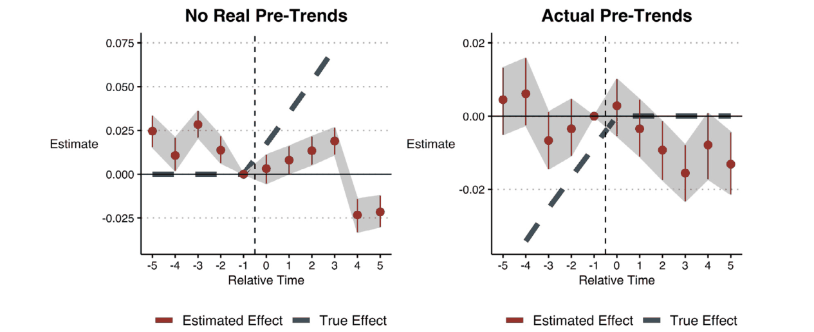
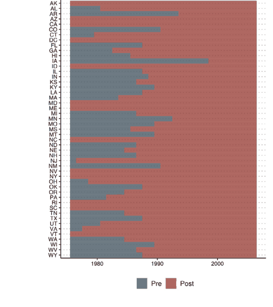
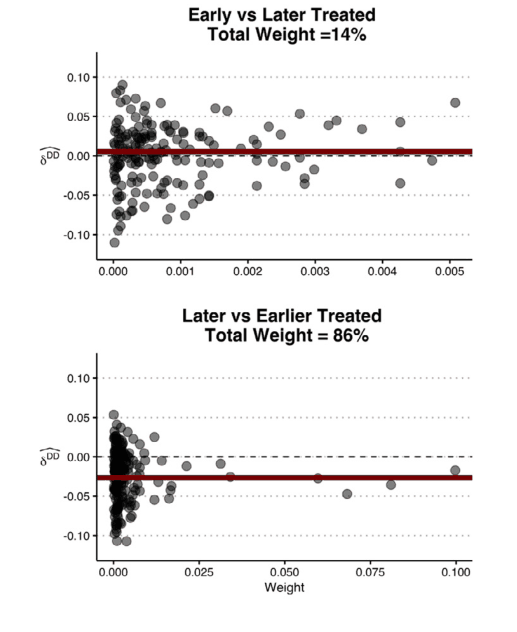
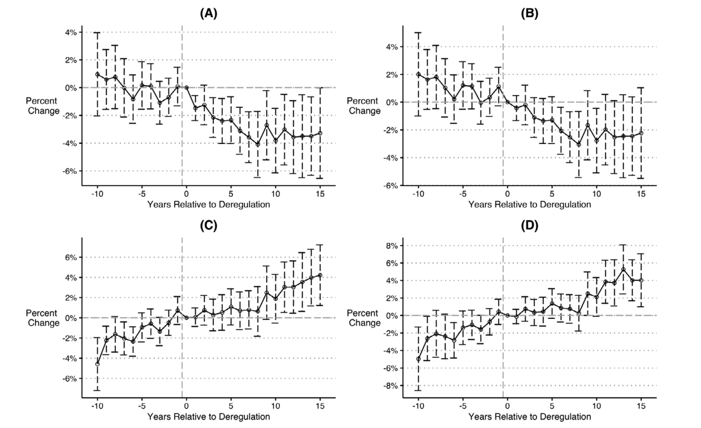
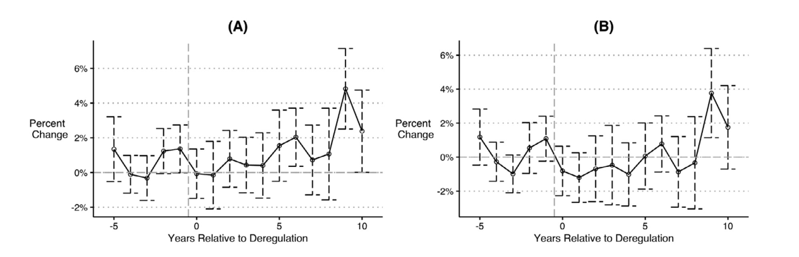
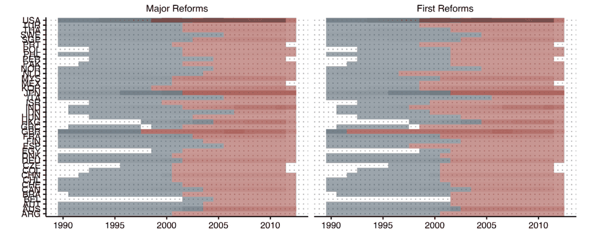
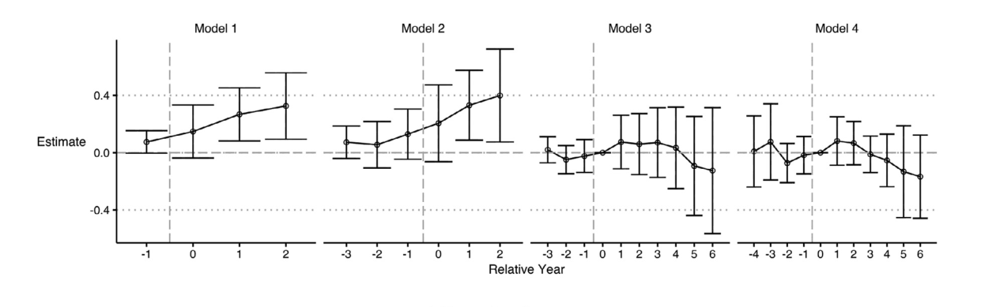
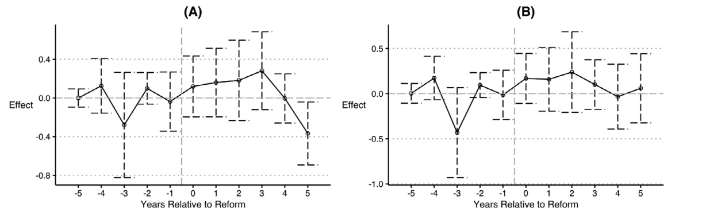
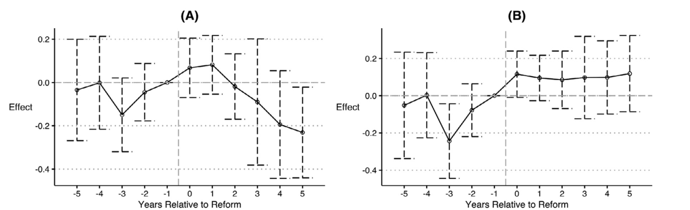

BME 642 마케팅자료분석론 / Week 10 / 발제 독해가이드
Staggered DID 발표 독해가이드
Baker, Larcker & Wang (2022)을 OLS와 2×2 DID에서 출발해 끝까지 따라가고 29장의 발표를 한 장씩 해설하는 자료
행은 단위, 열은 시점이고 색칠된 칸이 도입 이후(D = 1)다. 세 코호트가 서로 다른 시점에 도입하는 것이 시차 도입이다.
목차
시작하기이 가이드를 읽는 법
무엇을 위한 자료인가
이 가이드는 11월 18일 발제를 더 풍부하게 이해할 수 있게끔 돕는 자료이다. 발제 논문은 Baker, Larcker & Wang (2022) "How much should we trust staggered difference-in-differences estimates?"(Journal of Financial Economics 144(2), 370-395)이다. 슬라이드는 29장 124단계이고 대본은 약 38분 분량이다. 슬라이드와 대본에는 한 줄로 지나간 내용이 많다. 이 가이드는 그 한 줄이 왜 성립하는지를 OLS와 2×2 DID에서 출발해 끝까지 따라갈 수 있도록 풀어 썼다.
구성은 다섯 부분이다. 1-3부는 논문의 내용을 덱의 순서대로 설명한다. 4부는 덱 29장을 한 장씩 넘기며 각 장의 화면과 흐름을 정리하고 5부는 질의응답과 다른 수업 자료의 연결 지점을 다룬다. 각 절 제목 옆의 읽음 버튼을 누르면 왼쪽 목차에 표시가 남는다. 이 표시는 지금 사용하는 브라우저에만 저장된다.
| 부분 | 내용 | 덱의 장 |
|---|---|---|
| 1부 | 잠재결과와 ATT, 2×2 DID, TWFE와 FWL 정리, 이미 처치된 단위를 비교집단으로 사용하는 문제, 음의 가중치, Goodman-Bacon 분해 | 2-10장 |
| 2부 | Compustat 시뮬레이션, Sim 1-6, 제1종 오류와 제2종 오류, 사건연구와 Sun-Abraham 분해 | 11-18장 |
| 3부 | Callaway-Sant'Anna, Sun-Abraham, stacked regression, 두 편의 재분석, 6절의 권고, 논문 이후의 연구 | 19-28장 |
| 4부 | 29장 각각의 화면 읽는 법, 단계별 흐름, 막히기 쉬운 지점, 예상 질문 | 1-29장 |
| 5부 | 예상 질문과 답, 수업의 다른 자료와의 연결, 용어집 | 전체 |
본문 곳곳의 덱 1장 같은 단추는 발표 슬라이드의 해당 장을 새 창으로 연다. 슬라이드에서 N 키를 누르면 그 단계의 대본이 화면 아래에 나타난다. 본문의 도식은 다음 버튼이나 자동 재생으로 단계를 넘기고 속도 버튼으로 재생 속도를 바꾼다. 4부의 각 장에는 해당 슬라이드를 가이드 안에 불러와 단계별로 넘겨 보는 미리보기가 있다.
읽을 시간에 맞춘 순서
읽을 시간에 따라 세 가지 순서를 제안한다. 어느 순서로 읽든 1부의 계산 세 개(E와 L 반례, 음의 가중치, Goodman-Bacon 분해)는 먼저 손으로 따라 계산한다. 2부 이후의 내용은 모두 이 세 계산을 응용한 것이다.
논문을 세 문장으로
- 도입 시점이 단위마다 다르고 처치효과가 코호트나 경과 시간에 따라 달라지면 TWFE 회귀의 계수에는 이미 처치된 단위를 비교집단으로 사용하는 2×2 비교가 포함되며 그 결과 계수가 ATT와 달라지고 부호까지 바뀌는 경우가 있다.
- 저자들은 실제 기업 자료(Compustat)로 만든 시뮬레이션에서 이 편향이 생기는 조건을 확인했다. 이미 처치된 단위를 비교집단에서 제외하는 대안 추정량 세 가지(Callaway-Sant'Anna, Sun-Abraham, stacked regression)는 같은 자료에서 참값을 복원했다.
- 상위 학술지에 출판된 두 연구(은행 규제완화와 소득 불평등, 이사회 개혁과 기업가치)를 다시 분석하자 원래의 결론이 유지되지 않았다. 저자들은 이를 근거로 시차 도입 설계에서 보고할 사항 여섯 가지를 권고했다.
기억해 둘 수치
논문과 발표의 논지를 받치는 수치들이다. 출처 열은 그 수치가 원문의 값인지, 설명을 위해 만든 가상 수치인지, 덱이 브라우저에서 다시 계산한 값인지, 논문 이후 연구의 값인지를 구분한다.
| 수치 | 무엇인가 | 출처 | 덱 |
|---|---|---|---|
| 744, 407, 394 | 2000-2019년 금융, 회계 상위 10개 학술지에서 DID를 주된 분석으로 사용한 논문 수, 그중 시차 도입 설계(54.7%), 그중 2010년 이후 발표 | 원문 Table 1 | 2장 |
| −2 | 효과가 2, 10, 2로 모두 양수인 E와 L 반례의 TWFE 계수 | 가상 수치 | 6장 |
| 1.5 대 3.33 | U, k, l 예제의 TWFE 계수와 처치된 여섯 칸의 평균효과 | 가상 수치 | 9장 |
| 0.013σ 대 0.290σ | Sim 5의 TWFE 추정치 평균과 기업평균 ATT. 주 단위 군집강건 표준오차로 검정하면 83%가 유의하지 않음 | 덱 계산(균형패널) | 14장 |
| 21% | 효과 증가 속도의 표준편차가 σ의 3%일 때 기대 ATT가 0인데도 유의하지 않게 나온 모의자료의 비율 | 원문 Fig. 4 | 15장 |
| −0.022, 85.7% | BLL의 TWFE 계수(로그 Gini)와, 이미 규제를 완화한 주를 비교집단으로 사용한 2×2의 가중치 비중 | 원문 Table 2, Fig. 8 | 23장 |
| 0.001, 0.000 | BLL을 CS와 stacked로 다시 추정한 값 | 원문 Table 2 | 23장 |
| 0.110 대 0.062, 0.063 | FHLT 주요 개혁의 TWFE 계수(Tobin's Q) 대 CS, stacked 추정치(둘 다 유의하지 않음) | 원문 Table 3 | 25장 |
| 25.1%, 18.0% | Management Science와 Marketing Science 논문 40편을 다시 추정했을 때 TWFE와 새 추정치의 부호가 반대인 비교의 비율 | Proserpio (2026), 심사 전 원고 | 28장 |
색과 표시의 약속
가이드의 그림과 계산기는 덱과 같은 색을 사용하므로 덱을 함께 보아도 같은 대상이 같은 색으로 보인다.
본문의 상자는 다섯 종류다. 파란 상자는 그 절의 핵심 정리, 붉은 상자는 헷갈리기 쉬운 점, 회색 상자는 손계산, 황색 상자는 발표에서 그대로 말할 수 있는 문장, 점선 상자는 화면 수치의 출처다.
1부기초에서 핵심 직관까지
1부는 덱 2-10장의 내용을 OLS 회귀와 두 집단 두 시점 DID에서 출발해 다시 구성한다. 여기에 잠재결과, 고정효과 회귀의 계산 방식, Frisch-Waugh-Lovell 정리를 차례로 더하면 도입 시점이 다른 자료에서 회귀계수 하나가 왜 ATT와 동떨어진 값을 낼 수 있는지 숫자로 끝까지 따라갈 수 있다. 덱에서는 한 장에 30초에서 2분 정도로 지나가는 내용이지만 질문을 받으면 이 부분의 논리가 그대로 필요하다.
처음 읽을 때는 각 소절의 본문과 손계산 상자만 따라가고 접힌 질문은 나중에 펼쳐 보기를 권한다. 1부의 중심은 가장 작은 반례, 음의 가중치, Goodman-Bacon 분해의 세 소절이다. 이 세 곳의 숫자를 손으로 다시 계산할 수 있으면 덱 6-9장은 대본 없이도 설명할 수 있다.
시차 도입이라는 설계
논문이 다루는 자료는 여러 단위가 같은 제도를 서로 다른 해에 도입한 패널이다. 미국의 각 주가 은행 지점 설립 규제를 서로 다른 해에 완화했다거나, 나라마다 이사회 개혁을 서로 다른 해에 시행한 경우가 대표적이다. 이런 구조를 시차 도입(staggered adoption)이라고 부르고 이 자료에 DID를 적용한 설계를 staggered DID라고 한다. 한 번 도입한 제도는 이후 계속 유지된다고 가정한다. 도입과 폐지가 반복되는 자료는 이 논문의 논의 범위 밖이다 (원문 각주 3).
단위 가 제도를 처음 도입한 시점을 라고 적는다. 그러면 단위 가 시점 에 도입 후 상태인지를 나타내는 처치변수는 다음과 같다.
같은 해에 도입한 단위들의 집단을 코호트(cohort)라고 부른다. 1989년에 도입한 주들이 1989년 코호트, 1998년에 도입한 주들이 1998년 코호트다. 도입 후 경과한 기간은 상대시점(relative time) 로 적는다. 2010년이라는 같은 달력 연도에도 1989년 코호트는 , 2007년 코호트는 에 있다. 달력 시점과 상대시점을 구분하는 일이 이 논문 전체를 이해하는 출발점이다.
1부에서 사용할 기호를 아래 표에 정리했다. 표기는 덱과 심층요약을 따른다. 원문은 도입 시점을 로 적지만 덱과 심층요약은 기댓값 기호 와 혼동되지 않도록 를 사용한다.
| 기호 | 의미 | 은행 규제완화 예 |
|---|---|---|
| , | 단위, 달력 시점 | 주, 연도 |
| 단위 의 도입 시점 (같은 를 가진 단위들이 코호트 ) | 그 주가 규제를 완화한 해 | |
| 도입 후 여부 | 완화 후 연도이면 1 | |
| 상대시점 | 완화 2년 뒤이면 2 | |
| , | 미처치, 처치 상태의 잠재결과 | 완화가 없었을 때, 있었을 때의 불평등 |
| 칸 하나의 처치효과 | 그 주 그 해의 완화 효과 | |
| 코호트 의 시점 평균효과 (원문 식 3) | 1990년 완화 주들의 1998년 평균효과 | |
| (원문 ) | TWFE 회귀의 도입 후 더미 계수 | 논문들이 보고한 "규제완화 효과" |
왜 표준 설계가 되었나
저자들은 2000-2019년 금융 상위 5개, 회계 상위 5개 학술지에 실린 논문을 직접 읽고 주된 분석에 DID를 사용한 논문과 그중 시차 도입 설계를 사용한 논문을 세었다 (원문 Table 1).
| 분야 | DID 논문 | 시차 도입 설계 | 비율 |
|---|---|---|---|
| 금융 5개 학술지 | 431 | 236 | 54.7% |
| 회계 5개 학술지 | 313 | 171 | 54.6% |
| 합계 | 744 | 407 | 54.7% |
407편 가운데 394편(97%)이 2010년 이후에 발표되었으므로 시차 도입 설계는 최근 10년 사이에 표준으로 자리 잡았다 (원문 서론). 원문은 연구자들이 이 설계를 선호한 이유도 설명한다. 도입 시점이 하나인 DID에서는 같은 시기에 우연히 일어난 다른 충격이 효과처럼 보일 수 있다. 도입 사건이 여러 해에 흩어져 있으면 특정 연도의 우연한 충격이 결과 전체를 좌우할 가능성이 감소하므로 연구자들은 이 설계를 더 견고하다고 여겨 왔다 (원문 3절 도입부).
마케팅에서도 같은 구조가 흔하다. 다음은 설명을 위한 가상 예다. 음식 배달 플랫폼이 구독 멤버십을 서울에서 1월, 부산에서 4월, 대구에서 9월에 출시하고 도시별 월간 주문 빈도를 비교하는 경우, 오픈마켓이 리뷰 사진 기능을 카테고리별로 순차 적용하고 카테고리별 전환율을 비교하는 경우, 프랜차이즈가 매장마다 다른 달에 셀프 계산대를 설치하고 매장별 객단가를 비교하는 경우가 모두 시차 도입이다. 이런 자료를 받으면 대부분의 연구자는 단위 고정효과와 시점 고정효과를 넣고 도입 후 더미의 계수를 추정한다. 이 논문이 문제 삼는 것이 그 계수다.
논문의 질문과 답
논문의 질문은 다음과 같이 요약된다. 단위와 연도 고정효과를 포함한 회귀의 도입 후 더미 계수 를 처치집단의 평균처치효과(ATT)로 해석해도 되는가. 답은 조건부다. 도입 시점이 다르고 효과가 코호트나 도입 후 경과기간에 따라 달라지면 는 ATT와 다른 값이 되며 부호까지 반대가 될 수 있다. 처치를 무작위로 배정해 평행추세 가정이 완벽하게 성립해도 마찬가지다 (원문 서론).
관련 장: 덱 2장, 덱 3장. 제목이 비슷한 3주차 자료 Bertrand, Duflo, Mullainathan (2004) "How much should we trust differences-in-differences estimates?"는 DID 표준오차의 문제를 다루었다. 이 논문의 제목은 그 논문을 의식해 붙인 것이고 3절의 시뮬레이션 방식도 그 논문을 따른다 (원문 3.1.1절).
잠재결과와 ATT
DID가 무엇을 추정하는지 정확히 말하려면 잠재결과(potential outcome)라는 언어가 필요하다. 단위 가 시점 에 처치를 받았을 때의 결과를 , 받지 않았을 때의 결과를 라고 적는다 (원문 2.1절). 두 값 가운데 실제로 관측되는 것은 하나뿐이다.
이 식이 성립하려면 한 단위의 결과가 자기 처치에만 의존하고 다른 단위의 처치에는 영향받지 않아야 한다. 이 조건을 SUTVA(stable unit treatment value assumption)라고 부른다 (원문 각주 1). 예를 들어 부산의 멤버십 출시가 서울 이용자의 주문에 영향을 준다면 SUTVA가 위배된다.
칸 하나의 처치효과는 두 잠재결과의 차이다.
처치된 칸에서는 만 관측되고 는 관측되지 않는다. 이것을 인과추론의 근본적인 결측 문제라고 부른다. DID는 비교집단의 결과 변화로 처치집단의 관측되지 않는 경로를 채워 넣는 방법이다.
아래 도식은 작은 가상 패널에서 무엇이 관측되고 무엇이 보이지 않는지를 단계별로 보여 준다. 처치된 칸마다 비어 있는 를 채워야 효과를 계산할 수 있다.
ATT와 ATT(g, t)
평균처치효과(ATT, average treatment effect on the treated)는 처치를 받은 단위들에서 를 평균한 값이다. 시차 도입에서는 이 평균을 코호트와 시점별로 나누어 정의하면 편리하다. 원문 식 (3)은 코호트 의 시점 평균효과를 다음처럼 정의한다.
이 정의는 효과가 코호트마다 달라도 되고(에 의존), 같은 코호트 안에서도 시점마다 달라도 되도록(에 의존) 허용한다. 이 두 종류의 차이를 효과의 이질성(treatment effect heterogeneity)이라고 부른다. 두 종류는 뒤에서 서로 다른 문제를 일으키므로 처음부터 구분해 둔다.
| 이질성의 종류 | 의미 | 가상 예 | 뒤에서 일으키는 문제 |
|---|---|---|---|
| 코호트 간 이질성 | 코호트마다 효과의 크기가 다르지만 도입 후에는 일정 | 서울의 멤버십 효과는 항상 +3회, 대구는 항상 +1회 | TWFE가 코호트 효과를 연구자가 원하는 비중과 다른 비중으로 평균한다 (Sim 4) |
| 시간에 따른 변화 | 같은 코호트의 효과가 도입 후 경과기간에 따라 변함. 동태적 처치효과(dynamic treatment effects)라고 부른다 | 멤버십 효과가 첫 달 +1회, 1년 뒤 +4회로 누적 | 이미 처치된 집단의 효과 변화가 비교 기준으로 차감되어 편향이 생긴다 (Sim 5, 6) |
DID가 겨냥하는 대상이 전체 평균처치효과(ATE)가 아닌 ATT인 이유도 짚어 둔다. DID는 처치집단의 관측되지 않는 경로만 비교집단으로 채운다. 비교집단이 처치를 받았다면 얼마나 변했을지, 곧 비교집단의 에 관해서는 아무 가정도 하지 않는다. 평행추세 가정 하나로 식별되는 대상이 처치를 실제로 받은 단위와 시점의 평균효과로 한정되는 이유다. 이 논문이 "TWFE 계수가 ATT와 같은가"를 묻는 것도 같은 이유에서다.
저자들은 많은 경제 상황에서 효과가 도입 후 변한다고 가정하는 것이 가장 합리적이라고 판단한다 (원문 서론, 3쪽). 광고나 고객 관계처럼 효과가 누적되는 마케팅 변수에서는 이 판단이 더욱 자연스럽다.
표본평균 ATT는 하나가 아니다
시뮬레이션에서 추정치와 비교할 정답을 정할 때, 저자들은 표본평균 ATT를 두 가지로 정의했다 (원문 3.1.1절). 기업평균 ATT(firm-average ATT)는 처치기업마다 사후 기간 효과를 먼저 평균한 뒤 기업 사이에서 다시 평균한다. 관측치평균 ATT(observation-average ATT)는 모든 사후 처치 관측치를 같은 비중으로 평균한다. 관측치평균은 사후 관측이 많은 기업에 더 큰 비중을 준다. 원문은 두 정의 가운데 개념적으로 더 옳은 것은 없다고 적었다.
원문은 두 평균이 균형패널이거나 효과가 일정하면 같아진다고 설명한다. 이 설명은 도입 시점이 하나인 Simulation 2의 맥락에서 나온 것이다. 도입 시점이 여럿이면 균형패널에서도 코호트마다 사후 관측 수가 달라지므로 효과가 시간에 따라 변하는 위 예처럼 두 값이 달라진다. 덱 11장의 마지막 단계와 12장의 세로 점선 두 개가 이 두 기준이다.
두 집단 두 시점 DID 다시 보기
덱 4장의 가상 수치로 시작한다. 처치집단 T의 결과는 처치 전 50에서 처치 후 60으로, 두 시점 모두 처치받지 않은 비교집단 C의 결과는 30에서 34로 변했다.
| 집단 | 처치 전 (0기) | 처치 후 (1기) | 변화 |
|---|---|---|---|
| 처치집단 T | 50 | 60 | +10 |
| 비교집단 C | 30 | 34 | +4 |
| 차이 | 20 | 26 | DID = 6 |
아래 도식에서 다음을 누르면 비교집단의 변화가 처치집단의 출발점으로 옮겨지며 반사실적 결과가 만들어진다. 시차 도입의 문제는 이 장면에서 옮겨지는 선분이 정책 없이 일어난 변화가 아닐 때 생긴다.
T의 변화 +10에는 정책효과와 정책이 없었어도 일어났을 변화가 함께 들어 있다. C는 두 시점 모두 처치를 받지 않았으므로 C의 변화 +4는 정책 없이 일어난 변화다. T도 정책이 없었다면 똑같이 4만큼 변했을 것이라고 가정하면 T가 처치받지 않았을 때의 처치 후 결과, 곧 반사실적 결과(counterfactual outcome)는 다. 관측값 60과 반사실적 결과 54의 차이 6이 ATT의 추정치다.
잠재결과로 쓰면
원문 2.1절의 전개를 이 예에 맞춰 옮긴다. T의 관측된 변화를 잠재결과로 적고 를 더하고 빼면 두 부분으로 나뉜다.
(a)는 T의 관측된 변화 +10, (b)는 알고 싶은 ATT, (c)는 T가 처치받지 않았다면 겪었을 변화다. (c)는 T에서 를 관측할 수 없으므로 자료에서 직접 계산할 수 없다.
여기에는 예고효과(anticipation)가 없다는 가정이 들어 있다. 처치 전 시점의 관측값이 이려면 도입을 예상한 단위가 도입 전에 미리 행동을 바꾸지 않아야 한다. 평행추세 가정(parallel trends assumption)은 (c)가 비교집단의 미처치 변화와 평균적으로 같다는 가정이다.
이 가정 아래에서 관측 가능한 두 변화의 차이가 ATT가 된다. 가정이 요구하는 것은 처치가 없었을 때의 변화가 같다는 것뿐이므로 두 집단의 수준은 달라도 된다. 위 예에서 T는 50, C는 30으로 수준이 20만큼 다르지만 추정에는 문제가 없다. 처치 후에 관측된 두 집단의 추세도 평행할 필요가 없다. 처치 후 처치집단의 경로가 달라지는 부분이 효과이며 가정이 다루는 것은 "처치가 없었다면"의 반사실적 경로다.
같은 값을 회귀로 얻기
실무에서는 네 평균을 직접 차감하는 대신 회귀를 사용한다 (원문 식 1).
는 처치집단 표시, 는 처치 후 시점 표시다. 집단 둘과 시점 둘이 만드는 네 칸의 평균을 모수 네 개가 정확히 맞추므로 OLS 추정값은 다음과 같다.
| 모수 | 값 | 어느 칸에서 결정되나 |
|---|---|---|
| 30 | C의 처치 전 평균 | |
| 20 | 처치 전 T와 C의 수준 차이 | |
| 4 | C의 시간 변화 | |
| 6 | T의 처치 후 칸에 남는 차이 |
는 정의상 와 같다. 회귀를 사용하면 표준오차가 함께 나오고 집단, 시점, 공변량을 쉽게 추가할 수 있다. 원문은 Angrist and Pischke (2009)의 "주나 시점을 추가하기 쉽고 공변량을 추가하기 쉽다"는 문장을 인용하면서 이 유연성 때문에 같은 회귀가 도입 시점이 여러 개인 자료에도 별다른 점검 없이 확장되었다고 본다 (원문 2.2절).
관련 장: 덱 4장.
TWFE 회귀가 하는 일
집단과 시점이 여럿이면 연구자들은 보통 다음 회귀를 추정한다 (원문 식 2).
는 단위 고정효과(unit fixed effects), 는 시점 고정효과(time fixed effects)다. 두 종류의 고정효과를 함께 넣는다고 해서 이 회귀를 이원 고정효과, 줄여서 TWFE(two-way fixed effects) 회귀라고 부른다. 원문은 계수를 로 적고 덱은 로 적는다.
두 고정효과가 하는 일은 다음과 같다.
- 단위 고정효과 는 단위마다 시간에 따라 변하지 않는 수준 차이를 흡수한다. 원래 수익성이 높은 기업, 원래 불평등이 큰 주의 차이가 여기에 들어간다.
- 시점 고정효과 는 모든 단위에 공통인 시점별 변화를 흡수한다. 전국 경기 변동이나 업계 공통의 추세가 여기에 들어간다.
두 집단 두 시점에서는 이 회귀가 식 (1)과 정확히 같다. 단위 고정효과 두 개가 와 의 역할을, 시점 고정효과가 의 역할을 하며 네 칸을 모수 네 개(단위 효과 2개, 시점 효과 1개, )가 정확히 맞추므로 이다. 원문이 "단위와 시점 고정효과가 와 의 주효과를 포함한다"고 적은 것이 이 의미다 (원문 2.2절).
시차 도입으로 옮기면
시차 도입에서도 회귀식은 그대로이고 만 로 바뀐다. 다음은 세 코호트와 여섯 시점의 가상 배치다. 1은 도입 후 칸이다.
| 단위 | 도입 시점 | 1기 | 2기 | 3기 | 4기 | 5기 | 6기 |
|---|---|---|---|---|---|---|---|
| A | 2기 | 0 | 1 | 1 | 1 | 1 | 1 |
| B | 4기 | 0 | 0 | 0 | 1 | 1 | 1 |
| C | 6기 | 0 | 0 | 0 | 0 | 0 | 1 |
이 표에서 회귀는 계수 하나로 1이 적힌 칸 전체의 효과를 요약한다. A의 6기는 도입 4기 뒤이고 C의 6기는 도입 첫 기인데도 같은 에 들어간다. 효과가 모든 칸에서 같다면 문제가 없다. 효과가 칸마다 다르면 가 각 칸의 효과에 얼마의 비중을 주어 평균하는지가 질문이 된다.
정적 계수 하나 대신 상대시점마다 계수를 따로 추정하는 사건연구(event study) 회귀도 같은 고정효과 구조를 사용한다. 연구자들은 이 회귀를 동태적 효과를 허용하는 TWFE로 여겨 왔지만 원문은 사건연구 계수에도 같은 문제가 있음을 보인다 (원문 3.2절). 이 내용은 2부에서 다룬다. 1부는 계수 하나짜리 정적 회귀(static TWFE)에 집중한다.
관련 장: 덱 5장 3단계.
회귀계수를 잔차로 다시 쓰기 (FWL 정리)
TWFE 계수가 무엇을 평균하는지 보려면 계수를 직접 계산할 수 있는 식이 필요하다. OLS를 아는 독자에게 가장 가까운 도구는 Frisch-Waugh-Lovell 정리(FWL 정리)다.
FWL 정리는 다음과 같다. 를 과 에 함께 회귀했을 때 의 계수는 (1) 을 에 회귀한 잔차 을 구하고 (2) 를 하나에 회귀한 계수와 같다. 다른 독립변수로 설명되는 부분을 먼저 제거한 뒤 남은 변동만으로 계수를 구한다는 의미다. 회귀분석 수업에서 "다른 변수를 통제한 효과"라고 부르던 것을 계산 절차로 적은 것이 FWL 정리다.
TWFE 회귀에서 은 처치변수 , 는 단위 더미와 시점 더미 전체다. 그러면 계수는
이고, 는 를 단위 더미와 시점 더미에 회귀한 잔차다. 분자에 의 잔차 대신 를 그대로 사용해도 되는 이유는 가 단위 더미, 시점 더미와 직교해서 의 고정효과 부분과 곱한 합이 0이 되기 때문이다.
균형패널에서 잔차를 구하는 공식
모든 단위가 모든 시점에 관측되는 균형패널에서는 를 고정효과에 회귀한 적합값의 형태가 간단하다.
는 단위 가 처치 상태로 관측된 기간의 비율, 는 시점 에 처치 상태인 단위의 비율, 는 전체 평균이다. 단위 평균과 시점 평균에는 전체 평균이 한 번씩 들어 있으므로 두 번 차감한 전체 평균을 한 번 더한다. 이렇게 만든 잔차는 단위별로 합해도 0이고 시점별로 합해도 0이다. 잔차가 두 종류의 더미와 직교한다는 조건이 정확히 이것이다.
적합값이 왜 하필 "단위 평균 + 시점 평균 − 전체 평균"인가?
단위 더미와 시점 더미로 설명할 수 있는 패턴은 "단위마다 일정한 값 + 시점마다 일정한 값"이라는 덧셈 구조뿐이다. 행이 단위, 열이 시점인 표에 이런 덧셈 구조를 최소제곱으로 맞추면 행 효과는 행 평균에서 전체 평균을 차감한 값, 열 효과는 열 평균에서 전체 평균을 차감한 값이 된다. 둘을 전체 평균에 더하면 다. 이원분산분석(two-way ANOVA)에서 주효과를 구하는 방식과 같다.
이 공식은 균형패널에서만 정확하다. 불균형 패널에서는 단위마다 관측되는 시점이 달라 행 평균과 열 평균이 서로 얽히므로 회귀를 반복 계산해야 잔차를 얻는다. 원문이 Goodman-Bacon 분해를 균형패널에서만 적용할 수 있다고 적은 것도 같은 맥락이다 (원문 3.1.2절).
계수를 칸별 효과의 가중합으로
이제 결과의 구조가 다음과 같다고 하자 (심층요약 4절의 교육용 전개).
미처치 잠재결과 가 단위 수준과 공통 시점효과로만 이루어진다는 것은 평행추세 가정을 회귀 언어로 적은 것이다. 는 칸마다 달라도 된다. 이 식을 FWL 식에 대입하면 가 , 와 직교하므로 두 항이 사라지고 잡음의 기댓값도 0이므로 다음만 남는다.
처치된 칸의 가중치를 모두 더하면 정확히 1이다. 이고 가 적합값 와 직교하므로 가 성립하기 때문이다. TWFE 계수는 처치된 칸의 효과를 합이 1인 가중치로 평균한 값이며 이 가중치에는 음수가 나올 수 있다.
관련 장: 덱 7장. 다음 소절들에서 이 식을 작은 예제에 그대로 적용한다.
이미 처치된 단위가 비교집단이 되는 이유
덱 5장은 원문 시뮬레이션의 도입 배치를 그린다. 50개 주가 세 코호트로 나뉘어 1989년(17개 주), 1998년(18개 주), 2007년(15개 주)에 도입하고 끝까지 처치받지 않는 주는 없다. 코호트별 주 수는 공개 복제 코드의 배정이다 (작업기록 2.4절). 2010년 열 하나만 보아도 도입 21년 뒤, 12년 뒤, 3년 뒤인 주가 함께 있다. 효과가 시간이 지나며 누적된다면 이 세 칸의 효과는 서로 다르지만 TWFE는 색칠된 칸 전체를 계수 하나로 요약한다.
Goodman-Bacon (2021)은 이 계수가 "자료 안에서 만들 수 있는 모든 두 집단, 두 기간 DID의 가중평균"임을 보였다 (원문 3.1절). 두 집단, 두 기간만으로 계산한 DID를 앞으로 2×2 DID라고 부른다. 세 코호트가 있고 미처치 집단이 없으면 2×2는 여섯 개다.
| 처치집단 | 비교집단 | 사용 기간 | 비교집단의 상태 |
|---|---|---|---|
| 1989년 코호트 | 1998년 코호트 | 1980-1997년 | 아직 미처치 |
| 1989년 코호트 | 2007년 코호트 | 1980-2006년 | 아직 미처치 |
| 1998년 코호트 | 2007년 코호트 | 1980-2006년 | 아직 미처치 |
| 1998년 코호트 | 1989년 코호트 | 1989-2015년 | 이미 처치됨 |
| 2007년 코호트 | 1989년 코호트 | 1989-2015년 | 이미 처치됨 |
| 2007년 코호트 | 1998년 코호트 | 1998-2015년 | 이미 처치됨 |
위 세 줄은 먼저 도입한 코호트를 아직 처치받지 않은 코호트와 비교하는 2×2다. 비교집단이 그 기간 동안 미처치이므로 두 집단 두 시점 DID와 같은 논리로 정당하다. 아래 세 줄은 나중에 도입한 코호트를 이미 처치된 코호트와 비교한다. 사용 기간은 비교집단이 도입한 해부터 자료 끝까지이며 그 기간에 비교집단은 처치된 상태를 유지한다. 원문은 이 비교를 "문제 소지가 있는 2×2(potentially problematic 2×2)"라고 부른다 (원문 3.1절).
아래 도식에서 여섯 비교를 차례로 선택하면 각 2×2가 어느 집단의 어느 기간을 사용하는지와 그 DID가 처치집단의 실제 효과와 얼마나 다른지가 함께 나타난다. 효과 형태를 Sim 4(효과 일정)로 바꾸면 이미 처치된 코호트와의 비교도 정확해진다.
회귀는 왜 이런 비교를 쓰나
회귀는 어느 단위가 올바른 비교집단인지 판단하지 않는다. 고정효과를 제거하고 남은 처치변수의 모든 변동을 사용할 뿐이다. 1998년 코호트가 도입하는 순간 1989년 코호트는 처치 상태가 바뀌지 않은 채 머물러 있으므로 회귀의 계산에서는 1998년의 변화와 대조할 수 있는 단위가 된다. 두 집단 두 시점 DID에서 비교집단을 "처치 상태가 변하지 않은 집단"으로 정의했던 논리가 여기서는 "처치 상태가 계속 1인 집단"에도 적용된다.
이미 처치된 비교집단의 결과 변화에는 처치가 없었어도 일어났을 변화에 더해 그 기간 동안 비교집단의 효과가 변한 부분이 들어 있다. 효과가 도입 후 일정하다면 이 부분은 0이고 비교는 정당하다. 효과가 누적된다면 이 부분이 양수이므로 DID는 나중 코호트의 효과에서 이 누적분을 차감한 값이 된다. 앞 소절의 기준으로 말하면 "차감하는 변화가 처치 없이 일어난 변화여야 한다"는 조건이 깨진다.
마케팅 예로 따라가기
앞의 배달 플랫폼 가상 예로 같은 일을 따라간다. 서울은 1월에, 부산은 4월에 구독 멤버십을 출시했고 멤버십 효과는 가입자가 늘면서 출시 후 매달 커진다고 하자. 회귀가 4월 이후 부산의 주문 변화를 평가할 때 비교 대상에는 서울이 들어간다. 그런데 서울의 4월 이후 주문은 계절이나 경기 같은 공통 변화에 더해 서울 멤버십 효과가 계속 커지는 부분까지 포함한다. 회귀는 이 증가분을 "멤버십이 없었어도 일어났을 변화"로 취급해 부산의 변화에서 차감한다. 부산의 멤버십에 실제로 효과가 있어도 서울의 효과가 더 빨리 커지고 있다면 부산의 추정 효과는 작게 계산되고 경우에 따라서는 음수가 된다.
"도입 사건이 여러 번이면 더 견고하다"는 직관이 이 문제를 막지 못하는 이유도 여기서 보인다. 그 직관이 겨냥하는 위험은 특정 시기의 우연한 충격, 곧 미처치 추세가 집단마다 달라지는 문제(평행추세 위반)다. 지금의 문제는 미처치 추세가 정확히 같아도 생기는 별개의 문제이며 도입 사건이 많을수록 이미 처치된 집단을 비교집단으로 사용하는 2×2도 함께 증가한다 (가중치의 성질 참고).
관련 장: 덱 5장 4단계. 덱의 ①은 아직 미처치인 코호트와의 비교, ②는 이미 처치된 코호트와의 비교다.
가장 작은 반례 (E와 L)
나쁜 비교가 계수를 얼마나 바꿀 수 있는지 가장 작은 자료로 확인한다. 덱 6장의 예제이고 심층요약 5절의 교육용 가상 수치다 (원문의 예제는 아니다).
크기가 같은 두 집단 E(early)와 L(late)를 세 시점 동안 관측한다. E는 2기에, L은 3기에 도입한다. 정책이 없었을 때의 결과 를 모든 칸에서 0으로 설정했으므로 평행추세 가정은 완벽하게 성립하고 관측값의 높이가 곧 처치효과다.
| 집단 | 1기 (Y, D) | 2기 (Y, D) | 3기 (Y, D) |
|---|---|---|---|
| E (2기 도입) | 0, 0 | 2, 1 | 10, 1 |
| L (3기 도입) | 0, 0 | 0, 0 | 2, 1 |
E의 효과는 도입 첫 기에 2였다가 다음 기에 10으로 커지며 L의 첫 효과는 2다. 세 효과가 모두 양수다. 이 자료에서 만들 수 있는 2×2는 두 개다.
두 비교가 같은 가중치를 받는 이유는 구조가 대칭이기 때문이다. 두 비교 모두 두 기간을 사용하고 두 집단의 크기가 같으며 각 비교 안에서 처치집단이 정확히 절반의 기간 동안 처치된다. 가중치를 정하는 요인은 가중치의 성질에서 일반적으로 다룬다.
효과를 기호로 두면
세 효과에 이름을 붙이면 무슨 일이 일어나는지 더 분명해진다. E의 2기, 3기 효과를 , L의 3기 효과를 라고 하자 (심층요약 6.1절).
비교 ②에 E의 효과 변화 가 차감되어 들어간다. 두 비교를 절반씩 더하고 괄호를 풀면 다음과 같다.
이 식이 아래 계산기의 공식이며 여기서 다음을 읽을 수 있다.
- E의 효과가 일정하면() 로 두 코호트 효과를 절반씩 평균한 값이 된다. 부호가 뒤집히는 일은 없다.
- 로 두면 이므로 E의 3기 효과가 6이면 계수가 정확히 0이고 6을 초과하면 음수가 된다. 효과가 빠르게 누적될수록 계수가 더 낮아진다.
- 효과가 모든 칸에서 같으면() 이다. 도입 시점이 달라도 효과가 동질적이면 편향이 없다.
Goodman-Bacon의 세 항으로 쓰면
같은 −2를 원문 식 (4)의 세 항으로 나눌 수 있다 (식의 의미는 Goodman-Bacon 분해 소절에서 자세히 설명한다).
- VWATT(분산가중 평균처치효과): 각 비교에서 처치집단 역할을 한 집단의 실제 효과를 비교의 가중치로 평균한 값. 비교 ①의 처치집단 E의 효과 2, 비교 ②의 처치집단 L의 효과 2를 절반씩 평균해 2다.
- VWCT(분산가중 공통추세): 미처치 추세 차이의 가중평균. 모든 가 0이므로 0이다.
- ΔATT: 이미 처치된 비교집단의 효과가 비교 기간 동안 변한 양의 가중합. 비교 ②에서 E의 효과가 8만큼 변했고 가중치가 1/2이므로 4다.
계산기로 다음을 차례로 시험해 보면 1부의 결론을 숫자로 확인할 수 있다.
- 기본값(2, 10, 2)에서 계수 −2와 비교 ②의 −6을 확인한다.
- E의 3기 효과를 2로 바꾼다. 효과가 일정해지면 비교 ②도 2가 되고 계수는 2로, 세 칸의 효과와 같아진다.
- E의 3기 효과를 6으로 둔다. 계수가 0이 된다. 효과가 모두 양수인데 "효과 없음"이 추정되는 상황이 뒤의 제2종 오류(2부)의 축소판이다.
- E의 효과를 2기와 3기 모두 5, L의 효과를 1로 둔다. 코호트마다 효과가 다르지만 시간에 따라 일정한 경우다. 계수는 3으로 두 코호트 효과를 절반씩 평균한 값이며 세 칸의 단순평균 3.67과 다르다. 부호는 맞지만 평균하는 비중이 다른 경우로 원문 Simulation 4의 축소판이다.
관련 장: 덱 6장.
처치된 칸의 음의 가중치
앞 소절은 2×2 비교 두 개의 평균으로 −2를 얻었다. 덱 7장은 같은 값을 회귀가 실제로 계산하는 순서, 곧 FWL 식으로 다시 얻는다. 여섯 칸 모두를 표로 계산한다.
먼저 평균을 구한다. E는 세 기 가운데 두 기 처치되므로 , L은 한 기 처치되므로 이다. 시점별 처치 비율은 1기 0, 2기 1/2, 3기 1이다. 전체 평균은 여섯 칸 가운데 세 칸이 처치되었으므로 이다.
| 칸 | 적합값 | 가중치 | 가중치 × | |||
|---|---|---|---|---|---|---|
| E 1기 | 0 | 0 | 0 | |||
| E 2기 | 1 | 2 | 2 | |||
| E 3기 | 1 | 10 | −5 | |||
| L 1기 | 0 | 0 | 0 | |||
| L 2기 | 0 | 0 | 0 | |||
| L 3기 | 1 | 2 | 1 |
문제의 칸은 E 3기다. 이 칸은 실제로 처치되었지만 E가 처치 기간이 긴 단위이고 3기가 모든 단위가 처치된 시점이어서 적합값이 로 1을 초과한다. 는 1을 초과할 수 없으므로 잔차가 이 되고 이 칸의 효과 10은 의 가중치로 계수에 들어간다. 효과가 가장 큰 칸이 계수를 가장 크게 끌어내리는 구조다. 미처치 칸의 가중치(E 1기 −1/2, L 1기 1/2, L 2기 −1)는 합이 −1이지만 이 칸들의 효과는 0이므로 계수에 기여하지 않는다. 일반적인 자료에서도 미처치 칸의 결과는 평행추세 가정 아래 고정효과에 흡수된다.
L 1기의 적합값은 로 0보다 작다. 고정효과로 처치 여부를 맞추는 것은 선형확률모형과 같은 선형 근사이므로 적합값이 0과 1 사이에 머물 이유가 없다.
위 표의 계산을 그림으로 따라가면 다음과 같다. 잔차 를 가로축에, 종속변수 를 세로축에 놓으면 TWFE 계수는 그 산점도에 맞춘 직선의 기울기다. 마지막 단계에서 E 3기의 효과를 바꾸면 기울기가 함께 움직인다. 같은 그림이 발표에서는 덱 8장으로 들어가 있다.
두 가지 가중치가 공존하는 이유
앞 소절에서는 2×2 비교 두 개가 모두 양수인 가중치 1/2, 1/2을 받았고 이 소절에서는 처치된 칸 하나가 음의 가중치를 받았다. 두 결과는 가중치가 붙는 대상이 달라서 함께 성립한다.
- 2×2 가중치는 비교(작은 DID)에 붙는다. Goodman-Bacon 분해에서 이 가중치는 항상 양수다.
- 칸별 가중치는 그 비교들을 실제 칸의 효과로 풀어 쓴 뒤 각 효과에 붙는다. 비교 ②는 E의 효과 변화 를 차감하므로 풀어 쓰면 는 빼기 부호를, 는 더하기 부호를 하나 더 얻는다. 그 결과 의 가중치는 , 는 가 된다.
관련 장: 덱 7장.
Goodman-Bacon 분해 (U, k, l 예제)
E와 L 예제에는 한 번도 처치되지 않는 집단이 없었다. 덱 9장은 원문 3.1절이 설명에 사용하는 세 집단 구조를 그대로 옮긴다. 한 번도 처치되지 않는 집단 U(untreated), 먼저 도입하는 집단 k, 나중에 도입하는 집단 l이다. 수치는 심층요약 6.2절의 교육용 가상 자료이고 원문에 없다.
| 집단 | 도입 | 1기 | 2기 | 3기 | 4기 | 5기 |
|---|---|---|---|---|---|---|
| U | 없음 | 0 | 0 | 0 | 0 | 0 |
| k | 2기 | 0 | 1 | 3 | 5 | 7 |
| l | 4기 | 0 | 0 | 0 | 1 | 3 |
세 집단은 한 단위씩이고 미처치 결과는 모두 0이다. 두 코호트 모두 도입 후 1, 3, 5, 7로 효과가 커진다. 코호트 간 효과 경로가 같다는 점에서 원문 Simulation 5와 같은 유형이다. 연구자가 알고 싶은 값은 처치된 여섯 칸의 평균 , 또는 코호트 평균을 같은 비중으로 평균한 3이다 (잠재결과와 ATT 참고). 이 자료에 TWFE를 적용하면 가 나온다.
네 개의 2×2
세 집단이면 2×2는 네 개다 (원문 3.1절). 각 비교의 사용 기간 안에서 처치 전 평균과 처치 후 평균의 차이를 구하고 처치집단의 변화에서 비교집단의 변화를 차감한다.
| 2×2 | 사용 기간 | 처치집단의 전후 변화 | 비교집단의 전후 변화 | DID | 가중치 |
|---|---|---|---|---|---|
| k 대 U | 1-5기 | k: 사후 2-5기 평균 4, 사전 0, 변화 4 | U: 0 | 4 | 1/4 |
| l 대 U | 1-5기 | l: 사후 4-5기 평균 2, 사전 0, 변화 2 | U: 0 | 2 | 3/8 |
| k 대 l | 1-3기 | k: 사후 2-3기 평균 2, 사전 0, 변화 2 | l: 3기까지 미처치, 변화 0 | 2 | 1/8 |
| l 대 k | 2-5기 | l: 사후 4-5기 평균 2, 사전 2-3기 평균 0, 변화 2 | k: 4-5기 평균 6, 2-3기 평균 2, 변화 4 | −2 | 1/4 |
덱 9장 아래 그림은 가로축을 가중치, 세로축을 DID로 두고 네 비교를 직사각형으로 그린다. 직사각형의 면적이 가중치 × DID이므로 부호를 고려해 면적을 더한 값이 TWFE 계수다. 붉은 직사각형(l 대 k)은 0 아래에 놓여 면적을 차감한다.
원문 식 (4)의 세 항
Goodman-Bacon (2021)은 표본이 커질 때 TWFE 계수가 수렴하는 값을 세 항으로 분해했다 (원문 식 4).
| 항 | 원래 이름 | 의미 | 이 예제의 값 |
|---|---|---|---|
| VWATT | variance-weighted average treatment effect on the treated (분산가중 평균처치효과) | 각 2×2에서 처치집단 역할을 한 코호트의 사후 기간 를 그 2×2의 가중치로 평균한 값. 편향이 없다면 TWFE가 추정하는 대상이다 | |
| VWCT | variance-weighted common trend (분산가중 공통추세) | 각 2×2에서 두 집단의 미처치 추세 차이를 가중평균한 값. 모든 2×2에서 평행추세가 성립하면 0이다 | 0 (미처치 결과가 모두 0) |
| ΔATT | change in ATT | 이미 처치된 집단이 비교집단으로 사용되는 기간 동안 그 집단의 가 변한 양의 가중합. 효과가 도입 후 일정하면 0이다 |
VWATT를 계산할 때는 l 대 k의 DID −2 대신 그 비교에서 처치집단 l의 실제 효과 2를 넣는다. 나머지 세 비교는 DID가 곧 실제 효과이므로 그대로다. 그러면
로 회귀계수와 일치한다. 참값 3.33과 계수 1.5의 차이 1.83은 두 부분으로 나뉜다. 1만큼은 ΔATT, 곧 이미 처치된 k의 효과 증가가 차감되어 생긴 편향이다. 나머지 0.83(= 3.33 − 2.5)은 OLS가 분산을 기준으로 비교들을 가중한 방식에서 생긴 차이다. 평행추세 가정이 성립하는 자료인데도 두 부분 모두 0이 아니다.
칸별 가중치로 다시 보면
FWL 식의 칸별 가중치로도 같은 값을 얻는다. 처치 칸의 가중치를 계산하면 다음과 같다 (심층요약 6.2절과 같은 값).
| 칸 | k 2기 | k 3기 | k 4기 | k 5기 | l 4기 | l 5기 |
|---|---|---|---|---|---|---|
| 효과 | 1 | 3 | 5 | 7 | 1 | 3 |
| 가중치 | 1/4 | 1/4 | −1/16 | −1/16 | 5/16 | 5/16 |
합은 이고 다. 가장 큰 효과 5와 7이 들어 있는 k의 후반부 칸이 음의 가중치를 받는다. k 4기의 적합값은 로 1을 초과하고 잔차는 이다. E와 L 예제에서 본 것과 같은 구조가 미처치 집단이 있는 자료에서도 나타난다.
가중치 공식의 구성
원문은 가중치 공식을 싣지 않고 Goodman-Bacon (2021)의 식 (10e)-(10g)를 참조하라고만 적었다 (원문 3.1.2절). 덱과 stats.js가 사용하는 공식을 이 예제에 적용하면 세 요인이 어떻게 결합되는지 확인할 수 있다. 아래에서 은 전체 단위 가운데 각 집단의 비중(여기서는 모두 1/3), 는 전체 관측 기간 가운데 처치 상태인 기간의 비율(, )이다.
네 가중치를 공식으로 직접 계산하면
각 가중치는 세 요인의 곱을 처치변수 잔차의 분산 로 나눈 값이다. 이 예에서 , 이므로 이다.
| 2×2 | 부분표본의 크기 | 두 집단의 균형 | 부분표본 안 처치변수의 분산 | 곱 ÷ |
|---|---|---|---|---|
| k 대 U | 1/4 | |||
| l 대 U | 3/8 | |||
| k 대 l | 1-3기 가운데 k가 처치된 비율 2/3: | 1/8 | ||
| l 대 k | 2-5기 가운데 l이 처치된 비율 1/2: | 1/4 |
첫 요인은 그 2×2가 사용하는 관측치(집단 × 기간)가 전체 표본에서 차지하는 비율의 제곱이다. k 대 l은 k와 l 두 집단(2/3)의 1-3기(3/5)를 사용하고, l 대 k는 두 집단의 2-5기(4/5)를 사용한다. 둘째 요인은 두 집단의 크기가 같을 때 가장 크다. 셋째 요인은 그 부분표본 안에서 처치집단이 처치 상태인 기간의 비율이 1/2일 때 가장 크다.
l 대 k(1/4)가 깨끗한 비교 k 대 l(1/8)의 두 배인 이유가 여기서 보인다. l 대 k는 네 기간을 사용하고 그 안에서 l이 정확히 절반 동안 처치되는 반면 k 대 l은 세 기간만 사용하고 k가 그중 3분의 2 동안 처치된다 (심층요약 6.2절). 원문 Fig. 3이 보여 주는 "TWFE가 일부 문제 비교의 가중치를 높인다"는 현상도 이런 구조에서 나온다 (원문 3.1.2절, 2부).
미처치 집단의 크기를 바꾸면
k와 l은 한 단위씩 유지하고 U의 단위 수만 바꾸면 계수가 다음처럼 변한다. 덱 9장 6단계의 버튼이 이 계산이다.
| U의 단위 수 | 0 | 1 | 2 | 4 | 10 |
|---|---|---|---|---|---|
| TWFE 계수 | −0.67 | 1.50 | 2.00 | 2.35 | 2.60 |
| l 대 k의 가중치 | 0.67 | 0.25 | 0.15 | 0.09 | 0.04 |
U가 없으면 남는 비교는 k 대 l(가중치 1/3, DID 2)과 l 대 k(가중치 2/3, DID −2)뿐이어서 계수가 이 된다. 모든 효과가 양수인데 부호가 뒤집힌다. 원문 Simulation 3-6에는 미처치 집단이 없으므로 이 표의 첫 열에 가까운 상황이다. U가 증가할수록 문제 비교의 가중치가 감소하고 계수가 참값에 가까워지지만 U가 k, l의 열 배여도 계수는 2.60으로 3.33에 미치지 못한다. 남은 차이는 k 대 U, l 대 U의 분산가중 방식과 줄어든 ΔATT에서 나온다 (심층요약 6.2절). 원문은 한 번도 처치되지 않는 단위의 비중이 클수록 문제 비교의 영향이 줄어든다고 정리했다 (원문 3.1절). 6절의 권고 2가 분해가 불가능한 자료에서 미처치 관측의 비율을 보고하라고 권하는 이유다.
계산기에서 효과 형태를 일정형(k는 항상 4, l은 항상 2)으로 바꾸면 차이가 분명해진다. 네 DID가 4, 2, 4, 2로 모두 자기 처치집단의 효과와 같아지고 U가 한 단위일 때 계수는 2.75다. U를 0으로 줄여도 2.67, 10으로 늘려도 2.79로 크게 변하지 않고 부호도 바뀌지 않는다. 효과가 일정하면 l 대 k 비교가 오염되지 않으므로 ΔATT가 0이며 남는 것은 가중 방식의 차이(단위 평균 3과의 차이)뿐이다.
실제 자료에서 분해를 해 보려면
Goodman-Bacon 분해는 Stata와 R의 bacondecomp 패키지로 계산할 수 있다 (원문 각주 5). 원문은 이 분해를 진단 도구로 사용하라고 권하면서 두 가지 제약을 함께 적었다 (원문 3.1.2절). 분해는 현재 균형패널에서만 계산되며 공변량을 포함할 수 없다. 기업 단위 금융, 회계 자료는 대부분 불균형 패널이고 공변량을 포함하므로 이 제약은 작지 않다. 저자들이 공변량 없는 사양을 항상 출발점으로 분석하라고 권하고 원문 Fig. 3을 그릴 때도 Compustat 표본을 인위적으로 균형패널로 만든 뒤 분해한 이유다. 분해를 할 수 없는 자료에 대한 권고(미처치 관측 비율 보고)는 3부의 권고에서 다룬다.
분해 그림을 받으면 무엇부터 보나?
원문이 제시하는 진단 순서는 다음과 같다 (원문 3.1.2절). 2×2를 세 종류로 나눈다. 처치 코호트 대 미처치 집단, 먼저 도입한 코호트 대 나중 코호트(비교집단은 아직 미처치), 나중 코호트 대 먼저 도입한 코호트(비교집단은 이미 처치됨)다. 이 가운데 세 번째 종류를 중점적으로 확인한다. 이 비교들의 DID가 다른 비교와 부호가 다르거나 이 비교들이 계수에서 큰 가중치를 차지하면 TWFE 계수를 그대로 해석하기 어렵다. 덱 13장(원문 Fig. 3)의 원과 세모, 덱 23장(원문 Fig. 8)의 은행 규제완화 분해가 이 진단을 실제로 그린 예다.
가중치를 정하는 것은 표본의 구조
앞 소절에서 네 비교의 가중치는 1/4, 3/8, 1/8, 1/4로 서로 달랐다. 원문 3.1절은 이 가중치에 관해 세 가지를 정리한다.
- TWFE 계수는 구성 2×2 DID들의 분산가중 평균이며 각 2×2의 가중치는 양수다.
- 구성 2×2 가운데 상당수에서 이미 처치된 단위가 비교집단 역할을 한다.
- 다른 조건이 같다면 부분표본이 클수록, 처치집단과 비교집단의 크기가 비슷할수록, 처치변수의 분산이 클수록 그 2×2의 가중치가 크다.
세 번째 성질을 보면 가중치를 정하는 요인 어디에도 효과의 크기가 들어가지 않는다. 가중치는 누가 언제 도입했고 자료를 몇 기 관측했는지, 곧 표본의 구조만으로 정해진다.
처치변수의 분산
처치집단이 관측 기간 가운데 비율 만큼 처치 상태라면 그 집단의 처치변수 분산은 다. 이 값은 에서 최대 0.25이며 0이나 1에 가까울수록 작다. 관측 기간의 가운데에서 도입한 집단의 비교가 큰 가중치를 받는 이유다. U, k, l 예제에서 k는 다섯 기 가운데 네 기 처치되어 , l은 두 기 처치되어 다. l 대 U(3/8)가 k 대 U(1/4)보다 큰 가중치를 받은 것이 이 차이 때문이다.
관측 기간만 바꾸는 실험
덱 10장은 가중치만 따로 보기 위해 효과를 고정한 자료를 사용한다. 원문 3.1절의 설명을 보이려고 만든 가상 수치다. U, k, l 각 한 단위, k는 2기, l은 4기에 도입하며 효과는 k가 항상 4, l이 항상 2다. 효과가 일정하므로 네 2×2의 DID는 관측 기간과 관계없이 k 대 U 4, k 대 l 4, l 대 U 2, l 대 k 2다. 여기에 같은 집단을 이후 5기 더 관측한 경우와 이전 5기를 더 관측한 경우를 비교한다. 아래 값은 덱의 계산 코어(stats.js)로 계산한 것이다.
| 관측 기간 | k 대 U (DID 4) | k 대 l (DID 4) | l 대 U (DID 2) | l 대 k (DID 2) | TWFE 계수 | ||
|---|---|---|---|---|---|---|---|
| 처음 5기 | 0.8 | 0.4 | 0.250 | 0.125 | 0.375 | 0.250 | 2.75 |
| 이후 5기 추가 (10기) | 0.9 | 0.7 | 0.196 | 0.043 | 0.457 | 0.304 | 2.48 |
| 이전 5기 추가 (10기) | 0.4 | 0.2 | 0.429 | 0.214 | 0.286 | 0.071 | 3.29 |
이후 5기를 더 관측하면 k의 처치 비율이 0.9로 가운데에서 멀어져 k가 처치집단인 비교들의 가중치가 감소하고 l의 처치 비율 0.7은 가운데에 가까워 l의 비교들이 가중치를 얻는다. 계수는 l의 효과 2에 가까워져 2.48로 하락한다. 이전 5기를 더 관측하면 반대로 k의 처치 비율이 0.4로 가운데에 가까워지고 계수는 k의 효과 4에 가까워져 3.29로 상승한다. 정책과 효과, 네 DID가 모두 그대로인데도 관측 기간을 얼마나 확보했는지에 따라 계수가 2.48에서 3.29까지 달라진다. 단위 평균 ATT는 세 경우 모두 3이다.
아래 도식에서 관측 기간을 바꾸면 k와 l이 처치변수 분산 곡선 위를 이동하고 그에 따라 네 2×2의 가중치와 TWFE 계수가 함께 바뀐다. 이때도 네 DID는 바뀌지 않는다.
문제 비교는 몇 개나 되나
도입 시점이 개이고 미처치 집단이 하나 있으면 2×2는 모두 개다. 그중 개는 각 코호트를 미처치 집단과 비교하고, 나머지 개는 미처치 집단 없이 도입 시점의 차이만 이용하는 비교(timing-only 2×2)다. 시점 차이 비교의 절반은 먼저 도입한 코호트를 아직 미처치인 코호트와, 나머지 절반은 나중 코호트를 이미 처치된 코호트와 비교한다. 문제 소지가 있는 비교의 비율을 식으로 쓰면 다음과 같다 (원문 3.1절).
| 도입 시점 수 | 2×2 전체 | 문제 소지 비교 | 비율 |
|---|---|---|---|
| 2 (U, k, l 예제) | 4 | 1 | 25% |
| 6 (덱 10장 그림) | 36 | 15 | 41.7% |
| 10 | 100 | 45 | 45% |
도입 시점이 많아질수록 이 비율은 절반에 가까워진다. 미처치 집단이 아예 없는 원문 Simulation 3-6(코호트 셋)에서는 2×2 여섯 개 가운데 세 개, 곧 절반이 문제 소지 비교다.
관련 장: 덱 10장. 덱의 계수 축에 그려진 세로 점선 "단위 평균 ATT 3"이 위 표의 비교 기준이다.
편향이 생기는 조건 정리
지금까지의 내용을 도입 시점의 수와 효과의 형태라는 두 축으로 정리하면 원문 서론과 덱 3장이 요약한 시뮬레이션의 결론과 같은 표가 된다.
| 효과가 모든 단위에서 같고 시간에 따라 일정함 | 효과가 코호트마다 다르거나 시간에 따라 변함 | |
|---|---|---|
| 도입 시점 하나 | 편향 없음 (Sim 1) | 편향 없음 (Sim 2, 효과가 커져도 같다) |
| 도입 시점 여럿 | 편향 없음 (Sim 3) | 표본평균 ATT와 달라짐 (Sim 4-6, 부호가 바뀌기도 한다) |
도입 시점이 하나면 이미 처치된 비교집단이 존재하지 않으므로 효과가 커져도 모든 비교가 정당하다. 도입 시점이 여럿이어도 효과가 동질적이고 일정하면 이미 처치된 비교집단의 효과 변화가 0이고 비중을 어떻게 정하든 평균이 같은 값이 된다. 두 조건이 함께 깨질 때만 문제가 생긴다.
아래 도식은 같은 표의 칸마다 원문 시뮬레이션을 하나씩 넣어, 잡음 없이 다시 계산한 TWFE 계수와 기업평균 ATT를 나란히 놓는다. 두 막대의 길이가 달라지는 곳은 오른쪽 아래 칸뿐이다.
오른쪽 아래 칸은 다시 둘로 나뉜다. 이 구분은 2부의 Sim 4와 Sim 5, 6을 해석할 때 그대로 사용된다.
| 상황 | 식 (4)에서 0이 아닌 항 | 결과 | 원문의 평가 |
|---|---|---|---|
| 코호트마다 효과가 다르지만 도입 후 일정 (E 5, 5 / L 1 같은 경우) | VWATT와 표본평균 ATT의 차이 | 부호는 맞지만 연구자가 원하는 평균과 다른 비중으로 평균 | 틀렸다고 단정하지 않는다. 가중 방식의 선택 문제 (Sim 4) |
| 효과가 도입 후 경과기간에 따라 변함 | ΔATT | 이미 처치된 집단의 효과 증가가 차감되어 축소, 0 근처, 부호 반전까지 가능 | 분명히 틀린 추정 (Sim 5, 6) |
문제를 완화하는 요인도 하나 확인했다. 한 번도 처치되지 않는 단위의 비중이 클수록 문제 비교의 가중치가 줄어든다. 원문은 효과의 이질성이 클 가능성이 높고 미처치 단위가 상대적으로 적은 자료일수록 TWFE 결과를 조심해서 해석하라고 권한다 (원문 서론).
관련 장: 덱 3장 2단계, 덱 12장. 이 결론이 실제 기업 자료 규모에서도 성립하는지는 2부의 시뮬레이션에서 확인한다.
스스로 점검하기
두 집단 두 시점 DID에서는 TWFE가 왜 문제를 일으키지 않나? FWL 가중치로 설명하면?
처치된 칸이 처치집단의 사후 칸 하나뿐이고 FWL 식에서 처치된 칸의 가중치 합은 항상 1이므로 그 칸의 가중치가 정확히 1이다. 음의 가중치가 생길 여지가 없다. 비교 단위로 말해도 2×2가 하나뿐이고 비교집단이 두 시점 모두 미처치이므로 이미 처치된 비교집단이 존재하지 않는다. 덱 4장의 수치로 계산하면 가 (−1/4, 1/4, 1/4, −1/4)이고 계수는 정확히 이다.
E와 L 예제에서 E의 2기 효과와 L의 3기 효과를 2로 둘 때, E의 3기 효과가 얼마를 초과하면 TWFE 계수가 음수가 되나? 그 이유를 비교 ②로 설명하면?
계수는 이므로 이면 음수다. 비교 ②의 DID는 이고 비교 ①의 DID 2와 절반씩 평균되므로 비교 ②가 −2보다 작아지면, 곧 E의 효과 증가 가 4를 초과하면 평균이 음수가 된다. 이미 처치된 E의 효과가 빨리 커질수록 L의 DID에서 차감되는 양이 커진다.
U, k, l 예제의 l 대 k 비교에서 나온 −2를 "l의 실제 효과"와 "차감된 부분"으로 나누고 각 부분이 식 (4)의 어느 항에 들어가는지 설명하면?
l의 2-5기 변화는 사전 2-3기 평균 0에서 사후 4-5기 평균 2로 +2이며 이것이 l의 실제 효과다. 비교집단 k의 같은 기간 변화는 2-3기 평균 2에서 4-5기 평균 6으로 +4이고 k의 미처치 결과는 0이므로 이 +4는 전부 k의 효과 증가다. DID는 다. 식 (4)에서 l의 실제 효과 2는 VWATT에 가중치 1/4로 들어가고 k의 효과 증가 4는 ΔATT에 가중치 1/4로 들어가 이 된다. 미처치 결과가 모두 0이므로 VWCT는 0이다.
"Goodman-Bacon 분해의 가중치는 모두 양수"와 "TWFE에서 처치된 칸이 음의 가중치를 받는다"는 두 문장은 어떻게 동시에 참인가?
두 가중치가 붙는 대상이 다르다. 분해의 가중치는 2×2 비교라는 작은 DID에 붙으며 항상 양수이고 합이 1이다. 칸별 가중치는 그 2×2들을 다시 개별 칸의 효과로 풀어 쓸 때 각 효과에 붙는다. 이미 처치된 집단을 비교집단으로 사용하는 2×2는 그 집단의 후반부 효과를 빼기 부호로 포함하므로 풀어 쓰면 해당 칸이 음의 가중치를 얻는다. E와 L 예제에서 2×2 가중치는 1/2, 1/2이고 칸별 가중치는 1, −1/2, 1/2이며 두 방식 모두 계수 −2를 준다.
원문 시뮬레이션처럼 도입 시점을 무작위로 정해 평행추세 가정이 성립하는데도 편향이 생기는 이유는? 평행추세 위반으로 생기는 편향과 어떻게 구분하나?
평행추세 가정은 미처치 잠재결과의 추세에 관한 가정이다. 이미 처치된 코호트를 비교집단으로 사용하면 그 코호트의 관측 결과에는 미처치 추세에 더해 효과의 변화가 들어 있다. 미처치 추세가 같아도 효과 변화가 차감되므로 편향이 생긴다. 식 (4)로 말하면 평행추세 위반은 VWCT 항이며 이 논문의 문제는 ΔATT 항이다. 앞의 것은 비교집단 선택이 아무리 정당해도 남는 문제이며 뒤의 것은 이미 처치된 단위를 비교집단에서 제외하면 사라진다. 4절의 대안 추정량들이 해결하는 것은 뒤의 것뿐이다.
효과도 정책도 그대로인데 관측 기간을 이후로 5기 늘리면 TWFE 계수가 2.75에서 2.48로 바뀌었다. 무엇이 바뀐 것이고, 이것을 편향이라고 불러야 하나?
바뀐 것은 각 2×2의 가중치다. 이후 5기를 더하면 k의 처치 비율이 0.8에서 0.9로, l은 0.4에서 0.7로 바뀐다. 처치변수의 분산 는 0.5에서 최대이므로 k의 비교들은 가중치를 잃고 l의 비교들은 가중치를 얻는다. 네 DID(4, 4, 2, 2)는 그대로이므로 계수는 l의 효과 2에 가까워진다. 이 예에서는 효과가 일정해 ΔATT가 0이므로 바뀐 것은 평균하는 비중이다. 원문도 이런 가중 방식의 차이를 틀렸다고 단정하지 않는다. 다만 TWFE 계수가 무엇의 평균인지가 연구 질문 대신 표본의 시간 범위에 따라 정해진다는 점은 해석상 분명한 약점이다.
미처치 집단 U를 열 배로 늘리면 계수가 2.60까지 증가하지만 참 평균 3.33에는 이르지 못한다. 남은 차이는 어디서 오나?
U가 커지면 k 대 U, l 대 U의 가중치가 커지고 l 대 k의 가중치는 0.04까지 감소해 ΔATT 편향이 대부분 사라진다. 그러나 k 대 U와 l 대 U의 가중치 자체가 처치변수의 분산 기준으로 정해지므로 처치 비율이 가운데에 가까운 l(효과 평균 2)이 k(효과 평균 4)보다 큰 가중치를 받는다. 그 결과 계수는 칸 평균 3.33보다 작은 값에 머문다. 남은 차이는 주로 OLS의 분산가중 방식에서 오며 일부는 아직 0이 되지 않은 ΔATT에서 온다 (심층요약 6.2절).
도입 시점이 10개이고 미처치 집단이 하나인 자료에서 문제 소지 비교의 비율은? 그 비율로 편향의 크기를 판단할 수 없는 이유는?
, 곧 100개 비교 가운데 45개다. 그러나 이것은 개수의 비율이며 계수에서 차지하는 가중치와는 다르다. 가중치는 부분표본의 크기, 집단 크기의 균형, 처치변수의 분산으로 정해지므로 문제 비교의 실제 비중은 이보다 크거나 작을 수 있다. 문제 비교의 DID가 얼마나 왜곡되는지도 비교집단의 효과가 그 기간에 얼마나 변했는지에 달려 있어서 효과가 일정하면 45개 비교 모두 정당하다. 원문이 비율 대신 실제 분해(가중치와 DID를 함께 그린 그림)를 보고하라고 권하는 이유다 (원문 6절 권고 2).
코호트마다 효과가 다르지만 시간에 따라 일정한 경우(Sim 4형) TWFE 계수는 "틀린" 값인가? 발표에서 이 질문을 받으면 어떻게 답하나?
원문은 이 경우를 틀렸다고 단정하지 않는다. 이때 ΔATT는 0이고 모든 2×2가 자기 처치집단의 효과를 편향 없이 추정한다. 계수가 표본평균 ATT와 다른 이유는 OLS가 코호트 효과를 분산 기준으로 평균하기 때문이고, 이론적으로 옳은 가중방식이 따로 있지 않다 (원문 3.1절, 3.1.1절). 다만 그 가중치는 연구 질문과 무관하게 표본 구조로 정해지므로 연구자가 원하는 평균(예를 들어 처치 단위 수 비중의 평균)이 따로 있다면 그 평균을 직접 계산하는 대안 추정량을 사용하는 편이 해석하기 쉽다. E 5, 5와 L 1 예에서 TWFE는 3, 세 칸의 단순평균은 3.67로 부호는 같지만 값이 다르다.
2부시뮬레이션과 사건연구
2부는 덱 11장부터 18장까지를 다룬다. 1부에서 확인한 내용을 두 문장으로 줄이면 다음과 같다. 도입 시점이 단위마다 다른 자료에서 단위 고정효과와 연도 고정효과를 함께 포함한 회귀(two-way fixed effects, TWFE)의 계수 하나는 자료 안에서 만들 수 있는 여러 2×2 DID의 가중평균이다 (1부의 Goodman-Bacon 분해). 그 2×2 가운데 일부는 이미 처치된 집단을 비교집단으로 사용한다. 그 집단의 효과가 시간에 따라 변하면 처치가 없었을 때의 변화 대신 효과의 증가분이 차감된다 (1부의 문제 소지 비교).
1부의 예제는 두세 집단, 다섯 시점 이하의 작은 자료였다. 저자들이 논문 3절에서 답하려 한 질문은 이 문제가 실제 금융, 회계 자료의 규모와 잡음 속에서도 연구의 결론을 바꿀 만큼 큰가이다. 저자들은 실제 기업 자료로 정답을 아는 모의자료를 만들고 (3.1.1절) 계수 하나만 추정하는 정적 TWFE가 언제 틀리는지 확인했다 (Fig. 1-3). 이어서 그 편향이 가설검정의 결론을 어떻게 바꾸는지 보이고 (3.1.3절, Fig. 4) 상대시점별 계수를 그리는 사건연구에서도 같은 문제가 생긴다는 것을 보였다 (3.2절, Fig. 5). 2부는 이 순서를 따른다.
정답을 아는 자료가 필요한 이유
실제 정책 자료만으로는 추정량을 채점할 수 없다. 미국 주들의 은행 지점 규제완화가 소득 불평등을 얼마나 낮췄는지 참값을 아는 사람은 없다. TWFE가 로그 Gini 계수 −0.022를 내고 대안 추정량이 0.001을 내도 (원문 Table 2, 3부에서 다룬다) 자료만으로는 어느 추정치가 맞는지 판정할 방법이 없다. 추정량의 성질을 확인하려면 연구자가 정답을 미리 정해 둔 자료가 필요하다. 이렇게 자료를 반복 생성해 추정 절차의 성능을 측정하는 방법을 몬테카를로 모의실험(Monte Carlo simulation)이라고 부른다.
정답을 정하는 가장 간단한 방법은 정규분포 난수로 가상의 패널을 만드는 것이다. 그러나 이렇게 만든 자료는 실제 기업 자료와 거리가 멀다. 실제 기업의 총자산이익률(ROA)은 기업마다 평소 수준이 크게 다르고 해마다 경기에 따라 함께 움직인다. 극단값이 많고 기업마다 관측되는 기간도 다르다. 이런 특징은 추정치의 분포를 바꿀 수 있다. 깔끔한 가상 자료에서 문제가 없다는 결과는 실제 자료를 다루는 연구자에게 충분한 근거가 되지 못한다. 그래서 저자들은 실제 자료의 변동을 그대로 유지하고 처치를 어느 주에 언제 부여할지와 효과의 크기만 연구자가 정하는 방식을 택했다.
3주차의 Bertrand, Duflo & Mullainathan (2004)와의 관계
이 방식은 3주차에 읽은 Bertrand, Duflo & Mullainathan (2004)에서 가져온 것이다. 원문 3.1.1절은 이 논문을 두 번 직접 언급한다. 한 번은 실제 자료의 경험분포(empirical distribution)에서 성분을 다시 추출하는 몬테카를로 방식이고 다른 한 번은 기업마다 설립 주를 무작위로 배정하는 방식이다. 제목도 의도적으로 닮았다. 2004년 논문의 제목은 "How much should we trust differences-in-differences estimates?"이고, 이 논문은 여기에 staggered 한 단어를 더했다. 이 가이드에서는 두 논문을 저자 머리글자를 따서 BDM과 BLW(Baker, Larcker & Wang 2022)로 부른다.
BDM은 미국 여성 임금자료(CPS)에 존재하지 않는 법을 무작위로 부여했다. 가짜 법(placebo law)은 실제 임금을 바꾼 적이 없으므로 참효과가 0이고, 유의하다는 판정은 모두 거짓 양성이다. 그런데 같은 주, 같은 해의 관측치끼리 군집한 표준오차를 사용해도 가짜 법의 44.0%가 5% 수준에서 유의하게 나왔다 (BDM Table II 행 2, 3주차 심층요약 8절). 같은 주의 임금 충격이 여러 해 지속되는데 표준오차가 이 시계열 상관을 반영하지 못했기 때문이다. 계수의 중심은 0 근처에 있었다. BDM이 의심한 것은 그 주변의 불확실성을 측정하는 방식이었다.
BLW는 같은 틀을 빌려 왔지만 의심하는 대상이 다르다. 두 논문을 나란히 놓으면 차이가 분명해진다.
| BDM (2004) | BLW (2022) | |
|---|---|---|
| 모의자료에 주입한 것 | 참효과가 0인 가짜 법 | 크기와 시간 경로를 연구자가 정한 효과 |
| 틀리는 부분 | 표준오차가 실제 변동보다 작다. 계수의 중심은 0 근처에 있다 | 계수의 중심이 참값에서 벗어난다. 표준오차는 BDM이 권한 주 단위 군집으로 계산한다 |
| 문제의 종류 | 통계적 추론(statistical inference) | 식별과 추정대상(estimand) |
| 처방 | 주 단위 군집 등 추론 방식의 보정 | 비교집단과 가중치를 바꾸는 대안 추정량 (3부) |
모의자료를 만드는 절차
저자들이 모방한 것은 금융 연구에서 흔히 사용하는 설계다. 미국의 주마다 기업 관련 법이 바뀐 해가 다르고, 연구자는 그 주에 설립된 기업의 성과를 여러 해 관측해 법의 효과를 추정한다. 종속변수로는 ROA(return on assets, 총자산이익률)를 사용했다. 이익을 총자산으로 나눈 비율이며 기업이 보유한 자산으로 얼마나 수익을 내는지 나타내는 성과지표다. 자료는 Compustat이다. 미국 상장기업의 재무제표를 연도별로 모은 데이터베이스이며 금융과 회계 실증연구에서 가장 많이 사용된다.
절차는 다음 순서로 진행된다 (원문 3.1.1절).
- 표본 구성. 1980년부터 2015년까지 36년 동안 Compustat에 있는 기업 가운데 미국에 설립되었고(U.S. incorporated) 금융업이 아니며 관측치가 5개 이상인 기업을 모았다. 기업마다 관측되는 해가 다른 불균형 패널(unbalanced panel)이고 관측치는 176,670개다.
- 성분 분해. ROA를 기업 고정효과, 연도 고정효과, 잔차로 분해했다. 기업 고정효과는 그 기업의 평소 수익성 수준, 연도 고정효과는 그해 모든 기업이 공유한 경기, 잔차는 나머지 기업-연도 단위의 변동이다.
- 재추출. 모의자료 하나를 만들 때마다 연도마다 연도 고정효과를, 기업마다 기업 고정효과를, 관측치마다 잔차를 각 성분의 실제 분포에서 다시 추출했다. 그렇게 만든 패널은 실제 Compustat 자료와 비슷한 변동을 보이지만 정책효과는 포함하지 않는다.
- 주 배정. 기업마다 설립 주를 50개 주 가운데 하나로, 각 주에 1/50의 확률로 배정했다. 실제 설립 주의 분포를 사용한 변형도 시험했는데 결론은 같았다. 다만 관측치의 56%가 델라웨어에 설립된 기업이어서 추정치 분포가 여러 봉우리를 이루는 복잡한 모양이 되므로 본문에서는 같은 확률로 배정한 결과를 보고했다 (원문 각주 4).
- 처치 배정. 주를 같은 확률로 처치 집단에 배정했다. Sim 1과 2에서는 처치집단과 비교집단 두 개로, Sim 3-6에서는 1989년, 1998년, 2007년에 도입하는 세 코호트(같은 해에 도입하는 집단)로 나눴다. Sim 3-6에는 끝까지 처치받지 않는 집단이 없다.
- 효과 주입. 처치된 주에 설립된 기업의 도입 이후 관측치에 저자들이 정한 처치효과를 더했다. 예를 들어 Sim 1은 다음과 같다 (원문 식 5).
- 반복. 이렇게 만든 모의자료 500개에 각각 TWFE를 추정하고 추정치 500개의 분포를 저자들이 넣은 참값과 비교했다.
아래 도식은 이 절차를 기업 14개짜리 작은 패널로 줄여 보여 준다. 다음을 누르면 같은 막대들이 성분 분해, 재추출, 주 배정, 효과 주입, 반복의 순서로 바뀐다. 막대의 길이가 기업마다 다른 것은 불균형 패널을 나타낸다.
3단계의 재추출 방식은 BDM이 다룬 표준오차 문제와도 관련된다. 원문의 서술대로라면 잔차를 관측치마다 따로 추출하므로 실제 자료에서 같은 기업의 잔차가 해마다 이어지던 시계열 상관은 모의자료에서 대부분 사라진다. 그 결과 표준오차 문제는 이 모의실험에서 작게 유지되고 비교의 구조에서 생기는 편향만 분리해 관찰하는 설계로 해석할 수 있다. 이 문단은 원문의 절차 서술에서 이 가이드가 도출한 해석이며 원문이 직접 밝힌 목적은 아니다.
식의 는 표본 ROA의 표준편차로 30.9%다 (원문 식 5-7 아래의 설명). 효과의 크기를 표준편차 단위로 정한 것은 종속변수의 산포와 비교한 상대 크기로 읽기 위해서다. 덱과 이 가이드에서 σ는 이 값을 가리킨다. 저자들이 주입한 효과는 경제적으로 상당히 크다. Sim 1의 0.5σ는 ROA로 약 15.5%p다 (0.5 × 30.9). 뒤의 Sim 5에서 기업평균 ATT 0.290σ는 약 9%p다. 이렇게 큰 효과도 TWFE가 놓칠 수 있다는 것이 3.1.3절의 요점이다.
평행추세가 설계상 성립한다는 의미
2단계와 3단계에서 만든 미처치 잠재결과(처치가 없었다면 관측되었을 결과)는 기업 고정효과, 연도 고정효과, 잔차의 합이다. 이 세 성분은 어느 주에 배정될지, 그 주가 언제 법을 도입할지와 무관하게 추출되었다. 따라서 어느 코호트든 미처치 잠재결과의 기댓값이 같은 경로를 따르고 평행추세 가정이 모든 코호트 쌍에서 성립한다. 도입 시점이 결과와 관련된 요인에 따라 정해지는 내생성(endogeneity)도 없다.
이 설계 덕분에 뒤에서 TWFE가 참값에서 벗어나더라도 그 원인을 평행추세 위반이나 선택 편향으로 돌릴 수 없다. 남는 원인은 회귀가 어느 집단을 어느 집단과 비교하는지, 곧 비교의 구조뿐이다. 1부의 분해식으로 말하면 평행추세가 성립하므로 이고, 편향은 의 가중 방식과 에서만 나온다 (1부의 분해식). VWATT는 분산으로 가중한 처치효과의 평균, VWCT는 분산으로 가중한 미처치 추세의 차이, ΔATT는 이미 처치된 비교집단의 효과 변화가 차감된 항이다.
공개 복제 코드에서 확인한 사양
원문 본문에는 일부 사양이 적혀 있지 않다. 덱을 만들 때 저자들이 공개한 복제 코드(GitHub의 andrewchbaker/JFE_DID)에서 2부와 관련된 사양을 확인했다 (작업기록 2.4절).
| 항목 | 복제 코드의 값 | 2부에서 쓰이는 곳 |
|---|---|---|
| 주 배정 | Sim 1-2는 25개 주 처치, 25개 주 미처치. Sim 3-6은 1989년 17개, 1998년 18개, 2007년 15개 주 | 여섯 가지 설정의 참 ATT와 분해 가중치 |
| Sim 6′의 기울기 | 코호트별로 3개를 추출한다 (평균 0, 표준편차 = 비율 × σ). 비율은 0부터 0.1까지 0.0025 간격 | 제1종 오류 (Fig. 4) |
| 사건연구 | −6 이전을 한 구간으로 묶고, −5부터 −2까지와 0부터 5까지 더미를 각각 두며, 6 이후를 한 구간으로 묶는다. −1은 제외 | 사건연구 (Fig. 5), Sun-Abraham 분해 |
| Sim 7 | 도입 전 기울기 −0.01σ, −0.035σ, −0.035σ에 (도입 연도 − 연도)를 곱한다 | 사전추세가 있는 자료 (Fig. 5 오른쪽) |
표본평균 ATT의 두 가지 정의
정답과 비교하려면 정답이 무엇인지부터 정해야 한다. 평균처치효과(ATT)는 처치받은 단위가 실제로 받은 효과의 평균인데, 불균형 패널에서는 이 평균을 내는 방식이 하나로 정해지지 않는다. 저자들은 두 가지를 함께 제시했다 (원문 3.1.1절).
- 기업평균 ATT(firm-average ATT). 처치 기업마다 도입 후 관측치의 효과를 먼저 평균하고, 그 값을 기업 사이에서 같은 비중으로 다시 평균한다.
- 관측치평균 ATT(observation-average ATT). 도입 후 처치 관측치 전부를 같은 비중으로 평균한다. 도입 후 관측치가 많은 기업이 더 큰 비중을 가진다.
저자들은 두 정의 가운데 어느 것도 개념적으로 더 옳다고 할 수 없다고 적었다. Fig. 1, 2의 세로 점선 두 개가 이 두 기준이다.
여섯 가지 설정과 결과 (원문 Fig. 1, 2)
각 설정에서 저자들은 모의자료 500개마다 다음 정적 TWFE 회귀를 추정했다 (원문 식 2). 는 단위 가 기에 도입 이후 상태이면 1인 더미이고, 연구자가 해석하는 것은 계수 하나다.
원문 Fig. 1(Sim 1-3)과 Fig. 2(Sim 4-6)는 위쪽에 모의자료 하나의 기업별 경로와 코호트 평균 경로를, 아래쪽에 추정치 500개의 분포와 두 가지 참 ATT(세로 점선)를 그렸다. 그림을 읽는 기준은 하나다. 분포의 중심이 점선 위에 있으면 편향이 없다. 분포가 아무리 좁아도 중심이 점선에서 벗어나 있으면 그 추정치는 정확하지 않다.
| 설정 | 도입 | 효과 (σ 단위) | 원문의 결론 | 덱 재계산 TWFE 평균 | 기업평균 ATT | 관측치평균 ATT |
|---|---|---|---|---|---|---|
| Sim 1 | 1998년 일괄 (절반의 주) | 0.5로 일정 | 편향 없음 | 0.500 | 0.500 | 0.500 |
| Sim 2 | 1998년 일괄 (절반의 주) | 첫해 0.05에서 매년 0.05씩 증가 | 기업평균 ATT에 대해 편향 없음 | 0.475 | 0.475 | 0.475 |
| Sim 3 | 1989, 1998, 2007년 | 모든 코호트 0.5로 일정 | 편향 없음 | 0.500 | 0.500 | 0.500 |
| Sim 4 | 1989, 1998, 2007년 | 코호트별 0.5, 0.3, 0.1로 일정 | 두 점선 어디에도 중심이 없음 (가중 방식의 차이) | 0.303 | 0.308 | 0.371 |
| Sim 5 | 1989, 1998, 2007년 | 모든 코호트 매년 0.03씩 증가 | 편향. 평균적으로 부호는 맞지만 0 근처 | 0.013 | 0.290 | 0.333 |
| Sim 6 | 1989, 1998, 2007년 | 코호트별 매년 0.05, 0.03, 0.01씩 증가 | 음수이고 유의. 모든 코호트의 ATT는 양수 | −0.079 | 0.356 | 0.458 |
원문의 결론은 도입 시점의 차이와 효과의 이질성이 함께 있을 때 TWFE가 표본평균 ATT에서 벗어난다는 것이다. 효과의 이질성은 코호트 사이의 차이(Sim 4)일 수도 있고 시간에 따른 변화(Sim 5, 6)일 수도 있다. 여섯 설정을 세 묶음으로 나누어 왜 그런지 확인한다.
아래 도식에서 Sim 1부터 Sim 6까지 차례로 눌러 보면 같은 점 500개가 새 위치로 이동한다. 점 구름의 중심이 점선에서 벗어나기 시작하는 설정과 그 방향을 확인한다.
Sim 1-3이 편향되지 않는 이유
Sim 1과 2에는 도입 시점이 1998년 하나뿐이고 끝까지 처치받지 않는 주가 있다. 이 자료에서 만들 수 있는 2×2 DID는 처치집단 대 미처치 집단 하나뿐이므로 이미 처치된 집단이 비교집단이 되지 않는다. Sim 2처럼 효과가 매년 커져도 비교집단에는 효과가 전혀 없으므로 차감되는 변화는 처치가 없었을 때의 변화뿐이다. 계수는 처치집단의 도입 후 평균효과, 곧 0.05σ × (1부터 18까지의 평균 9.5) = 0.475σ가 된다. 원문이 Sim 2를 "기업평균 ATT에 대해 편향이 없다"고 적은 것도 이 때문이다.
Sim 3에는 세 코호트가 있고 미처치 집단이 없으므로 2×2가 여섯 개다. 그 가운데 세 개는 나중에 도입한 코호트를 그보다 먼저 도입해 이미 처치된 코호트와 비교한다. 그런데 먼저 도입한 코호트의 효과가 0.5σ로 일정하므로 비교에 사용하는 기간 안에서 그 코호트의 결과는 효과 때문에 변하지 않는다. 차감되는 것은 연도 고정효과와 잔차의 변화뿐이며 이는 처치가 없었을 때의 변화와 같다. 여섯 개의 2×2가 모두 0.5σ를 내므로 가중치와 관계없이 평균은 0.5σ다.
Sim 4는 틀린 것인가, 다른 평균인가
Sim 4에서는 코호트마다 효과가 0.5σ, 0.3σ, 0.1σ로 다르지만 각 코호트 안에서는 시간에 따라 일정하다. 따라서 이미 처치된 코호트를 비교집단으로 사용해도 차감되는 효과의 변화가 없고 여섯 개의 2×2가 모두 자기 처치 코호트의 효과를 정확히 낸다. 계수가 표본평균과 달라지는 이유는 오직 가중치다.
덱의 균형패널에서 2×2 분해의 가중치를 처치 코호트별로 더하면 TWFE가 세 코호트의 효과를 각각 얼마의 비중으로 평균하는지 알 수 있다.
| 코호트 (효과) | TWFE가 부여한 비중 | 기업평균의 비중 (주 수) | 관측치평균의 비중 |
|---|---|---|---|
| 1989년 (0.5σ) | 0.111 + 0.186 = 0.297 | 17/50 = 0.34 | 459/918 = 0.500 |
| 1998년 (0.3σ) | 0.223 + 0.197 = 0.420 | 18/50 = 0.36 | 324/918 = 0.353 |
| 2007년 (0.1σ) | 0.186 + 0.098 = 0.284 | 15/50 = 0.30 | 135/918 = 0.147 |
| 가중평균 | 0.303σ | 0.308σ | 0.371σ |
TWFE는 1998년 코호트에 가장 큰 비중을 준다. 1998년 코호트는 36년 가운데 정확히 절반인 18년 동안 처치 상태여서 처치변수의 분산이 가장 크기 때문이다. 처치변수의 평균을 라 하면 분산은 이고 이 값은 에서 가장 크다 (1부의 가중치 성질). OLS는 처치변수의 변동이 큰 비교에 더 큰 가중치를 주므로 관측 기간의 가운데에서 도입한 코호트가 계수에 가장 큰 영향을 미친다.
저자들은 Sim 4를 틀렸다고 판정하지 않았다. 코호트별 효과를 합칠 때 이론적으로 정해진 올바른 가중치가 없으므로 TWFE의 결과는 다른 방식으로 집계한 평균효과라는 것이 저자들의 해석이다. 바람직한 가중치는 연구 상황과 질문, 연구자의 목적에 달려 있다 (원문 3.1.1절). Goodman-Bacon (2021)의 설명대로 OLS의 분산 가중은 효율성을 위한 선택이며 그 대가로 점추정치가 표본평균 ATT에서 이동할 수 있다 (원문 3.1절).
Sim 5가 0 근처로 떨어지는 이유
Sim 5에서는 세 코호트의 효과 경로가 상대시점 기준으로 완전히 같다. 모두 도입 첫해 0.03σ에서 시작해 매년 0.03σ씩 커진다. 코호트 사이의 이질성은 없고 시간에 따른 변화만 있다. 그런데도 TWFE 평균은 0.013σ로 기업평균 ATT 0.290σ의 20분의 1에도 미치지 못한다.
원인을 확인하려면 여섯 개의 2×2를 두 종류로 구분해야 한다. 이 가이드는 덱처럼 다음 이름을 사용한다.
- 먼저 대 나중. 먼저 도입한 코호트를 처치집단으로, 아직 도입하지 않은 나중 코호트를 비교집단으로 둔다. 나중 코호트가 도입하기 전까지의 기간만 사용한다. 비교집단에 효과가 없으므로 문제가 없는 비교다.
- 나중 대 먼저. 나중에 도입한 코호트를 처치집단으로, 이미 처치된 먼저 코호트를 비교집단으로 둔다. 먼저 코호트가 도입한 이후의 기간만 사용한다. 원문은 이를 문제 소지 2×2(potentially problematic 2×2)라고 불렀다.
| 2×2 (처치 대 비교) | 종류 | 가중치 | Sim 5의 DID | Sim 6의 DID |
|---|---|---|---|---|
| 1989 대 1998 | 먼저 대 나중 | 0.111 | 0.150 | 0.250 |
| 1989 대 2007 | 먼저 대 나중 | 0.186 | 0.285 | 0.475 |
| 1998 대 2007 | 먼저 대 나중 | 0.197 | 0.150 | 0.150 |
| 1998 대 1989 | 나중 대 먼저 | 0.223 | −0.120 | −0.390 |
| 2007 대 1989 | 나중 대 먼저 | 0.186 | −0.255 | −0.625 |
| 2007 대 1998 | 나중 대 먼저 | 0.098 | −0.120 | −0.220 |
| 가중합 (TWFE) | 1.001 | 0.013 | −0.079 |
먼저 대 나중의 세 DID는 모두 양수이고 각각 그 기간 동안 처치 코호트가 실제로 받은 평균효과와 같다. 나중 대 먼저의 세 DID는 모두 음수다. 세 코호트의 효과 경로가 똑같은데도 음수가 나오는 이유를 하나만 직접 계산해 본다.
이제 여섯 개를 가중해 더한다. 양수 세 개의 기여는 0.111 × 0.150 + 0.186 × 0.285 + 0.197 × 0.150 ≈ 0.099σ, 음수 세 개의 기여는 0.223 × (−0.120) + 0.186 × (−0.255) + 0.098 × (−0.120) ≈ −0.086σ이다. 둘을 더하면 0.013σ가 된다. 가중치의 절반 남짓(0.223 + 0.186 + 0.098 = 0.507)이 아래로 편향된 비교에 실려 있어서 올바른 비교의 기여를 대부분 상쇄했다. 덱의 재계산에서는 모의자료의 약 9%에서 부호까지 음수였고 원문은 Sim 5가 "평균적으로는 부호를 유지한다"고 적었다.
Sim 6에서 부호가 바뀌는 이유
Sim 6은 효과가 커지는 속도까지 코호트마다 다르다. 1989년 코호트는 매년 0.05σ, 1998년은 0.03σ, 2007년은 0.01σ씩 커진다. 먼저 도입한 코호트일수록 효과가 빨리 커지는데 그 코호트가 나중 대 먼저 비교에서 비교집단 역할을 한다. 비교집단의 큰 변화를 처치집단의 작은 변화에서 차감하므로 음수 폭이 Sim 5보다 커진다.
Sim 6의 가중합은 양수 쪽 약 0.146σ, 음수 쪽 약 −0.225σ로 −0.079σ다. 덱의 재계산에서 모의자료 500개가 모두 음수였다. 원문의 표현으로는 "모든 처치 집단의 ATT가 양수인데도 평균 추정치가 음수이고 통계적으로 유의하다"(원문 3.1.1절). 원문은 Sim 4와 Sim 5, 6을 분명히 구분한다. Sim 4는 다른 방식의 평균이지만 Sim 5와 6은 이미 처치된 단위가 비교집단 역할을 하면서 가 생긴 경우이므로 TWFE가 "분명히 틀린" 추정이다.
위 계산기는 덱과 같은 균형패널 설정에서 잡음 없는 코호트 평균 자료로 TWFE 계수, 두 가지 참 ATT, 2×2 분해를 다시 계산한다. 다음 세 가지를 비교해 보면 이 절의 내용이 정리된다.
- Sim 3에서 Sim 4로 바꾸면 가중치 열은 그대로이고 DID 열만 바뀐다. 각 DID가 처치 코호트의 효과(0.5σ, 0.3σ, 0.1σ)와 같다는 것을 확인한다.
- Sim 5와 Sim 6에서 나중 대 먼저 세 줄의 DID 부호를 확인하고 그 세 줄의 가중치 합이 약 0.51이라는 것도 확인한다.
- Sim 2와 Sim 5를 비교한다. 둘 다 효과가 매년 커지지만 Sim 2에는 이미 처치된 비교집단이 없어서 분해 표에 2×2가 하나뿐이다.
어느 비교가 계수를 낮췄는지 확인하는 진단 (원문 Fig. 3)
앞 절의 분해 표를 그림으로 그린 것이 원문 Fig. 3이다. 저자들은 Goodman-Bacon (2021)의 분해를 진단 도구로 사용하자고 제안했다 (원문 3.1.2절). TWFE 계수를 구성하는 2×2마다 가중치와 DID를 점으로 찍으면 어느 비교가 계수를 낮췄는지 한눈에 보인다.
그림 읽는 법
- 가로축은 그 2×2가 TWFE 계수에서 받은 가중치, 세로축은 그 2×2의 DID다.
- 원은 먼저 대 나중 비교(먼저 도입한 코호트를 아직 미처치인 나중 코호트와 비교)이고, 세모는 나중 대 먼저 비교(나중 코호트를 이미 처치된 먼저 코호트와 비교)다.
- 채운 표시는 그 2×2의 DID이고, 빈 표시는 그 비교에서 처치집단이 실제로 받은 평균효과(참 ATT)다. 두 표시가 겹치면 그 비교는 옳다. 원문은 둘을 화살표로 이었다.
- 코호트가 셋이고 미처치 집단이 없으므로 점은 여섯 개다.
Sim 4, 5, 6에서 보이는 것
Sim 4에서는 여섯 개 모두 채운 표시와 빈 표시가 겹친다. 각 비교는 자기 처치집단의 효과를 정확히 추정하며 계수가 기업평균과 달라진 이유는 가중치뿐이다. 앞 절의 해석과 같다.
Sim 5에서는 세모 세 개가 0보다 작아진다. 이미 처치된 코호트의 효과 증가분이 차감되었기 때문이다. 원 세 개는 여전히 빈 표시와 겹친다. 원문의 문장으로는 나중 대 먼저 비교는 모두 음의 DID를 내며 ATT에 대해 편향되었고 먼저 대 나중 비교는 모두 양의 DID를 내며 편향되지 않았다.
Sim 6에서는 세모의 음수 폭이 더 커진다. 가중치의 절반 남짓(0.507)이 이 세 비교에 실려 있어서 계수 전체가 음수가 된다.
원문은 하나를 더 지적한다. TWFE가 일부 깨끗한 비교의 가중치를 낮추고 일부 문제 소지 비교의 가중치를 높여서 문제 소지 비교의 영향을 키운다는 것이다. 덱의 분해에서도 1989년과 1998년 코호트 쌍을 보면 1989 대 1998(원)의 가중치는 0.111인데 1998 대 1989(세모)의 가중치는 0.223으로 두 배다.
아래 그림, 2007년 코호트 대 1989년 코호트
Fig. 3의 아래 그림은 Sim 6에서 가장 큰 음수를 낸 2×2 하나를 따로 그린다. 처치집단은 2007년 코호트, 비교집단은 1989년 코호트이고 기간은 1989-2015년이다. 1989년 코호트의 ROA는 누적효과 때문에 이 기간 내내 크게 상승하고 2007년 코호트의 변화는 상대적으로 작다. 그 차이를 차감한 DID가 −0.625σ다 (앞 절의 손계산).
이 그림에서 두 코호트의 미처치 잠재결과는 기댓값이 같다. 평행추세 가정이 정확히 성립하는데도 비교가 틀렸다. 원문은 이를 Goodman-Bacon 분해가 주는 통찰로 소개한다. 효과가 시간에 따라 변하면 평행추세가 성립해도 나쁜 비교집단 때문에 편향이 생긴다 (원문 3.1.2절). 연구자가 흔히 점검하는 평행추세 가정과는 다른 종류의 문제다.
연구자가 이 진단을 사용할 때
저자들은 시차 도입 설계에서 TWFE를 보고한다면 이 진단을 가능한 한 적용하라고 권고했다. Stata와 R에 bacondecomp라는 패키지가 있다 (원문 각주 5). 다만 이 분해는 균형패널에서만 계산되고 공변량을 포함할 수 없다. 기업 재무, 회계 연구의 자료는 대개 불균형 패널이고 통제변수를 포함하므로 그대로 적용하기 어렵다. 그래서 저자들은 공변량 없는 DID를 출발점으로 항상 함께 분석하라고 권했다 (원문 3.1.2절). Fig. 3을 그릴 때도 저자들은 Compustat 표본을 인위적으로 균형패널로 만든 뒤 성분을 추출했다.
효과가 있는데 없다고 판단하는 오류 (제2종 오류)
편향된 계수는 가설검정의 결론도 바꾼다. 가설검정에서 효과가 0이라는 귀무가설이 실제로는 거짓인데 기각하지 못하는 것을 제2종 오류(Type II error)라고 부른다. 저자들은 Sim 5를 예로 들었다 (원문 3.1.3절).
Sim 5에서 모든 코호트의 참효과는 양수이고 크다. 기업평균 ATT는 0.290σ이며 ROA로 환산하면 약 9%p(0.290 × 30.9 ≈ 9.0)에 해당한다. 그런데 TWFE 추정치의 평균은 0.013σ, ROA로 약 0.4%p다. 참값의 20분의 1에도 미치지 못한다.
원문은 추정치의 분포가 0 근처에 있다는 것까지만 제시했다. 덱 14장은 같은 설정에서 주 단위 군집강건 표준오차(cluster-robust standard error)로 t값을 계산해 덧붙였다. 주 단위 군집강건 표준오차는 같은 주에 속한 관측치들의 오차가 서로 상관되는 것을 허용해 계산한 표준오차이며 BDM 이후 DID의 표준이 된 방식이다. 그 결과 모의자료 500개 가운데 414개(83%)에서 계수가 5% 수준에서 유의하지 않았다.
저자들은 이 오류가 연구 주제의 선택에도 영향을 준다고 보았다. 편집자와 심사자가 통계적으로 유의한 결과를 선호한다고 예상하는 연구자는 Sim 5 같은 결과를 얻으면 과제를 중단할 가능성이 높다 (원문은 Andrews and Kasy 2019 등을 인용한다). 경제적으로도 통계적으로도 의미 있는 효과가 실제로 존재하고 정책 판단에 중요한 연구가 그렇게 사라진다 (원문 3.1.3절). 출판되지 않은 결과는 문헌에 남지 않으므로 이 손실은 보이지 않는다.
Sim 6으로 바꾸면 상황이 더 나쁘다. 덱의 재계산에서 500개 모두 계수가 유의한 음수였다. 이 경우 연구자는 도움이 되는 정책을 해롭다고 결론짓게 된다.
아래 도식은 같은 모의자료 500개의 t값이다. Sim 5에서는 붉은 점(유의하지 않은 모의자료)이 띠 안에 집중되어 있으며 Sim 6으로 바꾸면 점 전체가 띠 왼쪽 바깥으로 이동한다.
효과가 없는데 있다고 판단하는 오류 (원문 Fig. 4)
반대 방향의 오류도 생긴다. 효과가 0이라는 귀무가설이 참인데 기각하는 것을 제1종 오류(Type I error)라고 부른다. 분해식에서 가 0이어도 는 0이 아닐 수 있기 때문이다. 효과가 코호트마다 다르되 평균은 0이면 효과의 시간 경로 차이가 문제 소지 2×2에서 큰 DID를 만들고 TWFE가 그 비교에 큰 가중치를 주면서 유의한 계수가 나온다 (원문 3.1.3절).
Sim 6′의 설계
저자들은 Sim 6을 변형했다. Sim 6에서는 세 코호트의 효과 증가 속도를 0.05σ, 0.03σ, 0.01σ로 정해 두었는데 Sim 6′에서는 증가 속도를 평균 0인 정규분포에서 추출한다 (원문 식 11). 기본 설정에서 표준편차는 0.03σ다. 추출된 기울기가 양수인 코호트는 효과가 매년 커지고 음수인 코호트는 매년 작아진다. 기대 ATT는 0이다.
원문 본문은 이 설정을 "기업 사이의 이질성을 허용한다"고 설명하지만 공개 복제 코드는 모의자료마다 코호트별로 기울기 3개를 추출한다. 덱도 복제 코드를 따랐다 (작업기록 2.4절). 모의자료 500개마다 TWFE를 추정하고 주 단위 군집 표준오차로 t값을 계산했다.
그림 읽는 법
t값은 계수를 표준오차로 나눈 값이고 절댓값이 1.96보다 크면 5% 수준에서 유의하다고 판정한다. 귀무가설이 참이고 표준오차가 제대로 계산되었다면 t값은 대략 표준정규분포를 따르므로 95%가 −1.96과 1.96 사이에 들어온다. 원문 Fig. 4 왼쪽은 모의자료 500개의 t값 분포이고, 붉게 칠한 부분이 유의하지 않은 t값이다. 오른쪽은 가로축이 증가 속도의 표준편차(σ 대비 비율), 세로축이 유의하지 않은 모의자료의 비율이며 수평 점선이 95%다. 곡선이 95% 점선에 머물러야 검정이 설계대로 작동하는 것이다. 덱 15장은 위쪽에 t값 500개를 점으로 찍고 가운데 띠로 |t| < 1.96 범위를 표시했으며 아래쪽에 같은 곡선을 다시 계산해 그렸다.
결과
- 표준편차 0.03σ에서 t값의 절댓값이 1.96을 초과하는 경우가 79%였다 (원문 Fig. 4 왼쪽). 유의하지 않은 모의자료는 21%뿐이다. 설계대로라면 95%가 유의하지 않아야 한다.
- 각 모의자료 안의 표본평균 ATT를 정확히 0으로 맞춰도 약 80%가 유의했다 (원문 본문, 표로는 제시하지 않음). 유의한 결과가 표본 안의 우연한 실제 효과 때문이 아님을 확인하는 점검이다.
- 표준편차를 σ의 0%에서 10%까지 바꾸면 (원문 Fig. 4 오른쪽) 이질성이 없을 때는 95%가 유의하지 않아 검정이 설계대로 작동한다. 표준편차가 σ의 1%만 되어도 절반 이상의 모의자료에서 유의한 t값이 나온다. 이질성을 더 키우면 유의하지 않은 비율이 약 20%에서 안정된다.
덱 15장의 재계산은 유의하지 않은 비율이 0%에서 95%, 1%에서 45%, 3%에서 21%(원문과 같음), 10%에서 13%다. 원문은 약 20%에서 안정되고 덱은 10%대를 유지하는데 이 차이는 균형패널 단순화와 잡음 설정에서 비롯된 것으로 추정된다.
작은 이질성으로도 결과가 크게 흔들리는 이유는 효과가 누적되는 기간이 길기 때문이다. 1989년 코호트는 도입 후 27년까지 관측된다. 증가 속도가 σ의 1%만 달라도 27년 뒤에는 효과 차이가 약 0.27σ가 된다 (0.01 × 27, 이 가이드의 예시 계산). 나중 대 먼저 비교는 이렇게 누적된 변화를 차감하는데 추정치의 잡음 수준은 0.01σ 안팎에 불과하다.
아래 도식의 슬라이더로 코호트별 증가 속도의 표준편차를 0에서 σ의 10%까지 바꿔 보면 기대 ATT는 언제나 0인데도 t값이 띠 밖으로 퍼지고 아래 곡선 위의 점이 95%에서 하락한다. 3%로 두면 원문 Fig. 4와 같은 약 21%가 나온다.
군집강건 표준오차가 이 문제를 고치지 못하는 이유
이 질문은 발표에서 받을 가능성이 높다. OLS의 언어로 정리해 두면 답하기 쉽다.
추정치는 두 부분으로 구분해 생각할 수 있다. 하나는 설계와 효과가 정해지면 결정되는 중심이고 다른 하나는 표본마다 달라지는 잡음이다. 표준오차는 같은 설계와 같은 효과에서 잡음만 새로 추출했을 때 추정치가 얼마나 흔들리는지를 측정한다. 군집강건 표준오차는 이 잡음이 같은 주 안에서 상관되어 있다는 사실까지 반영해 흔들림을 더 정확히 측정한다. 그러나 두 표준오차 모두 측정 대상은 잡음의 크기이며 중심의 위치에 대해서는 아무런 정보를 주지 않는다.
Sim 6′의 모의자료 하나를 생각하면 그 자료 안에서 세 코호트의 기울기는 이미 정해져 있다. 그러면 TWFE의 중심도 그 기울기와 2×2 가중치로 정해지고 항 때문에 0이 아닌 곳에 놓인다. 잡음의 표준편차는 약 0.01σ로 작으므로 t값은 중심이 0에서 얼마나 떨어져 있는지를 작은 표준오차로 나눈 값이 되어 크게 나온다. 덱의 재계산에서 표준편차 0.03σ일 때 t값 500개는 −18.5에서 16.1까지 퍼져 있고 표준편차가 5.7이었다. 검정이 제대로 작동한다면 t값의 표준편차는 1 근처여야 한다.
OLS에 익숙하다면 누락변수 편향과 같은 구조로 이해할 수 있다. 실제 자료가 로 칸마다 다른 효과 를 가지는데 계수 하나 로 적합하면 차이 가 오차항으로 들어간다. 이 부분은 처치변수와 관련되어 있으므로 계수를 이동시킨다. 누락변수 편향을 이분산 강건 표준오차나 군집 표준오차로 고칠 수 없는 것과 같은 이치다. 계수의 중심을 바로잡으려면 비교 자체를 바꿔야 하며 3부의 대안 추정량이 그 역할을 한다.
사건연구의 기본 구조
지금까지는 도입 후 효과 전체를 계수 하나로 요약하는 정적 TWFE를 다뤘다. 응용연구에서는 계수 하나 대신 도입 후 경과기간마다 계수를 따로 추정하는 사건연구(event study)를 함께 보고하는 경우가 많다. 사건연구는 두 가지 목적으로 사용된다. 하나는 효과가 도입 직후에 나타나는지, 시간이 지나며 커지는지 확인하는 것이고 다른 하나는 도입 전 계수로 사전추세(pre-trend), 곧 도입 전부터 처치집단과 비교집단의 추세가 달랐는지 점검하는 것이다. 정적 계수에서 문제가 생긴다면 상대시점별로 구분해 추정하면 해결되리라고 기대하기 쉽다. 저자들은 사건연구에도 같은 문제가 있다는 것을 보였다 (원문 3.2절).
회귀식과 기호
사건연구의 일반적인 형태는 다음과 같다 (원문 식 12).
는 단위 의 도입 시점이고, 는 도입을 0으로 둔 상대시점(relative time)이다. 같은 달력 연도라도 코호트마다 상대시점이 다르다. 2001년을 예로 들면 1989년 코호트는 , 1998년 코호트는 , 2007년 코호트는 이다. 첫 번째 합은 도입 전 계수(leads), 두 번째 합은 도입 후 계수(lags)다.
기준기간과 구간 묶음
상대시점 −1의 더미는 회귀식에서 제외한다. 처치 단위에서는 상대시점 더미를 모두 더하면 항상 1이 되어 단위 고정효과와 완전한 공선성(multicollinearity)이 생기기 때문이다. 하나를 제외하면 나머지 계수는 모두 도입 직전 해와 비교한 차이로 해석된다. 이렇게 제외해 비교의 기준으로 삼는 기간을 기준기간(reference period)이라고 부른다. 한 번도 처치되지 않는 단위가 없으면 기준으로 제외할 상대시점이 두 개 필요하다 (Borusyak 등 2021, 원문 3.2절). 상대시점은 연도에서 도입 연도를 차감한 값이므로 미처치 단위가 없으면 상대시점에 대한 선형 추세를 연도 고정효과와 단위 고정효과로부터 구분할 수 없기 때문이다.
관측 기간의 양 끝에 있는 먼 상대시점은 관측치가 적다. 실무에서는 먼 상대시점들을 한 구간으로 묶어 계수 하나로 추정하거나(구간 묶음, binning), 표본에서 제외한다(trimming). 원문의 시뮬레이션도 문헌의 표준적인 방식을 따라 도입 전후 5년의 상대시점 더미를 각각 두고 5년보다 먼 기간을 앞뒤로 한 구간씩 묶었다.
아래 도식은 이 설정이 달력 연도 격자에서 무엇을 뜻하는지 단계별로 보여 준다. 상대시점 더미 하나가 서로 다른 코호트의 서로 다른 해를 함께 가리킨다는 점을 확인한다. 같은 구조를 발표에서는 덱 16장이 보여 준다.
사건연구 계수를 2×2로 읽기
사건연구 계수도 비교에서 나온다. 가장 단순한 경우로, 도입 시점이 하나이고 끝까지 처치받지 않는 집단 U가 있는 균형패널에서 −1기를 제외한 모든 상대시점 더미를 포함하면 기 계수는 다음 2×2와 같다.
처치 코호트의 기와 기준기간(−1기)의 차이에서 같은 두 해 미처치 집단의 차이를 차감한다. 미처치 집단에는 효과가 없으므로 이 비교는 깨끗하고 이면 그 상대시점의 효과를, 이면 사전추세를 추정한다.
시차 도입이고 미처치 집단이 없으면 상황이 달라진다. 같은 두 해에 비교집단 역할을 하는 단위가 다른 코호트들인데 그 가운데 일부는 이미 처치되어 효과가 변하는 중이다. 회귀는 그 코호트들의 상대시점 더미로 효과를 흡수하려 하지만 구간 묶음 때문이든 코호트 사이의 효과 차이 때문이든 흡수하지 못한 효과의 변화가 남으면 그 변화가 계수에 섞인다. 다음 절의 −3기 분해가 바로 이 경로를 보여 준다.
사전추세 점검의 논리
평행추세 가정은 도입 이후 기간의 반사실적 결과에 대한 가정이므로 자료로 직접 검정할 수 없다. 연구자가 할 수 있는 것은 도입 전에 처치집단과 비교집단이 같은 추세로 움직였는지 확인하는 것이다. 도입 전 계수 가 모두 0과 구별되지 않으면 "평행추세와 부합한다"고 해석하고 0에서 벗어나 있으면 평행추세가 위반되었을 가능성을 의심한다. 원문도 관측 가능한 사전추세가 없다는 사실이 흔히 평행추세의 근거로 제시된다고 적었다 (원문 3.2절). 뒤의 두 절은 이 점검이 TWFE 사건연구에서 양쪽 방향으로 모두 틀릴 수 있음을 보인다.
덱 17장의 설정은 원문 Fig. 5와 같다. 도입 전후 5년의 더미를 두고 −1을 제외하며, −6 이전과 6 이후를 각각 한 구간으로 묶는다. 자료는 Sim 6의 변형으로, 코호트별 효과 증가 속도가 0.10σ, 0.05σ, 0.01σ이고 사전추세는 없다. 덱 그림에서 검은 점선은 상대시점별 참 평균효과, 붉은 점은 TWFE 추정치의 기댓값, 세로선은 모의자료 500개 추정치의 2.5-97.5 백분위수 범위다. 범위가 0을 포함하지 않으면 대부분의 모의자료에서 그 계수가 0과 구별된다는 의미다.
도입 전 계수가 보여 주는 것과 가리는 것 (원문 Fig. 5)

그림 읽는 법
가로축은 상대시점(−5부터 5까지)이고 −1은 기준기간이라 추정치가 0에 고정되어 있다. 세로축은 σ 단위가 아닌 ROA 원래 단위다. 덱의 재계산 그림은 σ 단위로 그렸으므로 숫자를 직접 비교하지 않는다. 각 상대시점에서 붉은 점이 모의자료 500개의 추정치를 요약한 값이고, 굵은 점선이 그 상대시점의 참 효과다. 점이 점선 위에 있어야 맞는 추정이다.
왼쪽 그림, 사전추세가 없는 자료
자료는 Sim 6의 변형이다. 세 코호트의 효과 증가 속도가 0.10σ, 0.05σ, 0.01σ다. 원문 캡션은 세 번째 코호트를 로 두 번 적었는데, 순서상 2007년 코호트를 가리키는 오기로 보인다. 모든 코호트의 평균효과가 양수이고 평행추세 가정이 성립하며 도입 전 기간에 처치집단과 비교집단의 차이는 기댓값이 0이다.
그런데 TWFE 사건연구는 세 가지를 잘못 보여 준다 (원문 3.2.1절).
- 도입 후 계수가 참 효과보다 아래로 편향되어 있다.
- 도입 4년, 5년 뒤의 계수는 참 효과가 양수인데도 음수이고 유의하다.
- 도입 전 계수는 사전추세가 없는데도 양수이고 유의하다.
이 그림을 얻은 연구자는 도입 전 계수를 보고 평행추세가 위반되었다고 판단할 것이다. 그러면 도입 후 효과도 믿을 수 없는 결과로 보고 폐기하게 된다. 실제로는 평행추세와 예고효과 없음(no anticipation, 도입 전에 미리 행동을 바꾸지 않음)이 모두 성립하고 경제적으로 큰 효과가 있는 자료다.
오른쪽 그림, 사전추세가 있는 자료
반대 방향의 오류를 보이기 위해 저자들은 Sim 7을 만들었다 (원문 식 15). 모든 코호트의 처치효과는 기댓값이 0이다. 대신 코호트마다 도입 전 추세가 다르다. 도입 전 기울기는 1989년 코호트 0.01σ, 1998년과 2007년 코호트 0.035σ이고, 도입 시점까지 남은 연수에 비례해 결과가 낮았다가 도입 시점에 0에 도달한다. 코호트마다 미처치 결과의 추세가 다르므로 평행추세 가정이 위반된 자료다. 오른쪽 그림에서 도입 전에 0보다 낮은 곳에서 0으로 상승하는 굵은 점선이 이 사전추세다.
같은 사건연구를 추정하면 도입 전 계수는 모두 0과 구별되지 않아 평행추세와 부합해 보인다. 도입 후 계수는 3-5년 뒤에 음의 효과를 시사한다. 원문은 이를 "흥미롭고 비교적 설득력 있는" 사건연구 그림이라고 표현했다. 평행추세가 성립하는 것처럼 보이면서 장기적으로 음의 효과가 나타나는, 논문에 그대로 실릴 법한 그림이 편향만으로 만들어졌다 (원문 3.2.1절).
아래 도식은 같은 두 자료를 덱의 균형패널 설정으로 다시 계산한 것이다. 버튼으로 자료를 바꾸면 TWFE 계수(붉은 점)와 참 경로(점선)가 함께 움직이므로 두 그림에서 계수와 참값이 어긋나는 방향을 나란히 비교할 수 있다.
도입 전 계수가 오염되는 경로
왼쪽 그림의 도입 전 계수가 왜 양수인지는 −3기 계수 하나를 분해하면 확인된다. 덱 17장 아래의 식은 덱의 재계산 설정에서 −3기 계수가 실제로 어느 칸의 효과들로 이루어져 있는지 적은 것이다. 는 년 코호트의 년 처치효과다.
−3기 계수는 처치 코호트의 도입 3년 전과 1년 전을 비교한다. 1998년 코호트라면 1995년과 1997년, 2007년 코호트라면 2004년과 2006년이다. 이 해들에 비교집단 역할을 하는 단위 가운데에는 이미 처치된 코호트가 있다. 1995년과 1997년에는 1989년 코호트가, 2004년과 2006년에는 1989년과 1998년 코호트가 이미 처치된 상태다. 1998년 코호트의 두 해에는 효과가 없지만 비교집단인 1989년 코호트는 그 두 해 사이에 효과가 커졌다. 비교집단의 변화를 차감하면 가 되고 효과가 커지는 자료에서는 이 값이 양수다. 식의 첫 항이 이것이다.
그렇다면 1989년 코호트 자신의 상대시점 더미가 이 변화를 흡수해야 하지 않을까. 1995년과 1997년은 1989년 코호트의 상대시점 6과 8인데, 이 모형에서는 6 이후가 한 구간으로 묶여 있다. 회귀는 두 해의 효과가 같다고 간주하므로 두 해 사이에 커진 효과를 흡수할 계수가 없으며 그 차이가 다른 계수로 유입된다. 덱의 재계산 설정에서는 오염이 모두 6 이후 묶음 구간을 통해 들어온다 (작업기록 6절).
덱의 재계산 결과를 참 효과와 나란히 놓으면 다음과 같다 (σ 단위, 괄호는 모의자료 500개의 2.5-97.5 백분위수 범위).
| 상대시점 | −5 | −4 | −3 | −2 | 0 | 1 | 2 | 3 | 4 | 5 |
|---|---|---|---|---|---|---|---|---|---|---|
| 참 효과 | 0 | 0 | 0 | 0 | 0.055 | 0.110 | 0.165 | 0.220 | 0.275 | 0.330 |
| TWFE 기댓값 | −0.016 | −0.059 | 0.084 | 0.042 | 0.012 | 0.025 | 0.037 | 0.049 | −0.179 | −0.182 |
| 범위 | [−0.071, 0.041] | [−0.118, 0.006] | [0.028, 0.140] | [−0.012, 0.097] | [−0.042, 0.067] | [−0.033, 0.079] | [−0.022, 0.095] | [−0.002, 0.105] | [−0.237, −0.119] | [−0.235, −0.125] |
덱 17장 2단계(사전추세 없는 자료), 덱 17장 4단계(사전추세 있는 자료), 덱 17장 5단계(−3기 분해)
Sun-Abraham 분해 (원문 식 14)
앞 절은 −3기 계수 하나를 분해했다. Sun and Abraham (2021, 덱과 이 가이드에서는 SA)은 이것을 사건연구의 모든 계수로 일반화했다. 원문은 SA의 결과를 Goodman-Bacon (2021)의 정적 분해를 사건연구로 확장한 것으로 소개한다 (원문 3.2절).
CATT라는 추정대상
SA는 추정하려는 대상을 코호트와 상대시점의 조합마다 정의한다. 이를 코호트별 평균처치효과(cohort-specific ATT, CATT)라고 부른다 (원문 식 13).
는 기에 도입한 단위의 도입 기 뒤 결과이고, 는 같은 단위가 한 번도 처치받지 않았다면 그 시점에 관측되었을 결과다. 예를 들어 은 1989년 코호트가 도입 3년 뒤인 1992년에 받은 평균효과다. Callaway and Sant'Anna (2021)의 ATT(g, t)와 같은 발상이며 효과가 코호트마다, 시점마다 다를 수 있다고 처음부터 허용한다 (3부에서 다룬다).
사건연구 계수 하나의 세 부분
SA의 Proposition 3은 평행추세 가정과 예고효과 없음 가정이 모두 성립해도, 상대시점 구간 의 TWFE 계수 가 여러 CATT의 선형결합이라는 것을 보였다 (원문 식 14). 구간 는 상대시점 하나일 수도 있고 묶은 여러 상대시점일 수도 있다.
- (1)은 구간 에 속한 도입 후 CATT들의 가중평균으로, 연구자가 원하는 부분이다. 가중치의 합이 1이다.
- (2)는 회귀식에 포함된 다른 구간 의 도입 후 CATT들이다. 구간마다 가중치의 합이 0이다.
- (3)은 회귀식에서 제외된 상대시점(기준기간 등)의 CATT들이다. 가중치의 합이 −1이다 (원문 각주 7).
(2)의 가중치는 합이 0이지만 하나하나가 0은 아니다. 같은 구간 안에서 양의 가중치를 받는 칸과 음의 가중치를 받는 칸의 효과가 같으면 서로 상쇄되어 0이 되지만 효과가 다르면 상쇄되지 않고 다른 시점의 효과가 계수에 섞인다. 따라서 효과가 이질적이면 사건연구의 모든 계수가 오염될 수 있다.
흔한 모형 설정 선택이 미치는 영향
SA는 실무에서 흔한 선택들의 결과도 정리했다 (원문 3.2절).
- 기준기간의 선택. 효과가 모든 코호트와 시점에서 같아 정적 TWFE의 편향이 사라지는 경우에도 제외한 상대시점에 도입 후 기간이 포함되면 (3) 때문에 오염이 남는다. 예고효과가 없는 도입 전 기간만 제외해야 이 오염을 막을 수 있다. 예고효과가 없으면 도입 전 CATT는 0이기 때문이다.
- 구간 묶음. 먼 상대시점을 묶는 관행은 오염을 해결하지 못한다. 효과의 동질성과 기준기간 조건이 모두 충족되어도 묶은 구간의 계수에는 다른 구간의 CATT가 섞인다. 오염을 피하는 충분조건은 효과가 같은 상대시점끼리만 묶는 것이다.
- 제외(trimming). 먼 상대시점을 표본에서 제외하면 제외한 기간에서 오는 오염만 기계적으로 사라진다 (원문 각주 8). 나머지 오염은 남는다.
- 사전추세 검정. 도입 전 계수 하나는 해당 도입 전 CATT를 식별하지 못하고 모든 상대시점과 코호트의 CATT에 오염되어 있으므로 도입 전 계수로 사전추세를 검정하는 관행은 일반적으로 타당하지 않다.
아래 도식에서 계수를 바꿔 가며 가중치가 어느 칸에 놓이는지 확인한다. +3기 계수는 테두리 친 +3기 칸 세 개에 합이 1인 가중치를 주지만 6기 이후 묶음 구간에도 양과 음의 가중치를 준다. −3기를 선택하면 도입 전 계수인데도 도입 후 칸들에 가중치가 놓인다.
덱 18장의 수치로 따라가기
덱 18장은 Fig. 5 왼쪽과 같은 설정(Sim 6 변형, 증가 속도 0.10σ, 0.05σ, 0.01σ)에서 계수마다 가중치 격자를 계산했다. 격자의 행은 코호트, 열은 도입 후 경과연수이고, 칸의 색은 그 계수가 그 칸의 효과에 주는 가중치다.
+3기 계수. 추정하려는 것은 세 코호트의 도입 3년 뒤 효과다. 참값은 세 코호트의 효과 0.40σ, 0.20σ, 0.04σ(증가 속도 × 4)를 주 수 17 : 18 : 15로 평균한 0.220σ다. 원하는 세 칸의 가중치는 합이 1이고 이 칸들의 기여는 0.217σ로 참값에 근접한다. 그런데 다른 칸에도 가중치가 있다. 1989년 코호트의 도입 8년 뒤 칸에 +0.18, 12년 뒤 칸에 −0.18이 실려 있다.
이 두 칸이 왜 나오는지는 앞 절과 같은 논리로 설명된다. +3기 계수는 1998년 코호트의 2001년(도입 3년 뒤)을 1997년(기준기간)과 비교한다. 같은 두 해에 1989년 코호트는 도입 12년 뒤와 8년 뒤에 있고, 둘 다 6 이후 묶음 구간에 속한다. 비교집단인 1989년 코호트의 두 해 사이 변화가 차감되므로 12년 뒤 칸은 음의 가중치를, 8년 뒤 칸은 양의 가중치를 받는다. 합이 0인 가중치 쌍이므로 두 칸의 효과가 같으면 상쇄된다. 이 자료에서는 효과가 계속 커지므로 상쇄되지 않는다.
−3기 계수. 추정하려는 효과는 0이므로 (1)의 기여가 0이다. 그런데 도입 후 칸들에 실린 가중치 때문에 0.084σ가 나온다. 앞 절에서 분해한 값과 같다. 사전추세가 없는데 있는 것처럼 보이는 이유다.
+4기 계수. 원하는 칸의 기여는 0.257σ인데 다른 칸의 기여가 −0.436σ여서 계수가 −0.180σ로 부호가 바뀐다. 참값은 0.275σ다 (효과 0.50σ, 0.25σ, 0.05σ의 주 수 가중평균). Fig. 5 왼쪽의 4-5년 뒤 음수가 이것이다.
| 계수 | 참값 | (1) 원하는 칸의 기여 | (2) 다른 칸의 기여 | TWFE 계수 |
|---|---|---|---|---|
| −3기 | 0 | 0 | 0.084σ | 0.084σ |
| +3기 | 0.220σ | 0.217σ | −0.168σ | 0.050σ |
| +4기 | 0.275σ | 0.257σ | −0.436σ | −0.180σ |
저자들이 6절에서 "효과가 같다고 볼 근거가 없는 상대시점은 묶지 말라"고 권고한 이유가 이 표에 있다. 기준기간도 예고효과가 없는 도입 전 기간으로 연구자가 직접 정하라고 권고했다 (원문 6절, 3부의 권고). 묶음과 기준기간을 조정해도 코호트 사이에 효과 경로가 다르면 오염이 남을 수 있으므로 근본적인 해법은 이미 처치된 단위를 비교집단에서 제외하는 대안 추정량이다. SA 자신의 대안인 interaction-weighted 추정량은 3부에서 다룬다.
2부 정리와 점검 질문
Sim 2와 Sim 5는 모두 효과가 매년 커진다. 왜 Sim 2는 편향이 없고 Sim 5는 0 근처로 떨어지는가?
두 설정의 효과 형태는 같고 차이는 비교집단의 상태에 있다. Sim 2는 도입 시점이 1998년 하나이고 끝까지 처치받지 않는 주가 있어서 TWFE를 구성하는 2×2가 처치집단 대 미처치 집단 하나뿐이다. 비교집단에는 효과가 전혀 없으므로 차감되는 변화는 처치가 없었을 때의 변화이고 계수는 처치집단의 도입 후 평균효과 0.475σ가 된다.
Sim 5는 세 코호트가 시차를 두고 도입하고 미처치 집단이 없다. 여섯 개의 2×2 가운데 세 개(가중치 합 0.507)는 이미 처치된 먼저 코호트를 비교집단으로 사용한다. 먼저 코호트의 효과는 비교 기간 동안 계속 커지므로 그 증가분이 나중 코호트의 반사실적 변화로 차감되어 DID가 음수가 된다. 1998 대 1989 비교는 0.285σ − 0.405σ = −0.120σ다. 이 음수들이 올바른 비교의 양수를 대부분 상쇄해 0.013σ가 남는다.
Sim 4에서 여섯 개의 2×2가 모두 자기 코호트의 효과를 정확히 추정하는데도 TWFE가 관측치평균 ATT와 다른 이유는 무엇이며, 저자들은 왜 이것을 틀렸다고 하지 않는가?
각 2×2는 정확하지만 OLS가 여섯 개를 합칠 때 사용하는 가중치가 표본의 구성비와 다르다. 덱의 균형패널에서 TWFE는 세 코호트에 0.297, 0.420, 0.284의 비중을 주는데 관측치평균의 비중은 0.500, 0.353, 0.147이다. TWFE는 관측 기간의 정확히 절반 동안 처치 상태인 1998년 코호트에 가장 큰 비중을 준다. 처치변수의 분산 가 에서 가장 크기 때문이다. 그 결과 0.303σ가 나오고 관측치평균 0.371σ와 다르다.
저자들은 코호트별 효과를 합치는 이론적으로 올바른 가중치가 없다고 보았다. 기업평균과 관측치평균 가운데 어느 평균이 옳은지도 정할 수 없다. TWFE의 분산 가중은 효율성을 얻는 대신 점추정치를 표본평균에서 이동시키는 선택이고 어느 평균이 바람직한지는 연구 질문에 달려 있다. 반면 Sim 5, 6은 각 2×2 자체가 오염되었으므로 분명히 틀린 추정으로 구분한다.
덱의 분해 표에서 여섯 개 2×2의 가중치가 Sim 3, 4, 5, 6에서 모두 같다. 왜 그런가, 그리고 이 사실은 연구자에게 왜 유용한가?
Goodman-Bacon 분해의 가중치는 각 2×2에 들어가는 단위의 수, 두 집단 크기의 균형, 그 기간 안에서 처치변수의 분산으로 정해진다. 이것들은 코호트의 크기(17, 18, 15개 주), 도입 시점(1989, 1998, 2007년), 관측 기간(1980-2015년)만으로 결정되고 종속변수와 무관하다. Sim 3-6은 이 설계가 같고 주입한 효과만 다르므로 바뀌는 것은 각 2×2의 DID뿐이다.
이 성질 덕분에 결과를 보기 전에 설계를 진단할 수 있다. 도입 시점 자료만 있으면 이미 처치된 단위를 비교집단으로 사용하는 2×2가 계수에서 얼마의 비중을 차지하는지 미리 계산할 수 있다. 이 설계에서는 0.507이다. 이 비중이 크고 효과가 시간에 따라 변할 이론적 이유가 있다면 TWFE의 계수를 그대로 해석하기 어렵다. 3부에서 다룰 BLL 재분석에서는 이 비중이 85.7%였다.
Sim 6′는 기대 ATT가 0인데 t값의 표준편차가 5.7이다(덱 재계산, 증가 속도 표준편차 0.03σ). 주 단위 군집 표준오차를 사용했는데도 왜 이렇게 되며, 기업 수를 열 배로 늘리면 나아지는가?
모의자료 하나 안에서는 세 코호트의 증가 속도가 이미 정해져 있다. 그러면 TWFE의 중심은 그 속도와 2×2 가중치로 정해지고 나중 대 먼저 비교에서 차감되는 효과 변화() 때문에 0이 아닌 곳에 놓인다. 군집 표준오차는 같은 설계와 같은 효과에서 잡음만 새로 추출했을 때의 흔들림을 측정하므로 약 0.01σ 수준으로 작게 나온다. 0에서 떨어진 중심을 작은 표준오차로 나누므로 t값이 넓게 퍼진다. 저자들은 표본 안의 평균 ATT를 정확히 0으로 맞춰도 약 80%가 유의하다는 것을 확인해 유의성의 원인이 표본 안의 실제 효과가 아님을 보였다.
기업 수를 늘리면 잡음이 줄어 표준오차가 더 작아지고 중심은 그대로이므로 t값은 오히려 더 커진다. 이 문제를 고치려면 이미 처치된 단위를 비교집단에서 제외하는 대안 추정량이 필요하다. 편향은 분해식의 확률극한에 있는 항이어서 표본 크기로 사라지지 않는다.
원문 Fig. 5 왼쪽에서 사전추세가 없는데도 도입 전 계수가 양수로 나온다. 덱의 −3기 분해식을 사용해 이유를 설명하라.
−3기 계수는 처치 코호트의 도입 3년 전과 1년 전을 비교한다. 1998년 코호트라면 1995년과 1997년이다. 이 두 해에 1989년 코호트는 이미 처치되어 도입 6년 뒤와 8년 뒤에 있고 회귀는 이 코호트를 비교집단의 일부로 사용한다. 1989년 코호트의 효과는 매년 0.10σ씩 커지므로 두 해 사이에 0.20σ 상승했는데 6 이후가 한 구간으로 묶여 있어서 이 상승을 흡수할 계수가 없다. −3기 계수는 처치 코호트의 (3년 전 − 1년 전) 변화에서 비교집단의 같은 변화를 차감한다. 처치 코호트의 변화는 0이고 비교집단의 변화는 이므로 계수에는 그 부호를 바꾼 가 들어간다.
덱의 분해식은 이런 항 세 개를 가중치 0.184, 0.153, 0.162로 더한다. 0.184 × 0.20 + 0.153 × 0.20 + 0.162 × 0.10 ≈ 0.084σ가 참값 0인 −3기 계수의 추정치다. 효과가 커질수록, 먼저 도입한 코호트의 효과가 빨리 커질수록 이 값은 커진다.
구간 묶음을 해제하고 모든 상대시점 더미를 포함하면 사건연구의 오염은 사라지는가?
경우에 따라 다르다. 덱의 재계산 설정에서는 오염이 모두 6 이후 묶음 구간을 통해 들어왔으므로 이 설정에서는 묶음이 오염의 직접적인 통로였다. SA도 구간 묶음이 효과의 동질성 아래에서조차 오염을 만든다고 보였다.
그러나 SA의 일반적인 결과는 코호트 사이에 효과 경로가 다르면 모든 상대시점 더미를 포함해도 다른 시점의 효과가 섞일 수 있다는 것이다. 심층요약의 교육용 예제에서는 미처치 집단이 있고 모든 더미를 포함했는데도 두 코호트의 효과 경로가 다르자 사전추세 없는 자료에서 −3기와 −2기 계수가 약 0.62와 0.69로 나왔다. 묶음 해제는 필요조건에 가깝고 근본적인 처방은 코호트별, 상대시점별 효과를 이미 처치된 단위 없이 따로 추정한 뒤 합치는 대안 추정량이다.
BDM (2004)과 BLW (2022)는 제목이 한 단어만 다르다. 두 논문이 각각 "믿을 수 없다"고 한 것은 DID 추정의 어느 부분인가?
BDM이 의심한 것은 표준오차다. 효과가 0인 가짜 법을 부여했을 때 계수의 중심은 0 근처에 있었지만 같은 주의 충격이 여러 해 지속되는 시계열 상관을 표준오차가 반영하지 못해 주-연도 군집으로도 44.0%가 유의했다. 처방은 주 단위 군집 같은 추론 방식의 보정이었다.
BLW가 의심한 것은 계수의 중심, 곧 TWFE가 무엇을 추정하는가다. BLW는 BDM이 권한 주 단위 군집 표준오차를 사용했는데도 Sim 6′에서 79%가 유의했다. 표준오차는 잡음을 제대로 측정하지만 계수가 잘못된 비교 때문에 이동했기 때문이다. 하나는 통계적 추론의 문제이고 다른 하나는 식별과 추정대상의 문제다. BLW의 처방이 표준오차를 그대로 두고 비교집단을 바꾸는 대안 추정량인 이유다.
원문 Fig. 3 아래 그림에서 비교집단(1989년 코호트)의 ROA가 처치집단(2007년 코호트)보다 빠르게 상승한다. 이것을 평행추세 위반으로 보면 왜 틀린가?
평행추세 가정은 처치가 없었을 때의 결과, 곧 미처치 잠재결과에 대한 가정이다. 이 모의자료에서는 모든 코호트의 미처치 잠재결과가 같은 분포에서 추출되었고 도입 시점이 무작위로 배정되었으므로 두 코호트의 미처치 결과는 기댓값이 같은 경로를 따른다. 1989년 코호트의 관측 결과가 빠르게 상승한 것은 효과가 매년 0.05σ씩 누적되었기 때문이다.
잘못은 처치된 결과의 변화를 반사실적 변화의 대용으로 사용한 비교 자체에 있다. 원문은 이 그림으로 효과가 시간에 따라 변하면 평행추세가 성립해도 나쁜 비교집단 때문에 편향이 생긴다는 Goodman-Bacon 분해의 통찰을 강조했다. 평행추세 점검을 통과하는 것만으로는 TWFE를 정당화할 수 없는 이유다.
3부대안 추정량, 재분석, 권고
3부는 덱 19장부터 28장까지를 다룬다. 원문으로는 4절(대안 추정량), 5절(출판 연구 두 편의 재분석), 6절(연구자에게 주는 권고)에 해당하며 마지막에 논문이 나온 뒤 4년 동안 달라진 점을 덧붙인다. 1부와 2부를 읽지 않았어도 따라올 수 있도록 문제를 먼저 한 문단으로 정리한다.
정책 도입 시점이 단위마다 다른 자료를 시차 도입(staggered adoption) 자료라고 부른다. 이 자료에 단위 고정효과와 연도 고정효과를 함께 넣은 회귀, 곧 TWFE(two-way fixed effects) 회귀를 적용하면 도입 후 더미의 계수 하나가 나온다. Goodman-Bacon (2021)은 이 계수가 자료 안에서 만들 수 있는 모든 2×2 DID(두 집단, 두 기간만으로 계산한 이중차분)의 가중평균임을 보였다(1부 분해 절). 그 가운데에는 나중에 도입한 집단의 변화를 이미 처치된 집단의 변화와 비교하는 2×2가 섞여 있다. 이미 처치된 집단의 결과에는 처치효과가 포함되어 있으므로 효과가 시간에 따라 커지면 그 증가분이 반사실적 변화로 잘못 차감된다. 그 결과 참효과가 모두 양수인데도 계수가 음수가 될 수 있다(1부 반례). 상대시점별 계수를 그리는 사건연구(event study)에서도 같은 이유로 다른 시점의 효과가 섞인다(2부 Sun-Abraham 분해).
3부가 다루는 질문은 이 문제를 피하는 추정법이 무엇이고 서로 어떻게 다른지, 그 추정법을 실제 출판 논문에 적용하면 결론이 달라지는지, 그렇다면 연구자가 무엇을 보고해야 하는지다.
| 소절 | 내용 | 덱 | 원문 |
|---|---|---|---|
| 공통 원리 | 깨끗한 비교집단, 추정과 집계의 분리 | 19장 도입 | 4절 도입 |
| Callaway-Sant'Anna | ATT(g,t), 비교집단 세 종류, 집계, 공변량 | 19장 | 4.1절, 식 16 |
| Sun-Abraham | 코호트×상대시점 회귀, 상호작용가중 추정량 | 19장 마지막 단계 | 4.1절, 식 17 |
| Stacked regression | 사건별 자료를 쌓는 회귀와 분산 가중 | 20장 | 4.2절 |
| 세 대안의 비교 | 원문 Fig. 6, 7과 비교표 | 21-22장 | 4.3절 |
| 재분석 1 (BLL) | 은행 규제완화와 소득 불평등 | 23-24장 | 5.1절, Table 2, Fig. 8-10 |
| 재분석 2 (FHLT) | 이사회 개혁과 기업가치 | 25-26장 | 5.2절, Table 3, Fig. 11-13 |
| 여섯 가지 권고 | 권고와 그 근거가 된 결과 | 27장 | 6절 |
| 논문 이후 | 대규모 재분석, 추정법 지형, 남은 쟁점 | 28장 | 후속논의 문서 |
세 대안의 공통 원리
대안을 보기 전에 TWFE가 실패한 원인을 두 갈래로 구분해 둔다. 첫째는 비교의 구성이다. 회귀는 이미 처치된 단위도 비교집단으로 사용한다. 둘째는 집계의 가중치다. 여러 2×2를 하나로 합치는 가중치를 연구자가 정하지 않고 OLS가 처치변수의 분산을 기준으로 자동으로 정한다. 이 가중치는 효과의 크기와 무관하게 표본의 구조(집단 크기, 도입 시점이 관측 기간의 어디에 있는지)로만 결정된다(1부 가중치의 성질).
원문 4절이 소개하는 세 대안은 첫째 문제를 공통으로 해결한다. 원문은 이를 "각 추정량은 실질적인 비교 단위가 될 수 있는 단위를 수정해, 처치 단위가 부적절한 비교 단위와 비교되지 않게 한다"고 요약한다(원문 4절 도입). 이렇게 허용된 비교집단을 깨끗한 비교집단(clean control)이라고 부른다. 둘째 문제의 처리 방식은 방법마다 다르다. Callaway-Sant'Anna와 Sun-Abraham은 코호트별, 시점별 효과를 먼저 하나씩 추정한 뒤 연구자가 정한 가중치(기본은 표본비중)로 평균한다. Stacked regression은 깨끗한 2×2로만 자료를 구성하지만 합치는 단계에서는 여전히 OLS의 분산 가중을 사용한다.
깨끗한 비교집단의 세 종류
어느 단위가 깨끗한 비교집단인지는 비교하려는 시점에 그 단위가 아직 처치를 받지 않았는지로 판단한다. 원문과 덱은 세 종류를 구분한다.
| 종류 | 정의 | 장점 | 필요한 가정과 한계 |
|---|---|---|---|
| 미처치(never-treated) | 표본 기간 내내 한 번도 처치받지 않는 단위 | 모든 시점에서 비교집단이 될 수 있다 | 그런 단위가 없을 수 있다. 끝내 도입하지 않은 단위는 도입한 단위와 성격이 다를 수 있어 평행추세가 성립하는지 따로 논증해야 한다 |
| 아직 미처치(not-yet-treated) | 비교 시점 t에는 아직 처치받지 않았지만 나중에 도입하는 단위 | 비교 단위가 많아 정밀도가 높다. 미처치 단위가 없는 자료에서도 사용할 수 있다 | 나중에 도입할 단위가 도입을 예상하고 미리 행동을 바꾸지 않았다는 예고효과(anticipation) 없음 가정이 필요하다 |
| 마지막 처치(last-treated) | 표본에서 가장 늦게 도입하는 코호트(같은 해에 도입한 단위들의 묶음) | 도입한 단위끼리 비교하므로 성격 차이가 작을 수 있다 | 그 코호트가 도입하기 전 기간까지만 비교에 사용할 수 있다. 그 코호트 자체의 효과는 추정하지 못한다 |
이미 처치된 단위를 비교집단으로 사용하면 안 되는 이유는 간단하다. DID가 비교집단에서 빌려 오는 것은 "처치가 없었다면 일어났을 변화"인데 이미 처치된 단위의 변화에는 처치효과의 변화가 포함되어 있다. 다만 원문은 예외 가능성도 언급한다. 처치 후 몇 년이 지나 효과가 더 이상 누적되지 않는다고 안전하게 가정할 수 있다면 그 시점 이후의 처치 단위도 비교집단이 될 수 있다. 원문은 이 판단을 연구 상황의 제도적 지식(institutional knowledge)에 근거해야 한다고 덧붙인다(원문 각주 15).
Callaway-Sant'Anna (CS)
Callaway and Sant'Anna (2021), 줄여서 CS의 출발점은 효과를 코호트 g의 t기 효과라는 가장 작은 단위로 분해하는 것이다. 여기서 g는 단위가 처음 처치받은 시점이고 같은 g를 가진 단위들이 하나의 코호트(cohort)를 이룬다. t는 달력 시점이다. 잠재결과(potential outcome) 표기로 나타내면 다음과 같다.
는 g기에 처치를 시작했을 때 t기에 관측될 결과, 는 처치를 끝까지 받지 않았을 때의 결과다. 는 g기에 도입한 단위들이 t기에 얻은 평균 처치효과이며 코호트×시점 격자의 칸 하나에 해당한다. TWFE가 이 칸들을 계수 하나로 요약한다면 CS는 칸마다 값을 따로 구한다.
칸 하나를 2×2로 구하는 방법
칸 하나를 추정하는 식은 익숙한 2×2 DID와 같다. 기준 시점은 도입 직전인 기다.
첫 항은 코호트 g가 도입 직전부터 t기까지 변한 양이고 둘째 항은 깨끗한 비교집단 C가 같은 기간에 변한 양이다. 이 등식이 성립하려면 두 가지가 필요하다. 하나는 예고효과가 없어서 기의 관측값이 아직 처치효과를 포함하지 않는다는 가정이다. 다른 하나는 기부터 t기까지 처치가 없었다면 코호트 g와 비교집단 C의 평균 변화가 같았을 것이라는 평행추세 가정(parallel trends assumption)이다. 비교집단 C는 적어도 t기까지는 처치받지 않은 단위여야 한다.
원문은 이 식을 회귀 하나로 구현할 수 있다고 설명한다(원문 식 16). 코호트 g의 단위와 깨끗한 비교 단위에서 t기와 기의 관측치만 사용해 다음 회귀를 추정한다.
는 단위 i의 도입 시점이다. 두 집단, 두 시점 회귀이므로 상호작용 계수 는 위의 2×2 DID와 정확히 같은 값이 된다. 처치 전 칸(예를 들어 기)을 추정할 때는 대신 바로 앞 기간(기)을 기준으로 삼는다(원문 각주 9). 이 기준 설정의 차이가 사건연구 그림을 읽을 때 문제가 된다는 지적은 논문 이후 소절에서 다시 다룬다.
덱 19장의 세 집단 예제를 손으로 계산하기
덱 19장은 1부의 세 집단 예제를 그대로 사용한다. U는 한 번도 처치받지 않고 k는 2기에, l은 4기에 도입하며 다섯 시점을 관측한다. 두 집단 모두 도입 후 효과가 1, 3, 5, 7 순서로 커진다. 덱에서는 미처치 잠재결과를 0으로 두었기 때문에 비교집단의 변화가 모두 0이고 계산이 단순하다. 여기서는 2×2가 실제로 무엇을 차감하는지 보이기 위해 단위마다 다른 수준과 모든 단위에 공통인 연도효과를 더했다. 수준은 U 10, k 20, l 5이고 연도효과는 1-5기에 0, 2, 3, 5, 6이다. 이 숫자는 이 가이드에서 만든 가상 수치이고 심층요약의 같은 예제도 임의의 수준과 연도효과를 더해 같은 결과를 확인했다(심층요약 10.1절).
| 단위 | 도입 | 1기 | 2기 | 3기 | 4기 | 5기 | 참효과 |
|---|---|---|---|---|---|---|---|
| U | 없음 | 10 | 12 | 13 | 15 | 16 | 없음 |
| k | 2기 | 20 | 23 | 26 | 30 | 33 | 2-5기에 1, 3, 5, 7 |
| l | 4기 | 5 | 7 | 8 | 11 | 14 | 4-5기에 1, 3 |
이 계산에서 보듯 CS는 새로운 통계 기법을 요구하지 않는다. 각 칸은 뺄셈으로 구하는 2×2이며 TWFE와의 차이는 비교집단에 포함할 단위를 칸마다 다시 정한다는 데 있다.
아래 도식은 위의 손계산을 칸 하나씩 진행한다. 굵은 테두리가 처치 코호트의 두 칸, 점선 테두리가 비교집단의 같은 두 칸이다. 구한 효과는 해당 칸 아래에 남는다. 위쪽 단추로 비교집단의 종류를 바꾸면 추정할 수 있는 칸이 어떻게 달라지는지 확인할 수 있다.
비교집단을 바꾸면 무엇이 달라지는가
같은 예제에서 비교집단 선택을 바꿔 보면 세 종류의 차이가 구체적으로 보인다. 이 예제는 잡음이 없고 평행추세가 정확히 성립하므로 추정치 자체는 어느 선택에서도 정확하다. 달라지는 것은 추정할 수 있는 칸의 범위다(아래 결과는 덱의 계산 코어 stats.js로 확인했다).
| 비교집단 | k의 2-5기 | l의 4-5기 | 설명 |
|---|---|---|---|
| 미처치 (U만) | 1, 3, 5, 7 | 1, 3 | U가 끝까지 미처치이므로 여섯 칸을 모두 구한다 |
| 아직 미처치 (U와 3기까지의 l) | 1, 3, 5, 7 | 1, 3 | 2, 3기에는 l도 비교집단에 들어가 비교 단위가 늘어난다 |
| 마지막 처치 (l만) | 1, 3 (2, 3기만) | 추정하지 않음 | l이 도입하는 4기부터는 비교집단이 사라진다. l 자신은 비교집단 역할만 한다 |
CS 원 논문은 미처치 단위와의 평행추세와 아직 미처치 단위와의 평행추세를 별개의 가정으로 제시한다(Callaway and Sant'Anna 2021, 가정 4와 가정 5). 아직 미처치 단위를 사용하면 나중에 도입할 코호트들이 도입 전 기간에 서로 평행하게 움직였어야 하고 그 코호트들이 도입을 예상하고 미리 반응하지 않았어야 한다. 원문 6절의 다섯째 권고가 아직 미처치나 마지막 처치 단위를 쓸 때 예고효과가 없다는 가정을 점검하라고 요구하는 이유다. 반대로 미처치 단위를 사용하면 예고효과의 우려는 없지만 끝내 도입하지 않은 주나 국가가 도입한 곳과 근본적으로 다를 수 있다. 어느 가정이 더 타당한지는 제도의 배경으로 판단해야 하는 문제이며 자료만으로는 판정할 수 없다.
칸을 구한 다음의 집계
여섯 칸을 얻은 뒤에는 이를 어떻게 평균할지를 정한다. 원문은 CS가 "다양한 집계 방식을 고려한다"고 소개하고(원문 4.1절) CS 원 논문은 최선의 집계 방식이 답하려는 질문에 따라 달라진다고 명시한다. 같은 여섯 칸으로 계산한 네 가지 집계는 다음과 같다(코호트 크기가 같다고 가정한 계산이다).
| 집계 | 계산 | 값 | 답하는 질문 |
|---|---|---|---|
| 칸 평균 | 3.33 | 관측된 처치 칸 하나하나의 평균효과 | |
| 코호트 평균 | k의 평균 4, l의 평균 2를 표본비중(각각 절반)으로 평균 | 3 | 처치에 참여한 단위가 경험한 평균효과 |
| 상대시점별 | : (1+1)/2, : (3+3)/2, : 5, : 7 | 1, 3, 5, 7 | 도입 후 경과기간에 따라 효과가 어떻게 변하는가 |
| 달력 시점별 | 2기: 1, 3기: 3, 4기: (5+1)/2, 5기: (7+3)/2 | 1, 3, 3, 5 | 특정 연도에 처치 단위들이 얻은 평균효과는 얼마인가 |
칸 평균, 코호트 평균, 상대시점별 값은 덱 19장 넷째 단계와 심층요약 10.1절의 수치이고 달력 시점별 값은 이 가이드에서 같은 칸으로 계산한 값이다. 원문은 전체 효과를 하나의 숫자로 보고하고 싶다면 CS의 권고대로 각 코호트의 사후 기간 평균을 먼저 구한 뒤 코호트의 표본비중으로 평균하라고 정리한다. 이렇게 얻은 값은 "한 번이라도 처치에 참여한 단위가 경험한 평균효과"로, 2×2 정적 DID의 해석과 가장 가깝다(원문 4.1절).
공변량을 넣는 세 가지 방법
평행추세가 전체 표본에서는 성립하지 않지만 관측된 특성 X가 같은 단위들 사이에서는 성립한다고 볼 수 있다면 이를 조건부 평행추세(conditional parallel trends)라고 한다. 예를 들어 대도시 주와 농촌 주의 소득 추세가 원래 다르다면 같은 유형끼리 비교해야 한다. CS는 이 경우 세 가지 추정량을 제공한다(원문 4.1절).
- 결과회귀(outcome regression): 비교집단에서 결과의 변화를 X로 설명하는 회귀를 추정하고 처치 코호트 단위의 X를 대입해 "처치가 없었다면 이 단위가 보였을 변화"를 예측해 차감한다 (Heckman, Ichimura and Todd 1997).
- 역확률가중(IPW, inverse probability weighting): X가 주어졌을 때 코호트 g에 속할 확률(성향점수)을 추정한 뒤 처치 코호트와 비슷한 X를 가진 비교 단위에 큰 가중치를 주어 두 집단의 X 분포를 맞춘다 (Abadie 2005).
- 이중강건(doubly robust): 두 방식을 결합한다. 결과 모형과 성향점수 모형 가운데 하나만 올바르게 설정되어도 일치추정량이 된다 (Sant'Anna and Zhao 2020).
여기서 허용되는 공변량은 처치 전에 고정된 값이다. 처치 이후에 변한 변수(예를 들어 규제완화 이후의 대출 규모)를 통제하면 처치효과의 일부를 통제하는 문제가 생긴다. 이중강건의 강건성은 두 보조 모형의 설정 오류에 대한 강건성이며 평행추세 위반까지 막아 주지는 않는다(후속논의 문서 4절).
추론에서는 상대시점 계수 여러 개를 동시에 검정하는 문제를 고려한 동시 신뢰구간(simultaneous confidence band)을 승수 부트스트랩(multiplier bootstrap)으로 계산한다. 구현은 R의 did 패키지와 Stata의 csdid가 있다(원문 각주 10).
덱에서 이 내용은 덱 19장의 첫 다섯 단계에 해당한다.
Sun-Abraham (SA)
Sun and Abraham (2021), 줄여서 SA는 2부에서 TWFE 사건연구의 계수가 다른 상대시점의 효과로 오염된다는 것을 보인 논문이다(2부 SA 분해). 그 오염은 모든 코호트에 공통인 상대시점 계수 하나를 추정하기 때문에 생겼다. 코호트마다 효과가 다른데 계수는 하나이므로 그 차이가 다른 상대시점의 계수에 혼입된 것이다. SA의 해법은 직접적이다. 코호트마다 상대시점 계수를 따로 둔다.
이 식이 원문 식 17이다. 는 단위 i가 t기에 도입 후 기째인지 나타내는 상대시점 더미이고 는 코호트 g에 속하는지 나타내는 더미다. 둘을 곱한 상호작용 더미가 비교집단 코호트 집합 C를 제외한 모든 코호트와 을 제외한 모든 상대시점에 걸쳐 포함된다. 계수 는 코호트 g의 도입 후 기 효과, 곧 CATT(cohort-specific average treatment effect on the treated, 코호트별 상대시점별 평균처치효과)를 추정한다. 원문은 SA가 무조건부 평행추세와 예고효과 없음 아래에서 이 계수들이 CATT의 일치추정량임을 보였다고 정리한다(원문 4.1절).
비교집단이 미처치나 마지막 처치로 제한되는 이유
처치 코호트는 을 제외한 모든 상대시점에 자기 더미가 있다. 그 코호트의 도입 전후 관측치는 각자의 계수가 흡수하므로 다른 코호트의 비교 기준 역할을 하지 못한다. 회귀가 처치가 없었을 때의 연도별 변화(연도 고정효과 )를 추정하는 데 사용할 수 있는 관측치는 더미가 하나도 붙지 않은 집단 C, 곧 한 번도 처치되지 않은 단위나 비교집단으로 지정한 마지막 처치 코호트뿐이다. 원문도 식 17을 구현할 때 항상 처치 상태인 단위는 제외하고 실질적인 비교 단위는 미처치 또는 마지막 처치 단위만 될 수 있으며 마지막 처치 코호트를 비교집단으로 삼으면 그 코호트는 처치집단에서 제외한다고 적었다(원문 4.1절).
덱 21장의 시뮬레이션 재계산에서 SA가 "2007년 코호트를 비교집단으로 두고 2007년 이전 자료만 사용"하는 것도 이 때문이다. 시뮬레이션에는 미처치 기업이 없으므로 마지막에 도입하는 2007년 코호트가 유일한 비교집단 후보다. 2007년 이후에는 그 코호트마저 처치되므로 비교할 대상이 남지 않는다.
상호작용가중 추정량의 세 단계
코호트별 계수는 많고 정밀도도 낮을 수 있으므로 보통은 상대시점마다 하나의 값으로 집계해 사건연구 그림을 그린다. SA는 이를 상호작용가중(IW, interaction-weighted) 추정량이라고 부르고 세 단계로 계산한다.
- 식 17로 를 모두 추정한다.
- 상대시점 에서 관측되는 코호트들 가운데 각 코호트가 차지하는 표본비중을 구한다.
- 그 비중으로 를 평균한다.
은 상대시점 에 관측되는 처치 코호트의 집합이다. 원문은 이 집계가 "해당 기간의 각 코호트 표본비중을 사용한 CATT의 가중평균"이라고 설명한다(원문 4.1절). 가중치가 표본비중이고 모두 0 이상이며 합이 1이므로 TWFE 사건연구에서 보았던 음의 가중치나 다른 시점 효과의 혼입이 생기지 않는다.
CS와 SA는 무엇이 다른가
| 항목 | Callaway-Sant'Anna | Sun-Abraham |
|---|---|---|
| 추정 방식 | (g, t)마다 2×2를 따로 추정 | 코호트×상대시점 더미를 포함한 회귀 하나 |
| 비교집단 | 아직 미처치, 마지막 처치, 미처치 가운데 선택 | 미처치 또는 마지막 처치 코호트 |
| 공변량 | 처치 전 고정 공변량 허용 (결과회귀, IPW, 이중강건) | 허용하지 않음 |
| 추론 | 동시 신뢰구간, 승수 부트스트랩 | 점별 추론, 점근 표준오차 (부트스트랩 없음) |
| 기본 집계 | 여러 방식 가운데 연구자가 선택 | 상대시점별로 코호트 표본비중 가중 |
| 구현 | R did, Stata csdid | Stata eventstudyinteract, R fixest |
저자들은 SA가 회귀 하나로 끝나고 부트스트랩을 사용하지 않아 더 간단하고 빠르며 CS는 공변량과 아직 미처치 비교집단을 허용하고 결과회귀, IPW, 이중강건 추정과 동시 신뢰구간을 제공해 더 유연하다고 평가한다. 이런 이유로 5절의 재분석은 CS를 중심으로 진행했다(원문 4.1절). 원문 각주 12는 처치를 되돌릴 수 있는 경우까지 다루는 de Chaisemartin and D'Haultfœuille (2020)의 방법도 언급하지만 동시적 효과에 초점을 두고 공변량을 허용하지 않아 비중 있게 다루지 않았다.
덱에서는 덱 19장 다섯째 단계의 표가 이 비교를 요약한다.
Stacked regression
세 번째 대안은 계량경제 이론보다 응용연구에서 먼저 사용된 방법이다(Gormley and Matsa 2011, Cengiz 등 2019, Deshpande and Li 2019). 원문은 최저임금 연구인 Cengiz 등 (2019)의 구현을 기준으로 설명한다(원문 4.2절). 문제는 회귀가 자료 전체를 동시에 사용하면서 금지된 비교를 만든다는 데 있었다. Stacked regression은 도입 사건마다 금지된 비교가 생길 수 없는 작은 자료를 따로 만들고 그 자료들을 위아래로 쌓은 뒤 TWFE를 추정한다.
- 사건 정의: 도입 코호트 하나를 사건 하나로 본다.
- 사건창(event window) 설정: 도입 전 a기부터 도입 후 b기까지를 분석 기간으로 정한다. 원문 시뮬레이션은 도입 전후 5년을 사용했다.
- 깨끗한 비교집단 선택: 사건창이 끝날 때까지 처치받지 않는 단위만 비교 단위로 포함한다.
- 식별번호 부여: 사건별 자료마다 자료 번호를 붙인다.
- 쌓기와 추정: 자료들을 쌓고 단위 고정효과와 시간 고정효과를 자료 번호와 결합해(, ) 자료마다 따로 둔 TWFE를 추정한다.
원문은 표준 TWFE와의 유일한 차이가 주요 변수를 사건별 자료 안에서 정의한다는 점이라고 설명한다. 정적 사양과 사건연구 사양 모두에 사용할 수 있다. 같은 미처치 단위가 여러 사건 자료에 반복해서 포함될 수 있다는 점은 표준오차 계산에서 고려해야 할 사항이다. 반복된 관측치는 독립적인 새 정보가 아니기 때문이다(심층요약 12절).
덱 20장 예제를 끝까지 계산하기
덱 20장의 가상 예제는 다음과 같다. U가 1단위, k가 1단위, l이 3단위다. k는 2기에, l은 4기에 도입한다. 효과는 코호트마다 일정해서 k는 항상 2, l은 항상 6이다. 미처치 잠재결과는 모두 0이다. 사건창은 도입 1기 전부터 1기 후까지다(심층요약 12절의 교육용 예제).
| 사건 자료 | 기간 | 처치 단위 | 비교 단위 | DID |
|---|---|---|---|---|
| k의 사건 | 1-3기 | k 1개 | U 1개와 3기까지 미처치인 l 3개, 합계 4개 | 2 |
| l의 사건 | 3-5기 | l 3개 | U 1개 (k는 이미 처치되어 제외) | 6 |
두 사건 자료 모두 금지된 비교가 없고 DID도 각각 정확하다. 그런데 두 자료를 쌓아 추정한 계수는 다. 처치 단위 수로 평균한 ATT는 이고 코호트의 표본비중으로 집계하는 CS나 SA도 5를 낸다. 깨끗한 비교로만 추정했는데 왜 값이 다를까.
아래 도식은 원자료에서 사건별 자료를 잘라 내 쌓는 과정을 단계별로 보여 준다. 마지막 단계의 두 막대가 이 질문의 답이다. 이유는 바로 아래 손계산에서 설명한다.
해석은 다음과 같다. 는 처치 단위와 비교 단위가 반반일 때 가장 크다. l의 자료는 처치 단위가 3개인데 비교 단위가 1개뿐이라 처치변수의 변동이 작고 OLS는 이 자료에서 얻은 DID를 덜 정밀한 정보로 취급한다. 처치 단위의 4분의 3을 차지하는 l의 가중치가 절반에도 미치지 못한다. 원문은 이를 "OLS가 편향과 효율성을 맞바꾸어 가중치를 정한다"고 표현한다(원문 4.2절). 분산이 큰 자료에 큰 가중치를 주면 추정치의 분산이 줄어든다. stacked의 분포가 CS나 SA보다 좁게 나오는 이유이기도 하다.
Stacked의 정적 계수에는 하나의 특징이 더 있다. 사건창 안에서 사후 기간 평균과 사전 기간 평균을 비교하는 구조이므로 사전 기간에 처치집단의 추세가 비교집단과 달랐다면(사전추세, pre-trend) 그 차이가 정적 계수에 그대로 섞인다. 이 점은 FHLT 재분석의 최초 개혁 결과를 해석하는 데 직접 관련된다(재분석 2). 논문 이후에는 stacked의 암묵적 가중치를 보정하는 weighted stacked 방법도 제안되었다(논문 이후).
덱에서는 덱 20장이 이 계산을 단계별로 보여 준다. 다섯째 단계의 막대가 16/31과 15/31이다.
세 대안의 비교 (원문 Fig. 6, 7)
세 대안이 실제로 참값을 복원하는지 확인하기 위해 저자들은 3절의 시뮬레이션(2부 Sim 1-6)에 세 추정법을 적용했다. 시뮬레이션은 Compustat(미국 상장기업 재무자료) 기업의 ROA(총자산이익률)를 재료로 정답을 아는 모의자료 500개를 만든 것이다. Sim 3-6에서는 50개 주가 1989년, 1998년, 2007년 세 코호트로 나뉘어 도입하고 미처치 주는 없다.
기준값이 Fig. 2와 다른 이유
Fig. 6의 기준값(점선)은 2부에서 본 표본평균 ATT와 정의가 다르다. 원문은 유효한 비교 단위가 있는 코호트만, 그리고 도입 후 5년까지만 처치효과를 계산했다고 밝힌다(원문 4.3절). 덱 21장도 기준값을 "1989년과 1998년 코호트의 도입 후 5년 평균효과"로 둔다. 2007년 코호트가 빠지는 이유는 미처치 주가 없기 때문이다. 2007년 이후에는 모든 주가 처치를 받았으므로 그 코호트의 변화를 비교할 미처치 관측치가 없다.
이 제약은 추정법보다 자료에서 비롯된다. 심층요약 13.1절의 예가 이를 보여 준다. 마지막 시점에 두 집단의 관측값이 10과 2라고 하자. 미처치 결과의 공통 변화가 0이면 효과는 10과 2이고 공통 변화가 1이면 효과는 9와 1이다. 두 설명 모두 평행추세와 모순되지 않고 관측값도 같다. 이 시점에 미처치 단위가 하나라도 있어야 공통 변화를 알 수 있다. 계속 미처치인 집단을 추가하거나 효과가 일정하다는 식의 추가 가정을 도입하지 않는 한 이 질문에는 자료로 답할 수 없다. 대안 추정량이 그 칸을 추정하지 않는 것은 답할 수 없는 질문을 구분한 결과다.
정적 추정치의 분포 (원문 Fig. 6)
Fig. 6은 Sim 1-6 각각에서 세 대안의 정적 추정치(계수 하나로 요약한 값) 분포를 겹쳐 그린 그림이다. 원문이 정리한 결과는 세 가지다(원문 4.3절).
- CS와 SA는 모든 시뮬레이션에서 표본 ATT를 편향 없이 추정한다.
- Stacked는 코호트 간이나 시간에 따른 효과 이질성이 있으면 표본평균 ATT와 달라질 수 있다. 이 차이는 깨끗한 2×2들을 다르게 가중하는 데서 생기며 문제가 되는 2×2와는 무관하다. 대신 OLS가 효율성을 기준으로 가중하므로 분포가 더 좁다.
- 어느 대안도 TWFE에서 나타난 부호 반전(Sim 6)을 보이지 않는다.
사건연구 추정치 (원문 Fig. 7)
Fig. 7은 TWFE의 편향이 가장 심했던 Sim 6에서 상대시점 −5부터 5까지의 사건연구 추정치를 비교한다. Sim 6은 세 코호트의 효과가 매년 0.05σ, 0.03σ, 0.01σ씩 커지는 설정이다(σ는 ROA의 표준편차). 세 대안 모두 참 효과 경로를 복원하며 stacked만 상대시점마다 약간 큰 값을 낸다. 원인은 정적 추정치와 같이 표본비중 대신 OLS 분산 가중을 사용하는 데 있다(원문 4.3절).
아래 그래프는 같은 비교를 잡음 없는 기댓값으로 다시 계산한 것이다. 다음을 누를 때마다 추정량이 하나씩 추가되며 붉은 TWFE 경로만 참 경로에서 벗어난다.
덱 21장은 같은 순서로 진행한다. TWFE 사건연구는 참 경로와 어긋나고 도입 4-5년 뒤에는 음수가 된다. CS는 아직 미처치 코호트와만 비교하므로 참 경로와 겹친다. SA도 겹친다. Stacked도 경로를 복원하지만 상대시점마다 조금 크다. 정적 추정치에서도 세 대안 모두 부호가 바뀌지 않으며 CS와 SA는 기준값 주위에, stacked는 조금 위에 더 좁게 분포한다. 덱 22장은 이를 Sim 1-6 전체로 넓혀, stacked가 효과가 코호트마다 다른 Sim 4와 6에서 기준값보다 크지만 분포의 폭은 절반 정도임을 보여 준다. 덱 대본은 이를 "편향을 조금 내주고 정밀도를 얻는 셈"이라고 요약한다.
세 대안을 한 표로
| 항목 | Callaway-Sant'Anna | Sun-Abraham | Stacked regression |
|---|---|---|---|
| 먼저 추정하는 것 | (g, t)마다 2×2로 | 코호트×상대시점 더미 회귀 하나로 | 사건별 깨끗한 자료의 DID |
| 비교집단 | 아직 미처치, 마지막 처치, 미처치 가운데 선택 | 미처치 또는 마지막 처치 코호트 | 사건창 안에서 처치받지 않은 단위 |
| 공변량 | 처치 전 공변량 허용 | 허용하지 않음 | 회귀식에 포함할 수 있음 (공변량 없는 결과도 함께 보고 권고) |
| 집계 가중치 | 표본비중을 기본으로 연구자가 선택 | 코호트의 표본비중 | OLS의 분산 가중 |
| 추론 | 동시 신뢰구간, 승수 부트스트랩 | 점별 추론, 점근 표준오차 | 원문에서 따로 다루지 않음 |
| 저자들의 평가 | 가장 유연하다 | 회귀 하나여서 간단하고 빠르다 | TWFE와 가깝고 효율적이지만 표본평균 ATT와 다를 수 있다 |
저자들은 재분석에 가장 유연한 CS를 주로 사용했으며 TWFE와 가까운 틀을 유지하고 싶은 연구자에게는 stacked를 기준 분석으로 권했다(원문 6절 권고 4). 원문은 분야의 표준이 아직 정해지지 않았지만 시차 도입 설계를 사용하는 응용연구자라면 적어도 하나의 대안을 적용해야 한다고 결론짓는다(원문 4.3절).
재분석 1. 은행 규제완화와 소득 불평등 (BLL)
5절의 목적은 이 문제가 실제 출판 연구의 결론까지 바꾸는지 확인하는 것이다. 저자들은 상위 금융 학술지에 실린 두 논문을 선정했다. 두 논문 모두 TWFE의 결함을 다룬 계량경제 문헌이 나오기 전에 당시의 표준 도구로 신뢰할 만한 인과 식별을 주장했다는 점을 원문은 분명히 밝힌다(원문 5절 도입). 재분석의 목적은 같은 자료에서 방법만 바꾸었을 때 무엇이 달라지는지 보여 주는 데 있다.
연구 배경
첫 번째 대상은 Beck, Levine and Levkov (2010, Journal of Finance), 줄여서 BLL이다. 미국에서는 주마다 서로 다른 해에 은행의 지점 설립 제한을 철폐했다(bank branching deregulation). BLL은 이 시차를 이용해 규제완화가 소득 불평등을 낮췄다고 보고했다. 종속변수는 주별 소득 불평등 지표이고 원문은 그중 주별 Gini 계수의 자연로그를 종속변수로 삼는다. 자료는 1977-2007년 미국 Current Population Survey(CPS) 3월 부가조사로 계산한 25-54세 개인 소득의 Gini이며 48개 주와 워싱턴 D.C.의 31년, 1519개 주-연도 관측치다(원문 각주 13).
와 는 주 고정효과와 연도 고정효과다. 는 주 s가 t년에 규제를 완화한 상태이면 1이다. 표준오차는 주 단위로 군집했다.
원래 결과와 대안 추정 (원문 Table 2)
| 추정법 | 통제변수 | 규제완화 계수 (표준오차) | 표본창과 비교집단 |
|---|---|---|---|
| TWFE 복제 | 없음 | −0.022*** (0.008) | 1977-2007년 전체 패널 |
| TWFE 복제 | 포함 | −0.018*** (0.006) | 1977-2007년 전체 패널 |
| Callaway-Sant'Anna | 없음 | 0.001 (0.007) | 도입 5년 전부터 10년 후, 아직 미처치인 주 |
| Stacked regression | 없음 | 0.000 (0.005) | 도입 5년 전부터 10년 후, 아직 미처치인 주 |
***는 1% 수준에서 유의하다는 표시다. 로그 결과의 −0.022는 Gini가 약 2.2% 낮아졌음을 의미하며 정확히는 다. Gini가 0.022포인트 하락한 것으로 읽지 않도록 주의한다. 통제변수를 포함해도 −0.018로 큰 차이가 없으므로 뒤에서 보는 차이는 통제변수보다 비교의 구조에서 나온다고 보는 편이 타당하다(심층요약 13절).
도입 시점 그림 읽기 (원문 Fig. 8 i)

이 그림에서 확인할 것은 세 가지다. 첫째, 처음부터 끝까지 붉은 행(AK, AZ, CA 등)이 있다. 자료가 시작되기 전에 이미 규제를 완화한 주로, 원문은 이런 주가 13개라고 밝힌다(원문 각주 15). 이 주들은 도입 전 관측치가 없어 도입 전후 비교에 사용할 수 없다. 둘째, 대부분의 규제완화는 1970년대 말부터 1990년대 사이에 이루어졌다. 셋째, 1999년이면 모든 주가 규제를 완화했다. 끝까지 미처치인 주가 없으므로 1999년 이후 관측치에는 비교할 미처치 관측치가 하나도 없다. 덱 23장 첫 단계가 이 점을 강조한다.
분해 그림 읽기 (원문 Fig. 8 ii)

미처치 주가 없으므로 2×2는 두 종류뿐이다. 위 패널은 먼저 완화한 주를 처치집단으로, 아직 완화하지 않은 주를 비교집단으로 둔 깨끗한 비교다. 아래 패널은 나중에 완화한 주를 처치집단으로, 이미 완화한 주를 비교집단으로 삼은 문제 소지가 있는 비교다. 각 패널 제목의 Total Weight가 그 종류의 가중치 합이다.
| 비교 종류 | 가중치 합 | 가중평균 DID |
|---|---|---|
| 먼저 완화한 주 대 아직 완화하지 않은 주 (깨끗한 비교) | 0.143 (14%) | +0.005 |
| 나중에 완화한 주 대 이미 완화한 주 (문제 소지 비교) | 0.857 (86%) | −0.027 |
아래 도식은 이 분해를 1부 계산기와 같은 방식으로 그린 것이다. 가로 폭이 가중치, 세로 높이가 가중평균 DID이므로 두 직사각형의 면적을 부호대로 더하면 TWFE 계수가 된다.
그림을 다시 보면 아래 패널에서 가중치가 0.05-0.10에 이르는 몇 개의 점이 모두 0 아래에 있다. 원문은 BLL의 음의 효과가 "상대적으로 적은 수의 문제 소지 2×2"에서 나온다고 해석한다(원문 5.1절). 반면 깨끗한 비교의 평균은 0에 가깝다. 원래 결과는 대부분 이미 규제를 완화한 주를 비교집단으로 삼은 비교에서 나왔다. 1부의 세 집단 예제에서 미처치 집단 U의 단위 수를 0으로 둔 경우와 같은 구조다(1부 분해 절).
대안 추정치의 해석
CS와 stacked는 모두 0에 가깝고 10% 수준에서도 유의하지 않다. 95% 신뢰구간을 대략 계산하면 CS는 , stacked는 약 이다. 원래 TWFE 점추정치 −0.022는 두 구간 밖에 있다. 여기까지는 "원래 결과를 지지하지 않는다"고 말할 수 있다.
아래 그래프는 Table 2의 네 추정치를 신뢰구간과 함께 그린 것이다. 마지막 단계의 음영이 다음 문단에서 말하는 ±1% 범위다.
그러나 대안 추정치로 효과가 정확히 0이라고 결론지을 수는 없다. 두 구간 모두 대략 ±1% 크기의 효과를 배제하지 못한다. 덱 23장 넷째 단계의 "±1% 안팎의 효과까지 배제할 정도로 좁지는 않다"가 이 점을 가리킨다. 또 Panel B는 도입 5년 전부터 10년 후까지만 사용하고 1999년 이후 관측치와 자료 시작 전에 이미 완화한 13개 주의 도입 전 비교를 사용할 수 없으므로 표본 자체가 Panel A와 다르다. 두 패널의 차이 전부를 비교집단 교체의 효과로 돌릴 수는 없다(심층요약 13절). CS는 회귀 기반 변형만 사용했다(원문 5.1절).
사건연구 그림이 바뀌는 과정 (원문 Fig. 9)
BLL의 정적 결과보다 더 설득력 있어 보였던 것은 사건연구 그림이다. 원 논문의 그림은 도입 전 계수가 0 주위에 있어 사전추세가 없어 보이고 규제완화 직후부터 불평등이 유의하게 줄어 약 4% 감소에서 안정된다. 그런데 이 그림에는 연구자가 선택한 두 가지 설정이 들어 있다.
- 구간 묶음(binning): 도입 10년 전보다 이른 기간은 모두 −10 구간에, 15년 후보다 늦은 기간은 모두 +15 구간에 묶었다. 도입 해()를 기준기간(reference period)으로 제외했다.
- 정규화(normalization): 도입 전 계수들의 평균을 모든 계수에서 차감했다. 원문은 이 정규화의 이론적 근거가 불분명하며 실제로는 도입 전 계수를 0 주위에 강제로 모으는 효과가 있다고 지적한다(원문 5.1절).

| 패널 | 바꾼 설정 | 그림의 변화 |
|---|---|---|
| (A) | 원 논문 방식 (양 끝 구간 묶음, 도입 전 평균 차감) | 도입 전 계수가 0 주위, 도입 후 하락해 약 −4% |
| (B) | 정규화 제거 | 그림 전체가 위로 이동, 도입 후 계수 신뢰구간 대부분이 0을 포함 |
| (C) | (B)에 더해 구간 묶음 해제, 모든 상대시점 더미 포함 | 불평등이 오히려 상승하는 추세 |
| (D) | (C)에 더해 자료 시작 전 완화한 주와 1999년 이후 관측치 제외 | (C)와 비슷한 상승 추세 |
(A)와 (B)를 비교하면 정규화의 효과가 보인다. (B)의 도입 전 계수는 대체로 0보다 위(약 0-2%)에 있다. 이 평균을 모든 계수에서 차감하면 곡선 전체가 그만큼 아래로 이동하고 도입 후 계수의 신뢰구간이 0을 벗어난다. 추세의 모양은 바뀌지 않았는데 유의성이 바뀐 것이다.
(B)와 (C)를 비교하면 구간 묶음의 효과가 보인다. 묶음은 그 구간 안의 효과가 모두 같다는 제약이다. 효과가 이질적이면 이 제약 자체가 TWFE 사건연구를 편향시킨다는 것이 SA의 결과다. 원문은 (C)와 (D)의 변화가 이와 일치한다고 해석한다(원문 5.1절). (C)에서 미처치 주가 없는 상태로 모든 상대시점 더미를 넣으면 완전한 공선성이 생기므로 가장 이른 상대시점과 도입 해 두 개를 기준으로 제외했다(원문 각주 14). (D)는 도입 전 관측치가 없는 13개 주와, 비교할 미처치 관측치가 없는 1999년 이후를 제외한 것이다.
대안 추정량의 사건연구 (원문 Fig. 10)

두 패널 모두 규제완화 뒤 불평등 감소를 보여 주지 않는다. 원문은 굳이 해석하자면 규제완화 몇 년 뒤 불평등이 증가했다는 약한 증거가 있다고 적는다(원문 5.1절). 그림에서도 두 패널 모두 9년 뒤 계수의 신뢰구간이 0보다 위에 있다. Stacked로 추정한 Fig. 10 (ii)도 10년 안에 완화하지 않는 주를 비교집단으로 둔 경우와 아직 미처치인 모든 주-연도를 비교에 포함한 경우 모두 CS와 비슷하다.
원문 각주 15에는 단서가 하나 있다. 이미 처치된 단위를 비교집단으로 삼는 선택도 조건에 따라 허용된다는 내용이다. 그 판단은 연구 상황의 제도적 지식에 근거해야 하지만 처치 후 몇 년이 지나 효과가 더 이상 누적되지 않는다고 안전하게 가정할 수 있다면 그 단위도 비교집단이 될 수 있다.
재분석 2. 이사회 개혁과 기업가치 (FHLT)
연구 배경
두 번째 대상은 Fauver, Hung, Li and Taboada (2017, Journal of Financial Economics), 줄여서 FHLT다. 기업지배구조 연구에는 이사회 운영 방식과 기업가치의 관계를 다룬 미국 연구가 많지만 다른 나라의 증거는 적었다. FHLT는 1990-2012년 전 세계에서 시행된 41건의 주요 이사회 개혁을 분석했다. 개혁의 내용은 이사회, 감사위원회, 외부감사인의 독립성을 의무화하거나 권고하는 것, 또는 이사회 의장과 CEO의 분리를 요구하는 것이다. 나라마다 개혁 시점이 달랐다는 점을 이용해 FHLT는 개혁이 기업가치를 높였다고 보고했다(원문 5.2절).
기업가치 지표는 Tobin's Q다. 기업의 시장가치를 보유 자산의 대체비용으로 나눈 값으로, 시장이 기업을 자산의 대체비용보다 높게 평가할수록 커지며 실증연구에서는 보통 자산의 장부가치로 대체비용을 근사한다. 로그가 아닌 수준 변수이므로 계수 0.110은 Q가 0.110만큼 높아졌음을 의미한다. 회귀는 기업-연도 관측치에 기업 고정효과, 연도 고정효과, 본사 소재국의 개혁 이후 더미 , 시변 기업 및 국가 통제변수를 포함한다.
도입 시점 그림과 두 가지 처치 정의 (원문 Fig. 11)

FHLT는 개혁 시점을 두 가지로 정의했다. 저자들이 주요 개혁(major reform)으로 분류한 시점과, 그 나라의 첫 이사회 개혁(first reform) 시점이다. 그림에서 확인할 것은 세 가지다. 첫째, 어느 정의를 따르든 2000년대 중반이면 모든 나라가 개혁을 마친다. 원문은 최초 개혁 기준 2006년, 주요 개혁 기준 2007년이면 모든 나라가 처치된다고 밝힌다(원문 각주 16). 자료는 2012년까지 있지만 그 이후 관측치에는 비교할 미처치 관측치가 없다. 둘째, 끝까지 개혁하지 않은 나라가 없다. 셋째, 미국(USA) 행처럼 칸이 진한 나라가 있다. 기업 단위 자료이므로 상장기업이 많은 나라가 회귀에서 큰 가중치를 받는다.
이 자료는 기업 단위의 심한 불균형 패널이다. Goodman-Bacon 분해는 균형패널에서만 적용할 수 있으므로 저자들은 BLL처럼 분해를 보여 주지 못하고 추정법별 결과를 나란히 비교하는 방식을 택했다(원문 5.2절).
원래 결과와 대안 추정 (원문 Table 3)
| 처치 정의 | TWFE, 통제 포함 | TWFE, 통제 없음 | Callaway-Sant'Anna | Stacked |
|---|---|---|---|---|
| 주요 개혁 | 0.096*** (0.03) | 0.110** (0.05) | 0.062 (0.135) | 0.063 (0.051) |
| 최초 개혁 | 0.149*** (0.05) | 0.136** (0.07) | 0.116 (0.094) | 0.166*** (0.055) |
괄호 안은 국가 단위 군집 표준오차이며 **와 ***는 5%와 1% 수준의 유의성이다. TWFE는 모두 기업 고정효과와 연도 고정효과를 포함하며 관측치는 196,016개다. 대안 추정은 개혁 5년 전부터 5년 후까지의 관측치와 아직 미처치인 비교 관측치를 사용했다. 원 논문의 점추정치는 정확히 복제되었고 표준오차는 소프트웨어마다 군집 표준오차 계산 방식이 달라 조금 다르다(원문 5.2절). 최초 개혁 기준의 TWFE 효과가 주요 개혁 기준보다 약 20-50% 크다는 원문 설명도 표에서 확인된다(, ).
아래 그래프는 Table 3을 신뢰구간과 함께 그린 것이다. 원문이 TWFE의 표준오차를 소수 둘째 자리까지만 보고하므로 TWFE는 점과 유의 표시만 그렸다.
표를 행별로 읽으면 다음과 같다. 주요 개혁에서는 CS 0.062, stacked 0.063으로 크기가 절반 가까이로 감소하고 둘 다 유의하지 않다. CS의 표준오차는 0.05에서 0.135로 커져 t값이 약 0.46이다. 최초 개혁에서는 CS 0.116이 유의하지 않고 stacked 0.166만 1% 수준에서 유의하다(t값 약 3.0). 대안 추정치 네 개 가운데 세 개가 유의하지 않다.
그렇다고 효과가 없다고 결론지을 수는 없다. 주요 개혁의 CS 95% 신뢰구간을 계산하면 이다. 이 구간은 0도 포함하고 원래 TWFE 0.110도 포함한다. 덱 25장 대본의 표현대로 원래 결과를 뒷받침하지도 부정하지도 못하는 상태이며 정확히 말하면 정밀도가 크게 낮아진 추정이다.
사건연구 그림이 바뀌는 과정 (원문 Fig. 12)
FHLT의 사건연구는 상대시점 표기부터 관례와 다르다. 개혁이 처음 효력을 갖는 해를 Year 1로 부른다(보통은 0). 사양에서도 세 가지를 선택했다(원문 5.2절).
- 개혁 첫해 기준 5년 전과 5년 후 밖의 관측치를 제외한 잘린 표본을 사용했다.
- 개혁 첫해보다 2년 넘게 이른 기간(−2, −3, −4)을 모두 기준기간으로 제외했다.
- Year 2부터 Year 6까지를 하나의 구간(+2)으로 묶었다.
그 결과 회귀에는 네 개의 더미만 들어간다.

| 모형 | 바꾼 설정 | 그림의 변화 |
|---|---|---|
| Model 1 | FHLT 원래 사양 | 개혁 후 계수가 모두 양수이고 묶은 구간(2)의 계수가 가장 크다 |
| Model 2 | 기준기간에 있던 −3, −2 더미 추가 | Model 1과 큰 차이가 없다. 기준기간 선택은 원인이 아니다 |
| Model 3 | Year 2-6 묶음 해제 (개혁 1년 전과 5년 전을 기준으로 제외) | 양의 효과가 사라지고 점추정치가 모두 0 근처 |
| Model 4 | 전체 표본, 모든 상대시점 더미, 마지막 처치 이후 관측치 제외 | Model 3과 비슷하다. −4 계수가 추가로 식별된다 |
BLL과 같은 결론이다. 구간 묶음이 그림의 모양을 만들었다. 원문은 효과가 개혁 후 점차 나타난다면 가장 먼 상대시점 대신 개혁 1년 뒤부터 묶기 시작한 FHLT의 선택이 TWFE 사건연구의 편향을 키웠을 수 있다고 본다(원문 5.2절). 최초 개혁 기준(Fig. 12 ii)에서도 같은 순서로 바꾸면 강한 양의 효과가 보이지 않는다.
대안 추정량의 사건연구와 사전추세 (원문 Fig. 13)
Fig. 13은 CS(위)와 stacked(아래)로 다시 추정한 사건연구다. 이번에는 개혁 해를 0으로 표기하는 일반적인 방식으로 돌아가 도입 5년 전부터 5년 후까지를 보여 주며 아직 미처치인 나라의 기업을 비교집단으로 사용했다.


주요 개혁(두 그림의 A)에서는 어느 방법으로도 개혁 뒤에 유의한 상승이 없으며 5년 뒤에는 두 방법 모두 신뢰구간 전체가 0 아래에 있는 유의한 음수다(원문 5.2절).
앞의 표에서 유일하게 유의했던 최초 개혁의 stacked 추정(아래 그림의 B)을 보면 이유가 보인다. 개혁 3년 전 계수가 유의한 음수이고 그 뒤로 개혁 해까지 단조롭게 상승한다. 사전추세가 있는 것이다. 개혁 후 계수들은 0.1 근처에서 평탄하고 각 계수의 신뢰구간은 대체로 0을 포함한다. 원문은 stacked의 정적 계수가 본질적으로 "사후 동태 계수와 사전 동태 계수의 차이"이므로 0.166의 유의성 일부는 이 사전추세를 반영한다고 설명한다. 반면 CS의 정적 계수는 사후 기간의 효과만 집계한다(원문 5.2절). 저자들은 기업가치가 상대적으로 낮았던 시기 뒤에 나라들이 첫 개혁을 도입했을 가능성을 예로 든다. 그렇다면 개혁 뒤의 상승에는 낮았던 기업가치가 원래 수준으로 돌아오는 움직임이 섞여 있을 수 있다. stacked의 표준오차가 CS보다 작다는 점도 유의성 차이에 기여한다.
저자들의 결론과 원저자의 반론
저자들의 결론은 "전 세계 이사회 개혁의 가치효과는 처음 믿었던 것만큼 강건하지 않다"는 것이다(원문 5.2절). 발표에서 정확히 전달해야 할 점은 이 결론이 "효과가 없다"보다 약한 주장이라는 것이다.
FHLT의 원저자들은 반론을 냈다. Fauver 등 (2021, SSRN 3885472)은 2021년 7월에 게시된 working paper로, BLW 논문이 출판되기 전 단계의 반론이다(후속논의 문서 3.1절). 반론의 요지는 유의성이 사라진 원인이 추정법 변경 외에도 마지막 개혁 이후 관측치를 제외해 사후 기간이 짧아진 점, 늦게 개혁한 나라의 비교집단이 크게 줄어든 점, 사건 시점과 기준기간의 변경에 있다는 것이다. 이들은 개혁을 한 번도 도입하지 않은 코트디부아르, 베네수엘라, 베트남을 미처치 국가로 추가한 새 표본에 stacked regression을 적용해 양의 유의한 결과가 유지된다고 주장했으며 추가한 나라들의 비교 가능성이 낮다는 점은 스스로 인정했다. BLW 최종판 각주 17은 이 반론을 언급하면서 새 표본의 분석은 검토하지 않았고 원래 자료와 표준적인 깨끗한 비교집단으로 원래 결과의 강건성을 평가하는 것이 목적이었다고 밝힌다.
이 논쟁은 비교 가능성이 낮은 미처치 국가를 추가해 검정력을 확보할 것인가, 수가 적은 아직 미처치 국가만으로 추정할 것인가의 선택 문제로 정리된다. 어느 선택이 타당한지는 제도와 국가 특성에 대한 판단에 달려 있다. 토론 질문으로 적합한 주제다(후속논의 문서 8.3절).
원문 6절의 여섯 가지 권고
논문은 결론에서 시차 도입 설계를 사용하는 응용연구자에게 여섯 가지를 권고한다. 덱 27장은 각 권고가 발표의 어느 장과 연결되는지 함께 보여 준다. 여기서는 권고마다 원문의 요지, 그 근거가 된 결과, 실제 논문을 읽거나 쓸 때 확인할 것을 정리한다.
1. TWFE가 적절한 조건
도입 시점이 하나이거나 효과가 동질적이라고 가정할 수 있으면 TWFE를 사용해도 된다. 동질성을 가정한다면 그 이론적 근거를 제시해야 한다. 근거는 시뮬레이션 Sim 1-3이다. 도입 시점이 하나면 효과가 시간에 따라 변해도(Sim 2), 도입 시점이 여럿이어도 효과가 같고 일정하면(Sim 3) TWFE가 참값 주위에 분포했다(2부 Sim 1-6). 확인할 것은 "효과가 도입 즉시 일정한 크기로 나타나는가, 학습이나 누적으로 계속 커지는가"이다.
2. 편향 가능성의 진단
TWFE를 계속 보고한다면 편향 가능성을 평가해야 한다. 코호트별 도입 시점을 그림으로 그리고 가능하면 Goodman-Bacon 분해를 함께 보고한다. 불균형 패널이라 분해를 할 수 없고 미처치 단위가 적절한 비교집단이라면 표본에서 미처치 관측치의 비율을 보고한다. 그 비율이 클수록 TWFE의 편향이 덜 문제가 된다. 예상되는 효과 이질성도 명시해야 하며 장기효과가 클 것으로 예상될수록 편향 가능성이 크다. 근거는 1부의 분해와 가중치 분석, 그리고 BLL에서 분해가 원래 계수의 원천을 보여 준 Fig. 8이다.
3. 사건연구의 모형 설정
TWFE 사건연구에서는 구간 안의 효과가 같다고 볼 근거가 없는 한 상대시점을 묶지 않는다. 가능한 모든 상대시점 더미를 포함하고 보고는 일부만 해도 된다. 기준기간은 연구자가 직접 지정하고 정당화하되, 예고효과가 없는 도입 전 기간이어야 한다. 공선성이 있는 사양을 그대로 실행하면 통계 소프트웨어가 상대시점 더미를 자동으로 제외하는데 제외된 더미가 도입 후 기간이면 편향이 생긴다. 근거는 2부의 SA 분해와 BLL Fig. 9, FHLT Fig. 12에서 묶음 해제만으로 그림이 뒤집힌 결과다.
4. 대안 추정량을 하나 이상
도입 시점 차이가 있고 편향을 우려할 이유가 있으면 대안 추정량을 적어도 하나 적용한다. TWFE에 가까운 틀을 유지하려면 stacked를 기준 분석으로 사용하되 시변 공변량 없는 결과도 보고해 결론이 통제변수에 얼마나 의존하는지 보인다. 더 유연한 추정량으로는 CS의 회귀, IPW, 이중강건 변형을 권한다. 도입 사건마다 깨끗한 비교집단으로 TWFE를 따로 추정하는 방법도 있다. 이 방법은 효과를 하나로 집계하지 않지만 사건별 효과의 분포를 보고하는 데 유용하다. 근거는 이 3부의 CS, SA, stacked 소절과 Fig. 6, 7이다.
5. 비교집단의 근거
대안 추정량을 쓸 때는 깨끗한 비교집단을 아직 미처치, 마지막 처치, 미처치 가운데 무엇으로 정했는지와 그 이유를 밝히고 그 집단과 평행추세가 성립할 이유를 설명한다. 아직 미처치나 마지막 처치 단위를 사용한다면 그 단위들에 예고효과가 없다는 가정도 점검한다. 근거는 CS 예제에서 비교집단 선택에 따라 추정 가능한 칸과 필요한 가정이 달라진 것, 그리고 FHLT 논쟁에서 미처치 국가의 비교 가능성이 쟁점이 된 것이다.
6. 정적 계수와 사건연구를 함께
어느 추정량을 사용하든 정적 DID와 함께, 처치집단과 비교집단의 결과 차이가 언제 나타나는지 보여 주는 사건연구를 보고한다. 각 코호트의 사건창을 얼마나 길게 두는지도 추정치를 바꾸므로 연구 질문과 제도적 지식으로 정당화해야 한다. 예를 들어 CS의 집계값은 몇 개의 사후 상대시점을 합산하는지에 따라 달라진다. 근거는 FHLT에서 정적 stacked 계수만 보았다면 놓쳤을 사전추세가 사건연구에서 보였다는 점이다.
| 권고 | 덱 27장의 연결 | 이 가이드의 근거 절 |
|---|---|---|
| 1. TWFE가 적절한 조건 | Sim 1-3 | 2부 Sim 1-6 |
| 2. 편향 가능성 진단 | 분해, 가중치, BLL | 1부 분해, BLL |
| 3. 사건연구의 모형 설정 | SA 분해, BLL, FHLT | 2부 SA, BLL, FHLT |
| 4. 대안 추정량을 하나 이상 | 대안 1, 2, 비교 | CS, stacked, 비교 |
| 5. 비교집단의 근거 | CS 예제 | CS |
| 6. 정적 계수와 사건연구를 함께 | FHLT 사건연구 | FHLT |
원문은 이 관행들이 시차 도입 DID 연구의 신뢰도를 크게 높일 것이라는 문장으로 논문을 맺는다. 덱에서는 덱 27장이 한 화면에 이 표를 보여 준다. 이 장은 단계가 없으므로 대본 한 꼭지로 여섯 가지를 한 번에 말한다.
논문 이후 무엇이 달라졌는가
이 소절은 원문 밖의 내용이다. 근거는 발표 준비 과정에서 정리한 후속논의 문서(20261113_Staggered_DID_후속논의와_발제자료.md, 조사 기준일 2026-11-13)이고 덱에서는 28장 한 장만 사용한다. 발표에서 깊게 다루지 않더라도 질문이 나올 수 있는 영역이므로 정확한 출판 상태와 함께 정리한다.
질문의 이동
BLW (2022)는 TWFE가 실패할 수 있음을 시뮬레이션과 두 편의 재분석으로 보였다. 그 뒤 4년 동안 논의는 "TWFE가 틀릴 수 있는가"에서 "실제 출판 연구에서 얼마나 자주, 얼마나 크게 달라지는가"로 옮겨 갔다. 이 질문에 답하려고 출판된 논문들을 대량으로 다시 추정한 연구가 세 편 있다.
| 연구 | 출판 상태 | 표본 | 핵심 수치 |
|---|---|---|---|
| Hull, How Different are Different Differences-in-Differences? | Working paper. arXiv v1 2026-10-29, v2 2026-11-03 | 경제학 종합저널 116편, 회귀식 1,430개 | 부호가 반대인 비교 14.9%(CS 계열), 12.0%(imputation 계열). 유의한 부호 반전 3.9%, 2.8% |
| Chiu, Lan, Liu and Xu, Causal Panel Analysis under Parallel Trends | American Political Science Review 120(1), 2026년 2월 출판 | 정치학 주요 저널 49편 (그중 시차 도입 13편) | 부호는 49편 모두 유지. 5% 수준 비유의 연구가 1편에서 12편으로 증가 |
| Proserpio, Do Modern Difference-in-Differences Estimators Change Published Findings in Business Research? | 예비 working paper. arXiv v1 2026-11-07, v2 2026-11-10 | Management Science 36편과 Marketing Science 4편, 회귀식 355개 | 부호가 반대인 비교 25.1%, 18.0%. 유의한 부호 반전 10.2%, 7.2% |
아래 그래프는 위 표의 부호 반전 비율을 덱 28장과 같은 방식으로 그린 것이다. 마지막 단계에서 붉은 부분은 부호가 반대이면서 그 차이까지 유의한 비교의 비율이다.
여기서 CS 계열(DiD-averaging)은 ATT(g,t)를 구해 평균하는 방법이고 imputation 계열은 미처치 관측치로 반사실적 결과를 추정해 대입하는 Borusyak, Jaravel and Spiess의 방법이다. 덱 28장의 막대 그래프가 이 부호 반전 비율을 나타내며 진한 막대가 CS 계열, 연한 막대가 imputation 계열이다.
세 결과를 읽을 때 주의할 점이 있다(후속논의 문서 2.1절).
- Hull의 결과는 관측된 비율과 모형 기반 추정을 구분해야 한다. 추정 잡음을 제거한 계층모형에서는 두 추정대상의 상관이 높게 나오고 TWFE가 새 추정량과 반대 방향으로 유의할 확률은 몇 퍼센트 수준으로 추정된다. 또 공개 복제자료가 있는 이진 처치 설계에 한정하며 시변 통제변수 등은 제외했다.
- Chiu 등이 더 크게 경고하는 부분은 평행추세다. 민감도 분석이 가능한 42편에서 제한적인 평행추세 위반을 허용하면 5% 유의성이 유지되는 연구가 8편뿐이다. 나머지 연구에서는 효과와 그럴듯한 추세 위반을 구분할 검정력이 부족하다는 의미다.
- Proserpio의 불일치는 불균형 패널, 미처치 집단이 없는 설계, 일부 논문에 집중된다. 이 논문이 문제가 커진다고 경고한 조건과 같다. 시변 통제변수를 포함한 imputation 비교 100개에서는 부호 반전이 3.0%였다. 이 결과를 "경영학 논문의 4분의 1이 틀렸다"로 요약하면 과장이다. 저자 스스로 예비 원고라고 밝혔다.
- 부호가 같아도 결론의 크기는 바뀔 수 있다. Borusyak, Jaravel and Spiess (2024, Review of Economic Studies)는 2008년 미국 세금 환급의 첫 분기 한계소비성향이 기존 추정의 절반 수준으로 줄어듦을 보였다.
Proserpio의 부록에 따르면 재분석 표본의 시차 도입 설계 가운데 현대 추정법을 보고한 비율은 Management Science에서 2019-2022년 0%(29편)에서 2025-2026년 32.6%(89편)로, Marketing Science에서 0%(14편)에서 26.7%(15편)로 늘었다. 전수조사가 아닌 선별 표본이다(후속논의 문서 1절). 관행은 비교집단, 처치 시점, 집계를 설명하고 대안 추정을 함께 보고하는 방향으로 이동했지만 마케팅 분야에서는 아직 3분의 1에 못 미친다.
이론 쪽의 재평가
- Borusyak and Hull (2024, AEA Papers and Proceedings)은 처치 배정의 조건부 기대값을 통제하는 설계 기반(design-based) 사양에서는 실현된 음의 가중치가 배정 분포 전체로 평균하면 문제가 되지 않는다고 보였다. 평행추세만 가정하는 일반적인 관찰자료 DID에 자동으로 적용되는 면책 논리는 아니다.
- Coglianese and Fang (2026, 연준 FEDS 2026-045)은 13개 추정법의 위약(placebo) 사건연구에서 보편적으로 가장 좋은 추정법은 없다고 보고했다. 단일 처치 단위, 단일 사건의 비교이므로 시차 도입의 음의 가중치 문제에 대한 반론으로 인용하면 안 된다.
2026년의 추정법 지형
BLW가 소개한 대안은 CS, SA, stacked 세 가지였다. 그 뒤 정식 출판되거나 확장된 방법까지 합치면 선택지가 많아졌다. 아래 표는 후속논의 문서 4절의 정리 가운데 발표 질문에 대비할 만한 것만 옮겼다.
| 추정법 | 출판 상태 | 비교집단 | 특징과 주의 |
|---|---|---|---|
| Borusyak, Jaravel and Spiess (imputation) | Review of Economic Studies 91(6), 2024 | 모든 미처치 관측치 | 미처치 관측치로 고정효과 모형을 추정해 반사실을 대입한다. 일정 조건에서 효율적이다 |
| Gardner two-stage DID | 개정 원고, 정식 출판 미확인 | 미처치 관측치 | 같은 사양이면 imputation과 점추정이 같을 수 있다. 단순 2단계 OLS 표준오차는 부적절하다 |
| Wooldridge ETWFE | Empirical Economics 69(5), 2025 | 아직 미처치 또는 미처치 | 코호트×시점 상호작용을 넣은 회귀 하나. 단일 계수 TWFE와는 다른 회귀다 |
| de Chaisemartin and D'Haultfœuille 동적 버전 | Review of Economics and Statistics 108(4), 2026 | 아직 처치가 바뀌지 않은 단위 | 켜졌다 꺼지는 처치, 여러 수준의 처치, 연속 처치를 허용한다 |
| Weighted stacked (Wing, Freedman and Hollingsworth) | NBER WP 32054, 2024, 저널 미확인 | 사건창 안의 깨끗한 비교집단 | 단순 stacked의 암묵적 가중치를 보정가중치로 교정한다 |
| LP-DiD (Dube, Girardi, Jordà and Taylor) | Journal of Applied Econometrics 40(7), 2025 | 시차(horizon)별 깨끗한 비교집단 | 기본형은 분산 가중, 재가중하면 동일 가중 ATT |
원문과 직접 연결되는 업데이트는 두 가지다. 첫째, BLW가 TWFE에 가장 가까운 대안으로 권한 stacked에도 가중 문제가 있으며 weighted stacked가 그 보정이다. 위의 stacked 소절에서 계산한 16/31 대 15/31이 바로 그 문제다. 둘째, 방법 간 결과를 비교하려면 먼저 같은 ATT인지 확인해야 한다. 전체 처치 관측치 평균, 코호트 동일 가중, 사건시간 동일 가중, 공통 창 평균은 서로 다른 숫자다. 표준오차가 작다고 더 좋은 방법인 것도 아니다.
BLW의 1저자가 참여한 Baker, Callaway, Cunningham, Goodman-Bacon and Sant'Anna의 "Difference-in-Differences Designs: A Practitioner's Guide"(Journal of Economic Literature 64(2), 2026년 6월)는 사실상의 후속 교과서다. 이 안내서는 목표 모수를 먼저 정하고 식별 가정을 세운 뒤 추정과 추론을 진행하는 순서를 제시한다. 전체 ATT인지, 코호트별인지, 도입 후 k년인지, 고객 수와 매출과 기업 수 가운데 무엇으로 가중할지도 연구 질문의 일부다. 미처치 단위와 아직 미처치 단위는 서로 다른 평행추세 가정이라는 점, 통제변수를 넣는다고 식별이 되지는 않는다는 점도 강조한다.
사건연구 사전계수의 세 가지 문제
사전계수가 0 근처이면 평행추세가 성립한다고 읽는 관행에는 서로 다른 문제가 세 가지 겹쳐 있다(후속논의 문서 5절).
- SA의 오염 문제: 코호트별 효과가 이질적이면 TWFE의 사전계수에 다른 사건시간의 효과가 섞인다. BLW도 다룬 문제다(2부 SA, 2부 Fig. 5).
- 기준기간의 비대칭: Roth (2026, Japanese Economic Review)는 새 추정법이 평행추세 아래에서는 타당하지만 평행추세가 위반되면 사전계수와 사후계수가 편향을 같은 방식으로 보여 주지 않는다고 지적한다. CS의 기본값에서 사전계수는 인접 기간 차이이고 사후계수는 도입 직전 대비 장기 차분이다. 이 때문에 꾸준한 추세 차이가 도입 시점에서 방향이 바뀐 것처럼 보일 수 있다. R
did에서는base_period = "universal"로 기준을 맞출 수 있다. 위 FHLT 소절에서 본 CS 그림과 stacked 그림의 기준 차이가 이 문제와 관련된다. - 사전검정의 낮은 검정력: Roth (2022, AER: Insights)는 사전추세 검정의 검정력이 낮고 검정을 통과한 사양만 보고하면 추정치와 신뢰구간이 왜곡된다고 보였다. 해결책으로 Rambachan and Roth (2023, Review of Economic Studies)의 HonestDiD는 평행추세 위반을 어느 정도 허용해도 결론이 유지되는지, 결론이 무너지는 위반의 크기(breakdown value)는 얼마인지를 보고하게 한다.
그 밖의 실무 쟁점
- 시변 공변량: 고정효과 제거 변환이 공변량 정보를 지우거나 함수 형태를 암묵적으로 제한할 수 있다는 후속 연구가 있다(Caetano and Callaway). 처치 후에 변한 가격이나 광고비를 통제하면 나쁜 통제변수(bad control)가 된다.
- 켜졌다 꺼지는 처치: 할인이나 광고 캠페인처럼 시작과 종료가 반복되는 처치를 "최초 시행 후 영구 처치"로 코딩하면 연구 질문이 바뀐다. 마케팅에서 특히 흔한 상황이다.
- 불균형 패널: 명령어가 실행된다고 선택적 이탈이 해결되지는 않는다. R
did는 기본적으로 모든 기간에 관측되지 않는 단위를 제외한다. Proserpio에서 불일치가 집중된 조건이기도 하다. - 소수의 군집: 처치를 받은 군집 수가 적으면 CS에서도 과잉기각이 심할 수 있다. 이는 BLW가 말한 "군집 표준오차로는 계수 중심의 편향을 고칠 수 없다"와 별개의 문제다.
같은 방법, 다른 기본값
같은 CS를 실행해도 소프트웨어마다 기본값이 다르다. 후속논의 문서 8.5절에 따르면 R did 2.5.1은 기본 비교집단이 미처치이고 기준기간이 varying이다. Stata csdid 2.0 이상은 기본 비교집단이 아직 미처치, 기준기간이 universal로 바뀌었다. 옵션을 명시해 고정하지 않으면 R과 Stata의 결과가 다를 수 있다.
마케팅 연구의 적용 사례
후속논의 문서 7.1절은 이질성에 강건한 추정법을 사용한 최근 마케팅 논문들을 정리했다. 금서와 도서 대출을 다룬 Marketing Science 논문(Ananthakrishnan 등 2025)은 TWFE, CS, SA, imputation 추정치가 0.113, 0.114, 0.115, 0.115로 사실상 일치한다고 보고해 결과가 항상 뒤집히지는 않음을 보여 준다. 회원제 무료배송을 다룬 Journal of Marketing 논문(Guo and Liu 2023)은 지출 효과가 처음에는 없다가 시간이 지나며 커지는 사례로, BLW Sim 5-6과 같은 구조라 TWFE가 위험한 상황을 설명하기 좋다. 오프프라이스 매장 개점을 다룬 Journal of Marketing Research 논문(Janakiraman 등 2025)은 나중에 개점할 지역을 아직 미처치 비교집단으로 사용해, 권고 5의 예고효과 없음 가정을 설명하는 예가 된다.
연속형 처치 DID
처치가 있다, 없다의 이진 변수 대신 처치량(예를 들어 광고비나 훈련 시간)이 단위마다 다른 경우의 DID는 별개의 문제를 안고 있다(20261111_Continuous_DID_최신논의.md). Callaway, Goodman-Bacon and Sant'Anna의 연속형 처치 DID 논문(American Economic Review 게재 예정)은 "실제로 처치량 d를 받은 단위에게 d가 0 대비 미친 효과"와 "그 단위의 처치량을 d 근처에서 조금 늘리는 효과"를 구분한다. 앞의 것은 기본적인 평행추세로 식별할 수 있지만 뒤의 것을 서로 다른 처치량 집단의 비교로 얻으려면 처치량에 따른 선택에 대한 추가 제한이 필요하다. 처치량이 다른 집단은 배경과 함께 처치에 대한 반응 자체도 다를 수 있기 때문이다. 이 문제는 시차 도입의 음의 가중치 문제와 다르며 가중치가 모두 양수여도 선택 항이 남을 수 있다. Hull (2026)의 재분석도 연속형 처치는 범위에서 제외했다.
덱에서는 덱 28장에 해당한다.
3부 요약과 스스로 점검
3부의 내용을 다섯 문장으로 줄이면 다음과 같다.
- 세 대안(CS, SA, stacked)은 모두 이미 처치된 단위를 비교집단에서 제외해, 효과의 증가분이 반사실적 변화로 차감되는 문제를 막는다.
- CS는 코호트×시점 칸마다 2×2를 구한 뒤 연구 질문에 맞게 집계하고 SA는 코호트별 상대시점 더미 회귀 하나로 같은 칸을 추정한다. 공변량 없이 미처치 비교집단을 두면 둘은 같은 값을 낸다.
- Stacked는 금지된 비교를 제거하지만 OLS의 분산 가중을 유지하므로 효과가 코호트마다 다르면 표본평균 ATT와 다른 값을 낸다(예제의 3.94 대 5).
- BLL의 음의 효과는 이미 완화한 주와의 비교(가중치 86%)에서 나왔고 대안 추정에서는 0 근처로 사라졌다. FHLT의 양의 효과는 대안 추정 네 개 중 세 개에서 유의하지 않았으며 유일하게 유의한 결과에는 사전추세가 있었다. 두 사례 모두 사건연구 그림은 구간 묶음과 정규화 같은 설정 선택에 크게 좌우되었다.
- 권고의 요지는 도입 시점 그림, 분해, 묶지 않은 사건연구, 대안 추정량 하나 이상, 비교집단의 근거, 정적 계수와 사건연구의 병행이다. 논문 이후 연구들은 경영, 마케팅 분야에서 불일치가 경제학보다 잦다고 보고했다.
덱 20장의 stacked 예제에서 미처치 단위 U를 1개에서 3개로 늘리면 stacked 계수는 어떻게 바뀌는가? 처치 단위 기준 ATT 5에 가까워지는가?
가까워진다. 처치효과(k는 2, l은 6)와 처치 단위 수는 그대로이므로 처치 단위 기준 ATT는 여전히 5다. 바뀌는 것은 각 사건 자료 안의 처치 단위 비율 p다.
k의 사건 자료는 처치 1개, 비교 단위 U 3개와 l 3개로 단위가 7개다. 에 을 곱하여 . l의 사건 자료는 처치 3개, 비교 3개로 이므로 에 을 곱하여 1. 가중치는 k가 , l이 이 된다.
계수는 다. l의 자료에서 처치 단위와 비교 단위가 균형을 이루면서 분산이 커지고 l이 처치 단위 비중(4분의 3)에 더 가까운 가중치를 받게 된 것이다. 덱의 ST.stacked로도 4.545, 가중치 0.364와 0.636이 나온다. 그래도 5와 같아지지는 않는다는 점이 stacked의 가중치가 표본비중과 다른 원리로 정해진다는 증거다.
CS 예제에서 비교집단을 "마지막 처치 코호트"로만 정하면 어느 칸을 추정할 수 있고 왜 l의 효과는 하나도 추정하지 못하는가?
이 예제에서 마지막에 도입하는 코호트는 4기에 도입하는 l이다. l을 비교집단으로 삼으면 l이 아직 처치받지 않은 3기까지만 비교가 가능하므로 k의 2기와 3기 효과(1과 3)만 추정할 수 있다. k의 4기와 5기에는 l이 이미 처치되어 깨끗한 비교집단이 없다.
l 자신의 효과를 추정하려면 l과 비교할 다른 깨끗한 단위가 필요한데, 마지막 처치 코호트를 비교집단으로 지정한 이상 l은 처치집단에서 제외된다(원문 4.1절의 SA 설명과 같은 원리). 미처치 단위 U를 비교집단으로 두면 여섯 칸을 모두 구할 수 있다는 점과 대비된다. 비교집단의 선택은 필요한 가정과 함께 추정할 수 있는 효과의 범위도 정한다.
BLL 재분석에서 CS 추정치 0.001의 95% 신뢰구간이 −0.022를 포함하지 않는다. 그렇다면 "은행 규제완화는 불평등에 영향을 주지 않았다"고 결론지어도 되는가?
그렇게 결론지을 수는 없다. 신뢰구간이 −0.022를 배제한다는 것은 "원래 보고된 크기의 감소 효과를 이 자료와 방법이 지지하지 않는다"는 의미다. 그러나 CS 구간은 약 [−0.013, 0.015]로, 로그 Gini 기준 ±1% 안팎의 효과는 여전히 배제하지 못한다. 효과가 0이라는 주장은 구간이 0 주변의 작은 효과까지 배제할 만큼 좁을 때 가능하다.
또 대안 추정은 도입 5년 전부터 10년 후까지만 사용하고 1999년 이후 관측치와 자료 시작 전에 이미 완화한 13개 주의 도입 전 비교를 사용하지 못한다. 표본 범위가 원래 회귀와 다르므로 차이 전부를 비교집단 교체의 효과로 돌릴 수도 없다. 정확한 표현은 "원래 결과는 이미 완화한 주와의 비교에서 나왔고 깨끗한 비교로는 감소 효과가 재현되지 않는다"이다.
FHLT의 최초 개혁에서 CS 0.116은 유의하지 않은데 stacked 0.166은 1% 수준에서 유의하다. 두 가지 이유를 원문에 근거해 설명하라.
첫째, 정밀도의 차이다. stacked의 표준오차는 0.055로 CS의 0.094보다 작다. stacked는 OLS의 분산 가중으로 효율적인 가중치를 사용하므로 일반적으로 표준오차가 작다(원문 5.2절, 4.2절).
둘째, 사전추세다. Fig. 13 (ii) Panel B에서 개혁 3년 전 계수가 유의한 음수이고 개혁 해까지 단조롭게 증가한다. stacked의 정적 계수는 사후 동태 계수와 사전 동태 계수의 차이이므로 사전 기간이 낮게 나온 만큼 정적 계수가 커진다. CS의 정적 계수는 사후 기간의 효과만 집계하므로 이 영향을 덜 받는다. 원문은 이 크기 차이에 더해, 첫 개혁 효과를 stacked로 추정한 값 자체가 상대적으로 크다는 점도 이유로 든다. 0.166은 사전추세가 섞였을 가능성이 있어 그대로 받아들이기 어렵다.
BLL 자료에서 1999년 이후 관측치는 왜 처치효과를 식별하는 데 쓸 수 없는가? 회귀에 넣으면 계수는 나오지 않는가?
TWFE 회귀에 넣으면 계수는 나온다. 그러나 그 계수가 무엇을 근거로 계산되는지가 문제다. 1999년 이후에는 모든 주가 규제를 완화했으므로 그 기간의 연도 변화 가운데 "처치가 없었다면 일어났을 공통 변화"를 알려 줄 미처치 관측치가 없다. 심층요약 13.1절의 예처럼 관측값 10과 2는 공통 변화 0과 효과 10, 2로도, 공통 변화 1과 효과 9, 1로도 설명된다. 평행추세는 두 설명을 모두 허용하므로 자료만으로는 어느 것이 맞는지 구분할 수 없다.
회귀가 이 기간에서 계수를 얻는 방법은 이미 처치된 주끼리의 비교, 곧 효과의 증가분을 차감하는 비교뿐이다. 원문은 효과 동학의 길이에 구조를 더 부과하지 않는 한 이 관측치를 DID에 활용할 수 없다고 판단해 Fig. 9 (D)와 대안 추정에서 제외했다(원문 각주 15). FHLT에서도 마지막 개혁 이후(2006년, 2007년 이후) 관측치를 같은 이유로 제외했다(원문 각주 16).
원문 6절 셋째 권고는 "공선성이 있는 사양을 소프트웨어가 자동으로 처리하게 두지 말라"고 한다. 미처치 단위가 없는 자료에서 이것이 왜 특히 문제가 되는가?
미처치 단위가 없으면 모든 단위가 언젠가 처치를 받으므로 상대시점 더미를 모두 넣으면 단위 고정효과, 연도 고정효과와 완전한 공선성이 생긴다. 이 경우 기준이 되는 상대시점을 두 개 제외해야 한다(원문 각주 14, BLL Fig. 9 C에서는 가장 이른 상대시점과 도입 해를 제외). 연구자가 이를 직접 정하지 않으면 소프트웨어가 임의로 더미 하나를 더 제외하는데 제외된 더미가 도입 후 상대시점이라면 그 기간의 효과가 기준에 흡수되어 다른 계수들이 모두 편향된다.
권고가 기준기간을 예고효과가 없는 도입 전 기간 가운데서 연구자가 직접 지정하고 정당화하라고 요구하는 이유다. FHLT Fig. 12의 Model 3에서 원문이 개혁 1년 전과 5년 전을 기준으로 제외했다고 명시한 것도 같은 이유다.
Hull(경제학)에서는 부호 반전이 12-15%였고 Proserpio(경영, 마케팅)에서는 18-25%였다. 이 차이를 BLW의 논리로 설명한다면 어느 설계 특성부터 점검해야 하는가?
BLW는 TWFE의 편향이 커지는 조건으로 효과가 시간에 따라 크게 변하는 경우, 도입 시점이 여럿인 경우, 미처치 단위가 적거나 없는 경우를 지적했다(원문 6절 권고 2: 미처치 관측치의 비율이 클수록 편향이 덜 문제가 된다). Proserpio는 불일치가 불균형 패널과 미처치 집단이 없는 설계에 집중된다고 보고했는데 이는 BLW가 경고한 조건과 겹친다. 미처치 단위가 없으면 1부의 분해에서 문제 소지 비교의 가중치가 커지고 불균형 패널이면 분해 진단조차 할 수 없다.
점검 순서는 미처치 단위의 존재와 비율, 패널의 균형 여부, 효과가 누적될 이유(학습, 네트워크 효과 등)가 있는지, 그리고 공개 복제자료의 선택 효과다. 다만 Proserpio는 예비 원고이고 시변 통제변수를 포함한 일부 비교에서는 불일치가 작았으므로 "경영학 논문의 4분의 1이 틀렸다"고 일반화하면 과장이다.
4부장별 발표 가이드
4부는 발표 슬라이드 29장을 한 장씩 넘기면서 준비하기 위한 안내서다. 장마다 화면에 무엇이 그려져 있는지, 청중이 그 장에서 가져가야 할 한 문장이 무엇인지, 단계를 넘길 때마다 무엇을 말하는지, 말하다가 막히기 쉬운 개념이 무엇인지, 그 장에서 나올 만한 질문이 무엇인지를 정리했다. 개념의 긴 설명은 1부(기초에서 핵심 직관까지), 2부(시뮬레이션과 사건연구), 3부(대안 추정량, 재분석, 권고)에 있으므로 여기서는 해당 절로 연결만 한다. 대본 전문은 덱에서 N 키를 누르면 화면 아래에 뜨므로 이 가이드에는 요점만 적었다.
장 제목 옆의 덱 링크를 누르면 배포된 슬라이드가 그 장의 첫 화면으로 열린다. 슬라이드는 1600×900 크기의 고정 무대를 화면에 맞춰 확대하므로 노트북에서 보든 프로젝터에서 보든 배치가 같다.
29장의 흐름과 시간 배분
대본 전체는 1분에 320자를 읽는 속도로 약 38분이다 (공백 제외 12,037자, 발표 대본 문서 기준). 아래 표의 분량은 대본 문서의 장별 분량 표를 옮긴 것이다. 비고 칸에 "건너뛸 수 있음"이라고 적은 다섯 장(8, 10, 18, 22, 28)은 생략해도 앞뒤 논리가 이어지도록 대본이 구성되어 있으며 다섯 장을 모두 건너뛰면 약 7.5분이 단축된다. 8장과 16장은 2026-11-16에 이 가이드의 도식을 옮겨 새로 추가한 장이다. 16장은 다음 장이 이 장을 받아 시작하므로 건너뛰지 않는다.
| 구간 | 장 | 제목 | 단계 | 분량 | 비고 |
|---|---|---|---|---|---|
| 서론 (3분) | 1 | Staggered DID | 0 | 0.5분 | 표지 |
| 2 | 도입 사건이 여러 번이면 더 믿을 만한 설계일까? | 4 | 1분 | ||
| 3 | 이 논문은 무엇을 보여주고 싶은걸까? | 4 | 1.5분 | 발표 순서 예고 | |
| 직관 (9.5분) | 4 | DID가 차감하는 것은 처치가 없었을 때의 변화다 | 4 | 1분 | 복습 |
| 5 | 도입 시점이 여러 개 존재해도 계수 하나만을 추정한다 | 4 | 1분 | ||
| 6 | 효과가 모두 양수인데 계수는 음수가 된다 | 5 | 1.5분 | 핵심 | |
| 7 | 처치된 칸이 음의 가중치를 받는다 | 5 | 1분 | 핵심 | |
| 8 | 계수 −2는 회귀선의 기울기다 | 4 | 1.5분 | 새 장, 건너뛸 수 있음 | |
| 9 | 계수 하나에 들어 있는 네 개의 2×2 비교 | 6 | 2분 | 핵심 | |
| 10 | 2×2의 가중치는 정확히 무엇의 산물인걸까? | 5 | 1.5분 | 건너뛸 수 있음 | |
| 시뮬레이션과 사건연구 (11.5분) | 11 | 모의자료는 어떻게 만들었을까? | 6 | 2분 | |
| 12 | 시뮬레이션을 활용한 TWFE의 편향성 체크 | 6 | 1.5분 | 핵심 | |
| 13 | 계수를 낮춘 2×2 비교는 무엇이었던걸까? | 4 | 1.5분 | 핵심 | |
| 14 | 효과가 커도 유의하지 않은 계수가 나온다 | 5 | 1분 | ||
| 15 | 평균효과가 0이어도 유의한 계수가 나온다 | 4 | 1분 | ||
| 16 | 사건연구 회귀는 무엇을 추정할까? | 5 | 1.5분 | 새 장 | |
| 17 | 사건연구에서 나타나는 도입 전 계수의 오염 | 5 | 1.5분 | 핵심 | |
| 18 | 단일 계수에는 다양한 시점의 효과들이 혼재 | 5 | 1.5분 | 건너뛸 수 있음 | |
| 대안 (5.5분) | 19 | 비교집단을 먼저 정하고 평균은 나중에 구한다 | 5 | 1.5분 | 핵심 |
| 20 | 사건별 하위 자료를 결합해 추정한 회귀 계수 | 5 | 1.5분 | 핵심 | |
| 21 | 대안적 기법들을 활용한 참값 도출 | 5 | 1분 | ||
| 22 | 세 가지 대안적 기법들은 무엇이 달랐던걸까? | 5 | 1.5분 | 건너뛸 수 있음 | |
| 재분석 (5.5분) | 23 | 은행 규제완화는 불평등을 줄였을까? | 4 | 1.5분 | 핵심 |
| 24 | 사건연구 그림의 형태를 결정지은 정규화와 구간 묶음 | 4 | 1분 | ||
| 25 | 이사회 개혁은 기업가치를 높였을까? | 5 | 1.5분 | 핵심 | |
| 26 | 구간 묶음 해제 후 사라진 양의 효과 | 6 | 1.5분 | ||
| 정리와 확장 (2.5분) | 27 | 도입 시점이 다른 설계에서 보고할 것 | 0 | 0.5분 | 권고 여섯 가지 |
| 28 | 출판된 논문에서는 얼마나 달라졌을까? | 4 | 1.5분 | 건너뛸 수 있음 | |
| 29 | 감사합니다 | 0 | 0.5분 |
구간별 분량을 합하면 37.5분이다. 비고의 "핵심"은 이 가이드에서 분량을 더 할애한 장이며 질문이 집중될 가능성이 높은 장이다.
그림 전체에 공통으로 적용되는 색 약속
덱의 모든 도식은 색 다섯 가지를 같은 역할로 사용한다. 발표 초반에 이 약속을 한 번 짚어 두면 이후 그림마다 색을 다시 설명하지 않아도 청중이 따라온다.
| 색 | 역할 | 등장하는 예 |
|---|---|---|
| 파랑 | 가장 먼저 도입한 코호트, 또는 2×2 복습의 처치집단 | T (4장), E (6, 7장), k (9, 19, 20장), 1989년 코호트 |
| 황토 | 나중에 도입한 코호트 | L (6, 7장), l (9, 19, 20장), 1998년 코호트 |
| 녹색 | 세 번째 코호트 | 2007년 코호트 |
| 회색 | 한 번도 처치되지 않는 집단 | C (4장), U (9, 19, 20장) |
| 붉은색 | 문제 소지가 있는 비교, 음의 가중치, 편향된 추정치 | 비교 ②, −1/6, TWFE 추정치 |
덱 조작
| 입력 | 동작 |
|---|---|
| 오른쪽 화살표, Space, PageDown, Enter | 한 단계 진행 |
| 왼쪽 화살표, PageUp | 한 단계 뒤로 |
| Shift + 오른쪽 또는 왼쪽 화살표 | 장 단위 이동 (건너뛸 때 사용) |
| Home, End | 첫 장, 마지막 장 |
| F | 전체 화면 |
| 마우스 휠 | 단계 이동. 클릭으로는 넘어가지 않는다 (9장의 버튼을 눌러도 장이 바뀌지 않게 하려는 설계) |
| N | 지금 단계의 대본을 화면 아래에 표시하거나 숨긴다. 혼자 연습할 때 사용 |
| P | 발표자 화면을 새 창으로 연다. 현재 장의 대본(지금 단계 강조), 다음에 말할 내용, 현재 화면, 경과 시간, 남은 대본 분량이 나온다. 어느 창에서 넘겨도 두 창이 함께 넘어간다 |
| R, 또는 발표자 화면의 시간 표시 클릭 | 경과 시간을 0으로 초기화 (시간은 처음 넘길 때부터 잰다) |
주소 끝에 ?presenter | 발표자 화면만 따로 연다. 이때는 그 창 안의 작은 화면만 넘어간다 |
주소 끝에 #s8b6 | 9장 6단계로 바로 이동 |
| 밑줄 친 용어에 마우스 | 용어 설명이 뜬다 (TWFE, ATT, Compustat, ROA, CATT, IPW 등 27곳) |
1. Staggered DID
덱 1장. 단계 없음, 대본 기준 0.5분.
화면 읽는 법
왼쪽에는 제목, 원제(How much should we trust staggered difference-in-differences estimates?), 부제 "도입 시점이 다른 정책에서 고정효과 회귀가 실제로 비교하는 것", 서지(Baker, Larcker & Wang 2022, Journal of Financial Economics 144)와 발표자 정보가 있다. 오른쪽 도식은 주(state)를 행으로, 연도를 열로 둔 격자가 순서대로 채워지는 그림이다. 색칠된 칸은 그 주가 제도를 도입한 이후의 연도이며 색은 위의 약속대로 코호트를 구분한다. 배정은 논문 시뮬레이션의 공개 복제 코드를 따랐다. 5장에서 같은 격자가 다시 나온다.
제목 비교는 대본에 없는 도입 문장으로, 청중에게 3주차 자료를 상기시킨다. 11장의 모의자료 생성 방식도 같은 논문을 따르므로 뒤에서 한 번 더 연결할 수 있다.
금융 학술지 논문을 왜 마케팅 수업에서 읽는가?
문제는 분야와 무관하게 추정량에서 생긴다. 마케팅에서도 지역별 순차 출시, 플랫폼 기능의 순차 도입, 주별 규제 변화처럼 단위마다 처치 시점이 다른 자료가 흔하다. 28장의 Proserpio(2026)는 Management Science와 Marketing Science 논문을 다시 추정해 경영, 마케팅 분야의 불일치가 경제학보다 잦았다고 보고했다. 수업 주제가 마케팅 자료의 인과추론이므로 이 논문이 다루는 진단과 대안은 그대로 적용된다.
2. 도입 사건이 여러 번이면 더 믿을 만한 설계일까?
덱 2장. 단계 4개, 1분.
화면 읽는 법
점 하나가 2000-2019년 금융, 회계 상위 10개 학술지에 실린 DID 논문 한 편이다 (원문 Table 1). 단계가 진행되면서 744개의 점 가운데 도입 시점이 다른 설계 407편(54.7%)이 색으로 구분된다. 그중 2010년 이후에 발표된 394편은 채운 점, 그 이전 13편은 빈 점으로 표시된다. 마지막 단계에서 오른쪽 아래에 TWFE 회귀식이 뜨고 계수 가 붉은색으로 강조된다.
| 단계 | 화면 | 말할 요점 |
|---|---|---|
| 0 | 점 격자 | 시차 도입 자료와 TWFE의 정의, 점 하나가 논문 한 편 |
| 1 | 744편 | 저자들이 직접 센 DID 논문 수 |
| 2 | 407편 (54.7%) | 절반 이상이 도입 시점이 다른 설계 |
| 3 | 394편 채운 점 | 그중 394편이 2010년 이후, 최근 10년 사이 표준으로 자리 잡음 |
| 4 | 회귀식, δ 강조 | 도입이 여러 번이면 우연한 충격에 덜 좌우된다는 통념과 논문의 질문 |
744편은 어떠한 기준으로 센 것인가?
저자들이 2000-2019년 금융, 회계 상위 10개 학술지의 논문을 검토해 주된 분석에 DID를 사용한 논문을 분류한 결과다 (원문 Table 1). 학술지 목록과 분류 기준의 세부는 원문 서론과 Table 1에서 확인할 수 있다.
3. 이 논문은 무엇을 보여주고 싶은걸까?
덱 3장. 단계 4개, 1.5분.
화면 읽는 법
위의 띠는 본문 26쪽을 절별로 나눈 것이다. 2-3절(TWFE 계수의 문제, Fig. 1-5, 약 10쪽), 4절(대안 추정량, Fig. 6-7, 약 2쪽), 5절(출판된 논문의 재분석, Table 2-3과 Fig. 8-13, 약 8쪽), 6절(권고)의 길이가 보인다. 쪽수는 본문의 줄 위치로 어림한 값이므로 화면에는 "대략"으로 표시되어 있다. 아래에는 절별 내용과 "시뮬레이션의 결론 (원문 서론)"이라는 2×2 표가 있다. 표는 도입 시점(하나, 여럿)과 효과의 형태(같고 일정함, 다르거나 변함)를 교차한 것이며 오른쪽 아래 칸 하나만 "표본평균 ATT와 달라짐"으로 표시된다.
| 단계 | 화면 | 말할 요점 |
|---|---|---|
| 0 | 절별 띠 | 결론을 먼저 제시. 이론은 Goodman-Bacon 등 계량경제학자들이 먼저 제시 |
| 1 | 2-3절 강조 | 논문 절반 가까이가 문제 설명. 분해와 Compustat 시뮬레이션 |
| 2 | 2×2 결론 표 | 도입 시점이 하나이거나, 여럿이어도 효과가 같고 일정하면 편향이 없다. 문제는 오른쪽 아래 칸 |
| 3 | 4절 | 대안 추정량 세 가지 |
| 4 | 5, 6절 | 재분석 두 편, 권고 여섯 가지. 발표도 이 순서로 진행 |
효과가 동질적이면 문제가 없다는데, 현실에서는 동질적인 경우가 많지 않은가?
정책효과가 시간이 지나면서 누적되거나(학습, 확산, 투자의 회수) 반대로 점차 사라지는 동적 효과는 흔하다. 일정하고 동질적인 효과는 강한 가정이다. 저자들이 첫 번째 권고로 TWFE를 사용하려면 동질성을 가정하는 이론적 근거를 제시하라고 한 이유다 (27장).
4. DID가 차감하는 것은 처치가 없었을 때의 변화다
덱 4장. 단계 4개, 1분. 가상 수치.
화면 읽는 법
가로축은 두 시점, 세로축은 종속변수다. 파란 선이 처치집단 T(50에서 60), 회색 선이 두 시점 모두 미처치인 비교집단 C(30에서 34)다. 점선은 T가 처치받지 않았을 때의 경로이고 끝점에 "반사실 54"가 붙는다. 3단계에서 C의 변화를 나타내는 선분이 복사되어 T의 출발점으로 옮겨 붙는 연출이 있다. 이 동작은 6장에서 같은 방식으로 다시 사용된다. 여기서 "비교집단의 변화를 처치집단의 반사실로 옮긴다"는 장면을 분명히 보여 두면 6장에서 같은 동작이 틀린 반사실을 만드는 순간이 청중에게 쉽게 전달된다.
| 단계 | 화면 | 말할 요점 |
|---|---|---|
| 0 | 빈 축 | 처치집단의 전후 변화에는 정책효과와 정책 없이도 일어났을 변화가 섞여 있다 |
| 1 | 두 선 | T는 10, C는 4만큼 변했다 |
| 2 | C의 변화 강조 | C는 미처치이므로 4는 정책 없이 일어난 변화 |
| 3 | 선분 이동, 반사실 54 | 평행추세 가정, 반사실적 결과의 정의 |
| 4 | DID 식 | ATT 6. 이 계산은 차감한 변화가 처치 없는 변화일 때만 성립 |
C도 다른 이유로 변했을 수 있지 않은가?
그 가능성 때문에 가정이 필요하다. C의 변화 4가 T에도 똑같이 일어났으리라는 평행추세 가정이 틀리면 DID도 틀린다. 이 논문의 시뮬레이션은 도입 시점을 무작위로 배정해 이 가정을 설계상 성립시킨 뒤에도 TWFE가 틀린다는 것을 보인다 (11장). 평행추세 위반과는 다른 종류의 문제라는 점이 이 논문의 요점이다.
5. 도입 시점이 여러 개 존재해도 계수 하나만을 추정한다
덱 5장. 단계 4개, 1분.
화면 읽는 법
행은 주, 열은 연도(1980-2015년)이고 색칠된 칸이 도입 후(D = 1)다. 원문 시뮬레이션의 세 코호트를 그렸다. 1989년 코호트(파랑, 17개 주), 1998년 코호트(황토, 18개 주), 2007년 코호트(녹색, 15개 주)다. 2단계에서 2010년 열이 강조되고 "도입 21년 뒤, 12년 뒤, 3년 뒤"라는 라벨이 붙는다. 4단계에서 격자 위에 2×2 비교 두 개가 표시된다. ①은 "1989년 코호트 대 아직 미처치인 1998년 코호트", ②는 "2007년 코호트 대 이미 처치된 1998년 코호트"다.
여기서 는 단위 i의 도입 연도이고 상대시점은 다.
| 단계 | 화면 | 말할 요점 |
|---|---|---|
| 0 | 빈 격자 | 행은 주, 열은 연도, 색칠은 도입 이후 |
| 1 | 세 코호트 | 코호트의 정의. 끝까지 처치받지 않는 주는 없다 |
| 2 | 2010년 열 | 같은 해에 도입 21년, 12년, 3년 뒤가 혼재한다. 효과가 누적되면 세 칸의 효과는 다르다 |
| 3 | 색칠된 칸 전체 | 그런데도 계수는 δ 하나 |
| 4 | ① 과 ② | Goodman-Bacon의 결과. ①은 문제없지만 ②처럼 이미 처치된 코호트를 비교집단으로 사용하는 비교도 들어간다 |
6. 효과가 모두 양수인데 계수는 음수가 된다
덱 6장. 단계 5개, 1.5분. 가상 수치이며 원문의 예제는 아니다 (심층요약 5절의 교육용 예제).
화면 읽는 법
가로축은 1기, 2기, 3기이고 세로축은 종속변수다. E(파랑)는 2기에, L(황토)은 3기에 도입한다. 처치가 없었을 때의 결과(미처치 잠재결과)를 모든 칸에서 0으로 두었으므로 선의 높이가 곧 처치효과다. 평행추세 가정은 정확히 성립한다. E의 결과는 0, 2, 10이고 L은 0, 0, 2다. 화면 아래에 두 비교의 식이 차례로 나타난다.
- 비교 ① (1기와 2기): DID = (2 − 0) − (0 − 0) = 2
- 비교 ② (2기와 3기): DID = (2 − 0) − (10 − 2) = −6 (붉은색)
3단계에서 E가 2기와 3기 사이에 보인 변화 "+8"의 선분이 L의 출발점으로 옮겨 가고 끝에 "반사실 8"이 붙는다. 4장의 선분 이동과 같은 동작이라는 점이 이 장의 연출 포인트다. 4장에서는 옳은 반사실(54)을 만들던 동작이 여기서는 틀린 반사실(8)을 만든다. 마지막 단계에 "참효과 2, 2, 10"이 표시된다.
| 단계 | 화면 | 말할 요점 |
|---|---|---|
| 0 | 축, 두 집단 소개 | 미처치 잠재결과 0, 선의 높이가 효과, 평행추세 정확히 성립 |
| 1 | E, L 선 | 효과 2, 10과 2. 모두 양수 |
| 2 | 비교 ① | L이 아직 미처치이므로 정상적인 DID 2 |
| 3 | 비교 ②, +8 이동 | L이 도입하는데 비교집단 E는 이미 처치 상태. E의 변화 8이 L의 반사실 변화로 사용됨 |
| 4 | −6 | 차감한 8은 E의 효과가 커진 부분이므로 4장의 조건 위반 |
| 5 | 평균 −2 | 두 비교를 절반씩 평균해 −2. 참효과는 모두 양수인데 부호가 반대 |
끝까지 미처치인 집단이 있었다면 결과가 달랐을까?
미처치 집단과의 정상적인 비교가 추가되어 문제 비교의 가중치가 줄어들지만 사라지지는 않는다. 9장에서 미처치 집단 U의 단위 수를 열 배로 늘려도 계수가 참값 3.33에 못 미치는 2.60으로 남는다.
−2는 무엇의 추정치라고 할 수 있는가?
효과들의 평균으로 해석하기 어렵다. 7장에서 보듯이 효과 칸 가운데 하나가 음의 가중치(−½)를 받으므로 −2는 세 효과 2, 2, 10을 양의 가중치로 평균한 값(볼록결합, convex combination)이 아니다. 양의 가중치만 있다면 결과는 반드시 2와 10 사이에 놓인다.
7. 처치된 칸이 음의 가중치를 받는다
덱 7장. 단계 5개, 1분. 6장과 같은 가상 수치.
화면 읽는 법
2행 3열의 칸이다. 행은 E와 L, 열은 1기, 2기, 3기이고 굵은 테두리가 처치된 칸(E의 2, 3기와 L의 3기)이다. 각 칸 오른쪽 위의 작은 숫자는 종속변수 Y(E는 0, 2, 10, L은 0, 0, 2)로 고정되어 있으며 가운데의 큰 숫자가 단계마다 처치변수 D, 고정효과로 구한 적합값, 잔차 D̃, 가중치 w로 바뀐다. 칸 바깥에 단위 평균과 시점 평균이 함께 표시된다. 3단계에서 "1을 넘는 적합값"이 붉은색으로 강조되며 마지막에 "가중치 × 효과"의 합이 나온다.
| 단계 | 화면 | 말할 요점 |
|---|---|---|
| 0 | 여섯 칸 | 계수는 D에서 단위 평균과 시점 평균을 제거한 D̃로 종속변수를 가중한 것 |
| 1 | D | E의 2, 3기와 L의 3기가 1 |
| 2 | 적합값 | 단위 평균 + 시점 평균 − 전체 평균. E의 3기는 7/6으로 1을 초과한다 |
| 3 | 잔차 D̃ | E의 3기 잔차는 −1/6. 처치된 칸인데 비교집단 쪽 관측처럼 사용된다 |
| 4 | 가중치 w | 처치된 세 칸이 1, −½, ½. 합은 1이지만 효과가 가장 큰 칸이 음수 |
| 5 | 가중치 × 효과 | 2 − 5 + 1 = −2. 6장과 같은 값 |
음의 가중치가 있는지는 실제 자료에서 어떻게 확인하는가?
칸별 가중치는 D̃만으로 정해지므로 종속변수 Y 없이 처치 배정만으로 계산된다. 어느 칸이 음의 가중치를 받는지, 그 합이 얼마인지는 추정 전에 확인 가능하다. 다만 그 칸의 효과가 실제로 커서 편향이 생기는지는 효과를 알아야 판단할 수 있다.
어느 칸이 음의 가중치를 받기 쉬운가?
일찍 처치된 코호트의 도입 후 늦은 시점이다. 이 칸은 단위 평균과 시점 평균이 모두 커서 적합값이 1을 초과하기 쉽다. 효과가 시간이 지나며 누적되는 경우 효과가 가장 큰 칸이 바로 이 칸이므로 음의 가중치와 큰 효과가 만나 편향이 커진다.
8. 계수 −2는 회귀선의 기울기다
덱 8장. 단계 4개, 1.5분. 6장, 7장과 같은 가상 수치. 2026-11-16에 이 가이드의 FWL 산점도(1부 음의 가중치 절)를 옮겨 추가한 장이다.
화면 읽는 법
위쪽 띠는 7장의 여섯 칸을 줄여 놓은 것이다. 큰 숫자가 잔차 D̃이고 오른쪽의 작은 숫자가 종속변수 Y다. 아래는 가로축이 잔차 D̃, 세로축이 종속변수 Y인 산점도다. 파란 점은 E, 황토 점은 L이며 채운 점이 처치된 칸, 속이 빈 점이 처치되지 않은 칸이다. 2단계부터 붉은 점선 회귀선과 기울기 값, 위쪽의 계산식이 나온다.
| 단계 | 화면 | 말할 요점 |
|---|---|---|
| 0 | 여섯 칸과 빈 축 | 앞 장의 공식은 FWL 정리. 잔차 D̃를 가로축, Y를 세로축에 놓으면 계수는 회귀선의 기울기 |
| 1 | 점 여섯 개 | 처치되지 않은 세 칸은 Y = 0, 처치된 세 칸은 효과만큼 위에 놓인다 |
| 2 | 회귀선, 계산식 | 기울기 −2. 앞 장의 칸별 가중치 계산과 같은 값 |
| 3 | E 3기 강조 | 효과 10인 칸이 D̃ = −1/6에 놓여 회귀선의 왼쪽 끝을 끌어올린다 |
| 4 | 점과 회귀선의 이동 | E 3기 효과가 2로 일정했다면 기울기 +2. 음의 가중치가 있어도 효과가 같으면 계수는 참효과와 일치 |
회귀선이 원점을 지나지 않는데 기울기가 TWFE 계수와 같은가?
같다. 잔차 D̃의 평균이 0이므로 절편을 포함해 추정해도 기울기는 ΣD̃Y / ΣD̃²로 바뀌지 않는다. 회귀선은 평균점 (0, Ȳ)를 지나며 이 예에서 Ȳ는 7/3이다.
9. 계수 하나에 들어 있는 네 개의 2×2 비교
덱 9장. 단계 6개, 2분. 가상 수치 (심층요약 6.2절), U 버튼의 값은 덱이 계산한 값.
화면 읽는 법
위 그림은 다섯 시점 동안 관측한 세 집단의 결과다. 한 번도 처치되지 않는 U(회색), 2기에 도입하는 k(파랑), 4기에 도입하는 l(황토)이다. 미처치 잠재결과는 0이고 효과는 도입 후 1, 3, 5, 7로 커진다. k의 결과는 0, 1, 3, 5, 7, l은 0, 0, 0, 1, 3이다. 음영은 각 2×2가 사용하는 기간이다. 아래 그림은 가로가 가중치, 세로가 DID이며 각 2×2가 직사각형 하나로 그려진다. 직사각형의 면적이 가중치 × DID이며 부호대로 더한 면적이 TWFE 계수다. "참 평균 3.33" 기준선이 함께 있다. 6단계에서 화면의 버튼(U의 단위 수 0, 1, 2, 4, 10)을 누르면 면적과 계수가 바뀐다. 버튼을 눌러도 장은 넘어가지 않는다. 분해식의 VWATT, VWCT, ΔATT 항에 마우스를 올리면 각 항의 설명이 나타난다.
| 단계 | 2×2 | 사용 기간 | DID | 가중치 | 말할 요점 |
|---|---|---|---|---|---|
| 0 | 세 집단 소개 | 처치된 여섯 칸의 평균효과 3.33 | |||
| 1 | k 대 U | 1-5기 전체 | 4 | 1/4 | U가 끝까지 미처치이므로 전 기간. DID는 k의 평균효과 |
| 2 | l 대 U | 1-5기 전체 | 2 | 3/8 | l의 평균효과 |
| 3 | k 대 l | 1-3기 | 2 | 1/8 | l이 아직 미처치인 기간만 |
| 4 | l 대 k | 2-5기 | −2 | 1/4 | 이미 처치된 k가 비교집단. k의 효과 증가 4가 차감됨 |
| 5 | 면적의 합 1.5, 분해식 | VWCT = 0, 차이는 ΔATT에서 | |||
| 6 | U 버튼 | U가 없으면 −0.67, 열 배로 늘려도 2.60 | |||
Goodman-Bacon 분해는 어느 자료에 적용할 수 있는가?
균형패널에 공변량 없는 TWFE를 적용한 경우다. 25장의 FHLT는 기업 단위의 불균형 패널이라 이 분해를 적용하지 못하므로 추정법을 바꿔 결과를 비교한다 (원문 5.2절).
실제 자료에서 VWCT가 0인지는 어떻게 아는가?
알 수 없다. 이 예제는 미처치 잠재결과가 모든 칸에서 0이 되도록 만든 가상 자료라 0임을 아는 것이다. 실제 자료에서 분해로 계산할 수 있는 것은 각 2×2의 DID와 가중치이며 세 항을 따로 계산하려면 관측할 수 없는 반사실이 필요하다.
10. 2×2의 가중치는 정확히 무엇의 산물인걸까?
덱 10장. 단계 5개, 1.5분. 건너뛸 수 있음. 가상 수치 (원문 3.1절의 설명을 수치화한 예제).
화면 읽는 법
9장과 같은 세 집단(U, k, l 한 단위씩)을 5기 동안 관측하되, 효과를 k는 항상 4, l은 항상 2로 고정했으므로 네 2×2의 DID는 관측 기간과 무관하게 4, 4, 2, 2다. 화면에는 관측 창(처음 5기, 이후 5기 추가, 이전 5기 추가), 처치된 기간의 비율 D̄에 따른 분산 곡선 D̄(1 − D̄), 네 2×2의 가중치 막대, 계수의 위치를 나타내는 수직선(2.48, 2.75, 3.29)이 있다. 마지막 단계에서는 도입 시점이 6개이고 미처치 집단이 하나일 때의 2×2 수를 행렬로 보여 준다(행은 처치집단, 열은 비교집단). 미처치 집단과 비교 6개, 아직 미처치인 집단과 비교 15개, 이미 처치된 집단과 비교 15개이며 비율 (1 − 1/G)/2가 G = 2일 때 25%, 3일 때 33%, 6일 때 42%, 20일 때 48%로 표시된다.
| 단계 | 화면 | 말할 요점 |
|---|---|---|
| 0 | 효과 고정 예제 | 가중치만 보기 위해 효과를 고정. DID는 4, 4, 2, 2 |
| 1 | 가중치 막대, 계수 2.75 | 단위가 많을수록, 집단 크기가 비슷할수록, 처치변수의 분산이 클수록 가중치가 크다 |
| 2 | 분산 곡선 | D̄ = 0.5에서 분산 최대. 관측 기간 가운데에서 도입한 l이 큰 가중치 |
| 3 | 이후 5기 추가 | k의 D̄가 0.8에서 0.9로, 가중치 감소, 계수 2.48 |
| 4 | 이전 5기 추가 | k가 가운데로, 계수 3.29. 같은 정책인데 2.48에서 3.29까지 |
| 5 | 2×2 수 행렬 | 도입 시점이 6개면 36개 중 15개가 문제 소지 비교. G가 커지면 절반에 접근 |
OLS의 분산 가중은 그 자체로 잘못인가?
효과가 동질적이면 모든 2×2의 DID가 같으므로 가중치를 다르게 주어도 평균이 같아 해가 없다. 효과가 이질적일 때 그 가중평균이 각 집단의 효과를 얼마나 반영하는지 해석하기 어려워진다는 것이 문제다. 분산 가중은 정밀도에는 유리하다. 22장에서 stacked가 편향을 조금 감수하고 좁은 분포를 얻는 것도 같은 성질이다.
11. 모의자료는 어떻게 만들었을까?
덱 11장. 단계 6개, 2분. 원문 3.1.1절, 두 가지 ATT의 값은 덱의 균형패널 단순화에서 계산.
화면 읽는 법
행이 기업, 열이 연도인 격자가 단계마다 모습을 바꾸는 절차 도식이다. 칸의 농도는 절차를 보여 주기 위한 것으로 실제 자료의 값과 무관하며 기업 14개와 주 7개로 줄여 그렸다. 첫 단계의 라벨은 "Compustat 1980-2015년의 기업-연도 관측치 176,670개"다. 2단계에서 격자가 세 성분으로 분해된다(행 전체의 농도가 기업 고정효과 α, 열 전체의 농도가 연도 고정효과 λ, 칸마다 다른 농도가 잔차 ε). 3단계는 세 분포에서 다시 추출한 패널(아직 처치효과 없음), 4단계는 기업에 주를, 주에 도입 시점을 무작위로 배정하는 장면, 5단계는 도입 후 관측치에 효과를 더하고 TWFE를 추정하는 장면(500번 반복)이다. 마지막 단계에는 Sim 5 기준으로 두 가지 표본평균 ATT가 나온다. 기업평균은 코호트별 평균효과를 주의 수 17 : 18 : 15로 가중한 0.290σ, 관측치평균은 주의 수 × 도입 후 연수 459 : 324 : 135로 가중한 0.333σ다.
| 단계 | 화면 | 말할 요점 |
|---|---|---|
| 0 | 기업×연도 격자 | 금융 연구의 전형적 설계를 모방. 주법 변화와 그 주에 설립된 기업의 ROA |
| 1 | Compustat | 1980-2015년 미국 비금융 기업, 관측치 5개 이상. 불균형 패널 |
| 2 | 세 성분 분해 | ROA = 기업 고정효과 + 연도 고정효과 + 잔차 |
| 3 | 재추출 | 세 분포에서 다시 추출해 새 패널. 처치효과는 없다 (Bertrand, Duflo & Mullainathan 2004의 방식) |
| 4 | 무작위 배정 | 기업에 50개 주 중 하나, 주에 도입 시점을 무작위로. 평행추세가 설계상 성립. 강조할 지점 |
| 5 | 효과 주입 | 도입 후 관측치에 효과를 더한 자료 500개, 각각 TWFE |
| 6 | 두 가지 ATT | 기업평균과 관측치평균. 다음 장의 세로 점선 두 개 |
도입 시점을 무작위로 배정했는데 왜 문제가 생기는가? 실험과 같지 않은가?
무작위 배정이 보장하는 것은 식별(평행추세 가정의 성립)이다. 추정량이 서로 다른 효과들을 어떠한 가중치로 평균하는지는 별개의 문제다. 저자들은 바로 이 두 문제를 분리하려고 무작위 배정을 사용했다. 이 설계 덕분에 이후의 편향은 모두 TWFE라는 추정량에서 비롯된 것으로 판단할 수 있다.
왜 ROA와 주법 설계를 선택했나?
저자들이 금융, 회계 연구에서 가장 흔한 시차 도입 설계(주별 법률 변화가 그 주에 설립된 기업의 성과에 미치는 영향)를 모방했기 때문이다. 종속변수의 분포가 실제 연구와 비슷해야 시뮬레이션의 결론이 그 분야에 그대로 적용된다.
12. 시뮬레이션을 활용한 TWFE의 편향성 체크
덱 12장. 단계 6개, 1.5분. 덱의 재계산 (원문 Fig. 1, 2).
화면 읽는 법
위 그림은 모의자료 하나의 코호트별 평균 경로(색은 코호트), 아래 그림은 모의자료 500개 각각의 TWFE 추정치(점)와 참 ATT(세로 점선)다. 점선은 기업평균 ATT와 관측치평균 ATT 두 개다. 단위 σ는 ROA의 표준편차(30.9%)다. 단계마다 Sim 1에서 Sim 6까지 바뀌며 위쪽에 "Sim 1 일괄 도입, 일정한 효과"부터 "Sim 6 시차 도입, 코호트별로 다른 속도로 커지는 효과"까지의 라벨이 표시된다. 덱은 잡음 500벌을 한 번만 추출해 여섯 설정이 공유하므로 Sim을 바꾸면 같은 점 500개가 효과 부분만큼 이동한다. 화면에도 "균형패널로 단순화해 다시 계산한 값이라 원문 그림과 조금 다르다"고 명시되어 있다.
| 설정 | 도입 | 효과 | TWFE 평균 | 기업평균 ATT | 관측치평균 ATT | 판정 |
|---|---|---|---|---|---|---|
| Sim 1 | 1998년 일괄 (25개 주, 나머지 25개 주는 미처치) | 0.5σ 일정 | 0.500σ | 0.500σ | 0.500σ | 편향 없음 |
| Sim 2 | 1998년 일괄 | 매년 0.05σ씩 증가 | 0.475σ | 0.475σ | 0.475σ | 편향 없음 |
| Sim 3 | 1989, 1998, 2007년 | 모두 0.5σ 일정 | 0.500σ | 0.500σ | 0.500σ | 편향 없음 |
| Sim 4 | 1989, 1998, 2007년 | 0.5σ, 0.3σ, 0.1σ 일정 | 0.303σ | 0.308σ | 0.371σ | 관측치평균과 다름 |
| Sim 5 | 1989, 1998, 2007년 | 모두 매년 0.03σ씩 증가 | 0.013σ | 0.290σ | 0.333σ | 0 근처 |
| Sim 6 | 1989, 1998, 2007년 | 매년 0.05σ, 0.03σ, 0.01σ씩 증가 | −0.079σ | 0.356σ | 0.458σ | 음수 (500개 모두) |
| 단계 | 화면 | 말할 요점 |
|---|---|---|
| 0 | 구성 설명 | 위는 경로, 아래 점 하나가 모의자료 하나의 추정치, 점선이 참 ATT |
| 1 | Sim 1 | 일괄 도입, 일정한 효과. 참값 주위 |
| 2 | Sim 2 | 도입 시점이 하나면 효과가 변해도 편향 없음 |
| 3 | Sim 3 | 시차 도입이어도 효과가 같고 일정하면 편향 없음 |
| 4 | Sim 4 | 코호트별 효과 크기가 다름. 분산 가중이라 관측치평균과 다른 값. 저자들은 "틀렸다"기보다 다른 가중평균으로 봄 |
| 5 | Sim 5 | 같은 속도로 증가. 참값 0.3σ 근처인데 추정치는 0 근처 |
| 6 | Sim 6 | 속도까지 다름. 참효과는 양수인데 500개 모두 음수 |
기업평균 ATT와 관측치평균 ATT 중 무엇이 정답인가?
둘 다 정당한 추정 대상이고 연구 질문이 무엇을 볼지 정한다. 문제는 TWFE가 둘 중 어느 것도 아닌 값을 낼 수 있다는 점이다. Sim 6에서 TWFE는 음수인데 두 ATT는 모두 양수다. 19장의 CS가 "평균은 나중에 구한다"고 하는 것도 이 선택을 연구자가 명시적으로 하게 만들기 위해서다.
원문 그림과 덱 그림이 다른데 괜찮은가?
덱은 원문의 Compustat 불균형 패널 대신 균형패널(50개 주, 1980-2015년)로 단순화해 브라우저에서 다시 계산했다. 코호트 구성(17, 18, 15개 주)과 효과 크기는 원문과 같다. 편향의 방향과 결론은 같고 수치가 조금 다르다. 화면의 "읽는 법"에도 이 점이 명시되어 있다.
13. 계수를 낮춘 2×2 비교는 무엇이었던걸까?
덱 13장. 단계 4개, 1.5분. 덱의 재계산 (원문 Fig. 3), 잡음 없는 기댓값으로 계산.
화면 읽는 법
가로축은 TWFE가 각 2×2에 부여한 가중치, 세로축은 2×2의 DID다. 코호트가 셋이고 미처치 집단이 없으므로 2×2는 여섯 개다. 채운 표시가 그 2×2의 DID, 빈 표시가 같은 비교에서 처치집단의 참 ATT이며 둘이 겹치면 그 비교는 옳다. 원은 먼저 도입한 코호트를 아직 미처치인 코호트와 비교한 2×2, 세모는 나중 코호트를 이미 처치된 코호트와 비교한 2×2다. 화면에 "세모 셋의 가중치 합"이 표시된다. 4단계에서는 가장 큰 음수를 낸 2×2 하나의 경로가 따로 그려진다. 처치집단은 2007년 코호트, 비교집단은 1989년 코호트이며 라벨은 "비교집단 변화 +0.68σ", "처치집단 변화 +0.05σ"다.
| 단계 | 화면 | 말할 요점 |
|---|---|---|
| 0 | 축과 표시 설명 | 채운 표시는 DID, 빈 표시는 참 ATT, 원과 세모의 구분 |
| 1 | Sim 4 | 여섯 개 모두 겹침. 계수가 평균과 달라진 이유는 가중치뿐 |
| 2 | Sim 5 | 세모 셋이 0 아래로. 원은 여전히 참값과 겹침 |
| 3 | Sim 6 | 세모의 음수 폭이 더 커짐. 가중치의 절반 정도가 세모에 있어 계수 전체가 음수 |
| 4 | 2007 대 1989 경로 | 비교집단은 누적효과로 상승, 처치집단의 변화는 작음. 미처치 추세는 같으므로 평행추세 위반과 다른 문제 |
실제 자료에서도 이런 진단 그림을 그릴 수 있는가?
균형패널이면 Goodman-Bacon 분해로 각 2×2의 DID(채운 표시)와 가중치는 계산할 수 있다. 빈 표시(참 ATT)는 실제 자료에서는 알 수 없다. 실무에서는 대신 세모의 DID가 원과 크게 다르고 세모의 가중치 합이 크면 이를 경고 신호로 읽는다. 23장의 BLL이 바로 그런 경우다.
14. 효과가 커도 유의하지 않은 계수가 나온다
덱 14장. 단계 5개, 1분. 원문은 추정치의 분포까지만 제시했고 t값과 비율은 덱에서 계산.
화면 읽는 법
위 그림은 Sim 5의 모의자료 500개에서 나온 TWFE 추정치와 참 ATT, 아래 그림은 같은 자료의 t값(주 단위 군집강건 표준오차)이다. 가운데 띠는 |t| < 1.96으로 5% 수준에서 유의하지 않은 범위다. 마지막 단계에서 Sim 6으로 바뀐다.
| 단계 | 화면 | 말할 요점 |
|---|---|---|
| 0 | 구성 | 제2종 오류의 정의, 원문은 추정치 분포까지, t값은 발표자가 덧붙인 계산 |
| 1 | 참 ATT | 기업평균 0.290σ, ROA로 약 9%p. 경제적으로 큰 효과 |
| 2 | 추정치 평균 | 0.013σ. 참값의 20분의 1에도 못 미침 |
| 3 | t값 | 83%(500개 중 414개)에서 유의하지 않음 |
| 4 | 해석 | 유의한 결과가 출판되기 쉽다고 예상하는 연구자는 과제를 중단, 효과 있는 정책의 증거가 남지 않음 (원문 3.1.3절의 저자 해석) |
| 5 | Sim 6 | 500개 모두 유의하고 음수. 도움이 되는 정책을 해롭다고 결론 |
표준오차를 다르게 계산하면 해결되지 않는가?
해결되지 않는다. 여기서 문제는 추정치의 중심이 참값에서 멀리 이동한 것(편향)이며 표준오차는 추정치가 중심 주위에서 얼마나 흩어지는지를 측정할 뿐이다. 다음 장과 27장 왼쪽 상자의 요점이다.
15. 평균효과가 0이어도 유의한 계수가 나온다
덱 15장. 단계 4개, 1분. 덱의 재계산 (원문 Fig. 4).
화면 읽는 법
위 그림은 모의자료 500개의 t값이고 가운데 띠가 |t| < 1.96이다. 22를 초과하는 값은 양 끝에 모아 표시한다. 아래 그림은 코호트별 증가 속도의 표준편차를 σ의 0%에서 10%까지 키울 때 유의하지 않은 모의자료의 비율을 그린 곡선이며 "설계상 95%" 기준선이 있다. 단계마다 표준편차가 바뀌며 위의 점 500개가 퍼진다.
| 단계 | 증가 속도의 표준편차 | 유의하지 않은 비율 | 말할 요점 |
|---|---|---|---|
| 0 | 설정 설명 | Sim 6에서 코호트별 증가 속도를 평균 0인 정규분포에서 추출. 기대 ATT 0 | |
| 1 | σ의 0% | 95% | 검정이 설계대로 작동 |
| 2 | σ의 1% | 45% | 절반 이상의 자료에서 유의 |
| 3 | σ의 3% | 21% | 다섯에 하나만 유의하지 않음. 원문 Fig. 4도 21% |
| 4 | σ의 10% | 13% | 더 키워도 10%대. 표준오차는 계수 중심의 이동을 바로잡지 못함 |
부트스트랩 같은 다른 추론 방법을 적용하면?
추론 방법을 바꾸면 흩어짐의 측정은 달라질 수 있지만 중심의 이동은 그대로다. 해결은 이미 처치된 단위를 비교집단에서 제외하는 추정량으로 바꾸는 것이다 (19-22장).
16. 사건연구 회귀는 무엇을 추정할까?
덱 16장. 단계 5개, 1.5분. 원문 시뮬레이션의 코호트 배치(1989, 1998, 2007년)와 원문 Fig. 5의 사건연구 사양을 사용한다. 2026-11-16에 이 가이드의 사건연구 격자(2부 사건연구 절)를 옮겨 추가한 장이다.
화면 읽는 법
위는 세 코호트(행)와 1983-2015년(열)의 격자이고 색칠된 칸이 도입 후다. 1단계부터 칸 안에 상대시점 ℓ = t − G가 나온다(도입 전후 6년까지 표기). 아래 줄은 회귀에 들어가는 계수 μℓ의 자리 13칸으로 −6 이하 묶음, −5부터 −2, 기준 −1(점선), 0부터 +5, +6 이상 묶음 순서다. 그 아래에 사건연구 회귀식이 나온다.
| 단계 | 화면 | 말할 요점 |
|---|---|---|
| 0 | 격자 | 도입 후 더미 하나 대신 상대시점마다 더미를 둔다 |
| 1 | 상대시점 숫자, 계수 줄, 회귀식 | 도입 연도가 0. 같은 2010년이 1989년 코호트에는 21년째, 2007년 코호트에는 3년째 |
| 2 | −1 칸 점선 | 완전공선성을 피하려고 도입 직전 해를 기준으로 제외. 계수는 이 해와의 차이 |
| 3 | 양 끝 묶음 | 전후 5년 밖은 한 구간씩 묶어 계수 하나를 공유한다 (원문 Fig. 5 사양) |
| 4 | +3기 칸 세 개와 μ₃ | 1992, 2001, 2010년의 세 칸이 계수 하나. 추정하려는 것은 세 효과의 평균 |
| 5 | 2010년 열 강조 | 그해 1989, 1998년 코호트는 +6 이상 묶음. 연도 고정효과가 이 칸들까지 사용하므로 다른 상대시점의 효과가 섞인다. 다음 두 장으로 연결 |
구간을 묶지 않고 모든 상대시점 더미를 넣으면 문제가 사라지는가?
구간 묶음에서 오는 오염은 사라진다. 그러나 코호트마다 효과 경로가 다르면 한 계수에 다른 상대시점의 효과가 섞이는 문제는 남는다 (Sun and Abraham 2021). 원문은 가능한 상대시점 더미를 모두 넣고 보고는 일부만 해도 된다고 권고한다. 또한 효과가 이질적이라고 의심되면 대안 추정량을 함께 보고하라고 권한다 (원문 6절).
17. 사건연구에서 나타나는 도입 전 계수의 오염
덱 17장. 단계 5개, 1.5분. 덱의 재계산과 원문 Fig. 5.
화면 읽는 법
사건연구(event study) 그림이다. 가로축은 도입 시점 기준 상대시점(년), 검은 점선은 상대시점별 참 평균효과, 붉은 점은 TWFE 추정치의 기댓값, 세로선은 모의자료 500개의 2.5, 97.5 백분위수 범위다 (균형패널로 다시 계산). 모형은 도입 전후 5년의 더미를 포함하고 −1기를 기준으로 제외했다. 2단계부터 아래에 원문 Fig. 5가 함께 나온다(Compustat 불균형 패널, ROA 단위. 왼쪽이 사전추세 없는 자료, 오른쪽이 있는 자료). 마지막 단계에서 달력 연도 격자와 −3기 계수의 식이 나온다. 격자의 흰 칸은 −3기와 −1기에 있는 아직 미처치 코호트이며 +와 −는 같은 해의 이미 처치된 코호트다.
| 단계 | 화면 | 말할 요점 |
|---|---|---|
| 0 | 사건연구 축 | 앞 장의 사건연구 회귀를 모의자료에 적용. 전후 5년 더미, −1기 기준 |
| 1 | 참 경로 | 사전추세 없는 자료. 효과가 코호트별로 0.10σ, 0.05σ, 0.01σ씩 증가 |
| 2 | TWFE 추정치, 원문 Fig. 5 왼쪽 | 도입 전 계수가 0에서 벗어나고 4-5년 뒤 계수는 음수. 연구자는 평행추세 위반으로 보고 효과를 폐기 |
| 3 | 반대 자료 | 효과 0, 도입 전 추세가 코호트마다 다름 (평행추세 실제 위반) |
| 4 | 추정 결과 | 있는 사전추세가 보이지 않음. 원문에서는 3-5년 뒤 음의 효과까지 |
| 5 | −3기 계수의 식 | Sun-Abraham. −3기 계수에 이미 처치된 코호트의 효과 증가분이 섞임 |
도입 전 계수가 0이라는 사전추세 검정을 통과하면 괜찮은 것 아닌가?
이 장의 요점이 바로 TWFE 사건연구에서는 그 검정을 믿기 어렵다는 것이다. 오염 때문에 사전추세가 없는데 있는 것처럼 보이기도 하고(위양성), 있는데 가려지기도 한다(위음성). 사전추세 검정의 다른 한계는 3부의 논문 이후의 논의에서 다룬다.
왜 하필 −3기 계수를 예로 들었나?
도입 전 계수는 평행추세 진단에 사용되므로 오염의 결과가 가장 직관적이다. 효과가 0이어야 할 시점의 계수에 도입 후 효과가 포함된다는 것을 보이면 문제의 구조가 바로 전달된다. 다음 장이 이것을 모든 계수로 일반화한다.
18. 단일 계수에는 다양한 시점의 효과들이 혼재
덱 18장. 단계 5개, 1.5분. 건너뛸 수 있음. 덱의 계산 (원문 식 14), 앞 장의 사전추세 없는 자료.
화면 읽는 법
격자의 행은 코호트(1989, 1998, 2007년), 열은 도입 후 경과연수다. 칸이 진할수록 해당 사건연구 계수가 그 칸의 효과에 주는 가중치가 크며 검은색은 양, 붉은색은 음이다. 격자 위에 모형의 구조("0-5기는 더미 하나씩", "6기 이후는 한 구간으로 묶음")가 표시된다. 옆에는 코호트별 참 효과 경로가 있으며 아래의 기여 분해 막대가 "원하는 칸의 기여 + 다른 칸의 기여 = TWFE 계수"를 보여 준다.
가중치의 합은 같은 상대시점(ℓ′ = ℓ)에서 1이고 다른 구간에서는 구간마다 0이다 (원문 식 14).
| 단계 | 화면 | 말할 요점 |
|---|---|---|
| 0 | 격자 | 계수 하나 = 코호트별, 경과연수별 효과의 가중합 |
| 1 | +3기의 원하는 칸 | 세 코호트의 3년 뒤 효과, 가중치 합 1 (대략 1/3씩) |
| 2 | 다른 칸 | 1989년 코호트 +8기에 +0.18, +12기에 −0.18. 구간마다 합 0 |
| 3 | 기여 분해 | 효과가 커지므로 상쇄되지 않음. 0.05σ, 참값 0.22σ의 4분의 1 |
| 4 | −3기 | 추정하려는 효과는 0인데 0.08σ |
| 5 | +4기 | 묶음 구간에서 큰 음의 가중치, 부호 반전. 근거 없이 묶지 말라는 권고 |
묶지 않고 모든 상대시점 더미를 넣으면 해결되는가?
묶음을 통한 오염은 줄지만 이미 처치된 코호트가 비교집단 역할을 하는 구조는 남는다. 미처치 집단이 없으면 모든 상대시점 더미를 넣을 때 완전공선성을 피하려고 두 개를 제외해야 한다 (원문 각주 14). 근본적인 해결은 다음 장의 대안 추정량이다.
19. 비교집단을 먼저 정하고 평균은 나중에 구한다
덱 19장. 단계 5개, 1.5분. 9장과 같은 가상 수치 (심층요약 10.1절).
화면 읽는 법
3행 5열의 칸이다. 행은 U, k, l, 열은 1-5기이고 칸의 숫자는 종속변수 Y(미처치 잠재결과 0), 색칠된 칸이 도입 후다. 테두리 친 칸들이 2×2 하나를 이룬다. 실선은 처치 코호트의 t기와 도입 직전(g − 1)기, 점선은 같은 두 시점의 비교집단이다. 화면 아래에 "ATT(k, 2기) = (1 − 0) − (0 − 0) = 1" 같은 식이 단계마다 나타난다. 4단계에서 결과 표(칸 평균, 코호트 평균, 상대시점별)가, 5단계에서 CS와 SA의 비교 표가 나온다.
| 단계 | 구하는 칸 | 비교집단 | 추정치 | 말할 요점 |
|---|---|---|---|---|
| 0 | CS 소개 | 세 대안은 모두 이미 처치된 단위를 비교집단에서 제외 | ||
| 1 | ATT(k, 2기) | U, l | 1 | 도입 직전 1기와 비교. 참효과와 같음 |
| 2 | ATT(k, 3-5기) | 3기는 U, l. 4기부터 U만 | 3, 5, 7 | l이 처치되는 4기부터 l은 비교집단에서 제외 |
| 3 | ATT(l, 4-5기) | U | 1, 3 | 이미 처치된 k는 제외. k와 비교했다면 4기 효과가 −1 |
| 4 | 결과 표 | 칸 평균 3.33, 코호트 평균 3, 상대시점별 1, 3, 5, 7. 무엇을 보고할지는 연구 질문이 정함 | ||
| 5 | CS 대 SA 표 | SA는 코호트×상대시점 더미 회귀 하나. 공변량 없이 미처치 단위를 비교집단으로 사용하면 둘은 같다 | ||
| Callaway-Sant'Anna | Sun-Abraham | |
|---|---|---|
| 비교집단 | 아직 미처치, 마지막 처치, 미처치 가운데 선택 | 미처치 또는 마지막 처치 코호트 |
| 추정 | (g, t)마다 2×2 | 코호트×상대시점 더미를 포함한 회귀 하나 |
| 공변량 | 처치 전 공변량 허용 | 허용하지 않음 |
비교집단이 없어지는 칸은 어떻게 하는가?
추정할 수 없다. 미처치 집단이 없고 가장 늦은 코호트가 도입하면 그 이후에는 아직 미처치인 단위가 남지 않으므로 그 시점들의 ATT(g, t)를 구할 수 없다. 21장에서 Sim 6의 기준값이 1989, 1998년 코호트만으로 정의되고 2007년 코호트가 제외되는 이유다. 대안 추정량의 비용은 추정 대상이 TWFE보다 좁아진다는 점이다.
CS와 SA 중 무엇을 사용해야 하나?
공변량이 필요하거나 아직 미처치 단위까지 비교집단으로 사용하려면 CS가 유연하다. 회귀 하나로 간단히 추정하려면 SA가 간편하다. 저자들은 재분석에서 CS를 주로 사용했다 (22장).
20. 사건별 하위 자료를 결합해 추정한 회귀 계수
덱 20장. 단계 5개, 1.5분. 가상 수치 (심층요약 12절).
화면 읽는 법
원자료 칸에서 출발한다. U 1단위, k 1단위, l 3단위이고 효과는 k가 항상 2, l이 항상 6이다. 사건창은 도입 1기 전부터 1기 후까지다. 단계마다 칸이 사건별 자료로 내려와 쌓인다. k의 사건 자료는 1-3기이고 처치 k 1단위, 비교 4단위(U와 l)다. l의 사건 자료는 3-5기이고 처치 l 3단위, 비교 U 1단위이며 이미 처치된 k는 제외된다. 마지막 단계에서 "stacked 회귀가 두 자료에 부여한 가중치" 막대(k 자료 16/31, l 자료 15/31)와 계산식, "처치 단위 평균 ATT = 5"가 나온다.
| 단계 | 화면 | 말할 요점 |
|---|---|---|
| 0 | 방법 소개 | 응용연구자들이 먼저 사용. 사건별 자료를 쌓고 자료별 고정효과로 TWFE |
| 1 | 원자료 | k는 2기, l은 4기 도입 |
| 2 | k의 사건 자료 | 1-3기, 비교집단 U와 l, DID 2 |
| 3 | l의 사건 자료 | 3-5기, k 제외, 비교집단 U, DID 6 |
| 4 | 쌓아서 추정 | 3.94. 처치 단위 수로 평균한 ATT는 5 |
| 5 | 가중치 막대 | OLS의 분산 가중. l 자료는 비교 단위가 하나뿐이라 가중치 15/31 |
그렇다면 stacked는 사용하지 않는 편이 나은가?
저자들은 TWFE와 가까운 방법을 원하는 연구자에게 stacked를 권했다. 보고하는 값이 표본평균 ATT와 다를 수 있다는 점은 해석할 때 의식해야 하지만, 문제 비교를 제거하고 정밀도가 높다는 장점이 있다(22장에서 분포의 폭이 CS의 절반 정도).
21. 대안적 기법들을 활용한 참값 도출
덱 21장. 단계 5개, 1분. 덱의 재계산 (원문 Fig. 6, 7).
화면 읽는 법
위 그림은 상대시점별 추정치의 기댓값과 참 효과 경로(점선, 1989, 1998년 코호트)이며 아래 그림은 모의자료의 정적 추정치(도입 후 5년의 효과를 계수 하나로 요약한 값) 분포다. 화면의 "읽는 법"에는 모의자료 250개라고 적혀 있다. 세로 점선이 기준값이다. TWFE, CS, SA, stacked가 단계마다 한 줄씩 추가된다.
| 단계 | 화면 | 말할 요점 |
|---|---|---|
| 0 | 기준값 설명 | 비교집단이 있는 1989, 1998년 코호트의 도입 후 5년 평균효과. 2007년 코호트는 비교 대상이 없어 제외 |
| 1 | TWFE | 참 경로와 어긋나고 4-5년 뒤 음수 |
| 2 | CS | 아직 미처치 코호트와만 비교, 참 경로와 겹침 |
| 3 | SA | 2007년 코호트를 비교집단으로, 2007년 이전 자료만 사용. 참 경로와 겹침 |
| 4 | stacked | 도입 전후 5년 창. 경로를 복원하지만 상대시점마다 조금 큼 (분산 가중) |
| 5 | 정적 추정치 | 세 대안 모두 부호 유지. CS와 SA는 기준값 주위, stacked는 조금 위이지만 폭이 좁음 |
TWFE도 2007년 코호트를 제외하고 추정하면 괜찮아지는가?
문제 비교의 일부가 줄지만 1998년 코호트를 이미 처치된 1989년 코호트와 비교하는 2×2는 여전히 남는다. 효과가 시간에 따라 커지는 한 그 비교는 편향된다. 대안 추정량이 하는 일은 이런 비교를 체계적으로 모두 제외하는 것이다.
22. 세 가지 대안적 기법들은 무엇이 달랐던걸까?
덱 22장. 단계 5개, 1.5분. 건너뛸 수 있음. 원문 4절과 덱의 재계산 (원문 Fig. 6의 일부).
화면 읽는 법
위의 비교 표는 세 대안을 추정 방식, 비교집단, 공변량, 집계, 저자들의 평가로 정리했다. 아래 그림은 Sim 4, 5, 6에 적용한 정적 추정치다. 점은 모의자료 500개의 평균, 가로선은 2.5, 97.5 백분위수 범위, 세로 점선은 기준값이다.
| Callaway-Sant'Anna | Sun-Abraham | Stacked regression | |
|---|---|---|---|
| 추정 | (g, t)마다 2×2로 ATT(g, t) | 코호트×상대시점 더미를 포함한 회귀 하나 | 사건별 자료를 쌓고 자료별 고정효과를 포함한 TWFE |
| 비교집단 | 아직 미처치, 마지막 처치, 미처치 가운데 선택 | 미처치 또는 마지막 처치 코호트 | 사건창 안에서 처치받지 않은 단위 |
| 공변량 | 처치 전 공변량 허용 | 허용하지 않음 | 회귀식에 포함 가능 |
| 집계 | 표본비중을 기본으로 연구자가 선택 | 코호트의 표본비중 | OLS의 분산 가중 |
| 저자들의 평가 | 가장 유연하다 | 회귀 하나여서 간단하고 빠르다 | TWFE와 가깝고 효율적이지만 표본평균 ATT와 다를 수 있다 |
| 설정 | 기준값 | CS | SA | stacked |
|---|---|---|---|---|
| Sim 4 | 0.397σ | 0.397σ | 0.397σ | 0.416σ |
| Sim 5 | 0.105σ | 0.105σ | 0.105σ | 0.105σ |
| Sim 6 | 0.139σ | 0.139σ | 0.139σ | 0.146σ |
표준편차는 세 설정 모두 CS 0.029, SA 0.031, stacked 0.016이다 (덱의 재계산, 작업기록 6절).
| 단계 | 말할 요점 |
|---|---|
| 0 | 공통점과 차이점의 틀, 표준은 아직 없음 |
| 1 | 비교집단의 범위는 CS가 가장 넓다 (아직 미처치 단위까지) |
| 2 | 공변량은 CS(회귀, IPW, 이중강건)와 stacked에서 |
| 3 | 집계는 CS와 SA가 표본비중, stacked가 분산 가중 |
| 4 | CS와 SA는 기준값 주위, stacked는 Sim 4와 6에서 조금 크지만 폭이 절반 정도. 편향을 조금 감수하고 정밀도를 얻음 |
| 5 | 저자들은 CS를 주로, TWFE에 가까운 방법을 원하면 stacked. 하나 이상 적용 |
지금은 어느 방법이 표준인가?
이 논문 이후 imputation 계열(Borusyak, Jaravel & Spiess 2024) 등이 추가되었으며 대규모 재분석들은 CS 계열과 imputation 계열을 함께 비교한다 (28장). 하나의 정답보다는 추정 대상, 비교집단, 가중치를 밝히고 여러 방법으로 확인하는 방향으로 관행이 이동했다 (3부 논문 이후 절).
23. 은행 규제완화는 불평등을 줄였을까?
덱 23장. 단계 4개, 1.5분. 원문 Table 2, Fig. 8.
화면 읽는 법
왼쪽은 원문 Fig. 8 (i)로, 행이 주이고 푸른 칸이 규제완화 전, 붉은 칸이 완화 후다. 오른쪽 위는 "TWFE 계수 −0.022의 분해 (원문 Fig. 8 iii)"로, 가로가 가중치, 세로가 2×2 DID의 가중평균인 면적 그림이다. 붉은 면적은 "나중 완화 주 대 이미 완화한 주, 가중치 85.7%, 평균 DID −0.027", 회색 면적은 "먼저 완화한 주 대 아직 미완화 주, 가중치 14.3%, 평균 DID +0.005"다. 아래는 "로그 Gini에 대한 효과 추정치와 95% 신뢰구간 (원문 Table 2)"이다. 점이 추정치, 가로선이 신뢰구간(주 단위 군집강건 표준오차)이며 채운 점은 유의, 빈 점은 유의하지 않음, 붉은 점선은 원래 값 −0.022의 위치다.
배경
BLL은 Beck, Levine & Levkov(2010)의 약칭이다. 미국 주들이 서로 다른 해에 은행 지점 설립 규제를 완화한 것을 이용해 규제완화가 주 단위 소득 불평등을 낮췄다고 보고했다. 종속변수는 주 단위 Gini 계수의 로그이며 자료는 1977-2007년 CPS 3월 부가조사로 만든 48개 주와 DC의 1,519개 관측치다 (원문 각주 13).
| 단계 | 화면 | 말할 요점 |
|---|---|---|
| 0 | 제목, 배경 | TWFE로 로그 Gini −0.022, 불평등 약 2% 감소라는 원래 결론 |
| 1 | Fig. 8 (i) | 1999년까지 모든 주가 완화. 끝까지 미처치인 주가 없음 |
| 2 | 붉은 면적 | 이미 완화한 주를 비교집단으로 사용한 2×2가 가중치 85.7%, 평균 DID −0.027 |
| 3 | 회색 면적, 합 | 정상 비교는 14.3%, +0.005. 두 면적의 합이 −0.022 |
| 4 | 계수 그림 | CS 0.001, stacked 0.000. 두 신뢰구간 모두 −0.022를 포함하지 않지만 ±1% 안팎의 효과까지 배제할 만큼 좁지는 않음 |
BLL 저자들은 반론을 냈는가?
후속논의 문서의 조사 기준(2026-11-13)으로는 BLL 저자들의 공식 답글이 확인되지 않았다. 불평등 감소라는 결론을 다른 비선형 모형으로 지지하는 논문은 있지만 BLW에 대한 직접 반론인지는 확인되지 않았다 (후속논의 3.2절).
그러면 규제완화는 불평등에 영향이 없었다는 결론인가?
저자들의 결론은 "규제완화가 불평등에 영향을 주었는지에 의문을 제기한다"는 수준이다. 대안 추정치가 0 근처이고 원래 값을 배제하지만 작은 효과까지 배제할 만큼 정밀하지는 않다. 효과가 없다는 증명과 원래 증거가 강건하지 않다는 진단은 서로 다른 주장이다.
24. 사건연구 그림의 형태를 결정지은 정규화와 구간 묶음
덱 24장. 단계 4개, 1분. 원문 Fig. 9, 10.
화면 읽는 법
원문 Fig. 9의 네 패널이 2행 2열로 있다. (A) 원 논문의 방식, (B) 정규화 제거, (C) 구간 묶음 해제, (D) 일부 관측치 제외다. 가로축은 규제완화 기준 상대시점(−10년부터 15년), 세로축은 Gini의 변화율, 세로선은 95% 신뢰구간이고 네 그림 모두 TWFE 사건연구다. 단계마다 해당 패널만 남기고 나머지는 흐려진다. 마지막 단계에서 아래에 원문 Fig. 10 (i)의 CS 추정 두 그림("CS, 마지막에 완화한 주와 비교", "CS, 아직 미완화 주와 비교", 도입 5년 전부터 10년 후)이 나온다.
| 단계 | 패널 | 무엇을 바꿨나 | 보이는 것 |
|---|---|---|---|
| 0 | BLL의 원래 그림은 사전추세 없이 완화 직후부터 불평등이 감소하는 설득력 있는 모양 | ||
| 1 | (A) | 양 끝(10년 전 이전, 15년 후 이후)을 각각 한 구간으로 묶고, 도입 전 계수의 평균을 모든 계수에서 차감 | 도입 전 계수가 0 주위에 집중 |
| 2 | (B) | 정규화만 제거 | 그림 전체가 위로 이동, 도입 후 계수의 신뢰구간 대부분이 0 포함 |
| 3 | (C), (D) | (C)는 구간 묶음 해제, (D)는 처음부터 완화된 주와 1999년 이후 관측치까지 제외 | 불평등이 오히려 상승하는 추세 |
| 4 | Fig. 10 (i) | CS로 다시 추정 | 완화 뒤 감소 없음. 저자들: 위의 네 TWFE 그림 중 어느 것도 정확하지 않을 수 있음 |
CS 그림에서는 오히려 불평등이 상승하는 것인가?
원문은 CS 두 그림 모두 불평등 감소를 보이지 않으며 오히려 완화 몇 년 뒤 불평등이 조금 상승한다는 약한 증거가 있다고 서술했다 (원문 5.1절). 발표에서는 "감소가 보이지 않는다"까지만 말하는 것이 원문의 강도에 맞다.
25. 이사회 개혁은 기업가치를 높였을까?
덱 25장. 단계 5개, 1.5분. 원문 Table 3, Fig. 11.
화면 읽는 법
위는 원문 Fig. 11로, 행이 국가이고 푸른 칸이 개혁 전, 붉은 칸이 개혁 후, 빈 칸은 자료 없음이다. 색이 진할수록 기업-연도 관측치가 많은 나라다. 왼쪽이 주요 개혁, 오른쪽이 최초 개혁 기준이다. 아래는 "Tobin's Q에 대한 효과 추정치와 95% 신뢰구간 (원문 Table 3)"이다. 주요 개혁과 최초 개혁마다 TWFE(통제 없음), Callaway-Sant'Anna, Stacked 세 줄이 있으며 채운 점이 5% 수준에서 유의하다. 마지막 단계에서 "원래 추정치 0.110" 점선과 주요 개혁 CS의 신뢰구간 테두리가 강조된다.
| TWFE (통제 없음) | CS | Stacked | |
|---|---|---|---|
| 주요 개혁 | 0.110 (0.05), 유의 | 0.062 (0.135) | 0.063 (0.051) |
| 최초 개혁 | 0.136 (0.07), 유의 | 0.116 (0.094) | 0.166 (0.055), 유의 |
배경
FHLT는 Fauver, Hung, Li & Taboada(2017)의 약칭이다. 1990-2012년에 나라마다 다른 시점에 시행된 41건의 주요 이사회 개혁(이사회, 감사위원회, 감사인의 독립성을 의무화하거나 권고하는 개혁, 회장과 CEO의 분리 요구)을 분석해 개혁이 기업가치 지표인 Tobin's Q를 높였다고 보고했다 (원문 5.2절). Tobin's Q는 기업의 시장가치를 자산의 대체원가로 나눈 값이다.
| 단계 | 화면 | 말할 요점 |
|---|---|---|
| 0 | 제목, 배경 | 기업 단위 불균형 패널이라 분해 불가, 추정법별 비교 |
| 1 | Fig. 11 | 개혁 시점의 두 정의. 어느 정의든 2007년이면 모든 나라가 개혁. 미처치 국가 없음 |
| 2 | TWFE 두 줄 | 통제변수 없는 TWFE 0.110, 0.136, 둘 다 유의. 대안에 통제변수가 없으므로 이것이 기준 |
| 3 | 주요 개혁 대안 | CS 0.062, stacked 0.063, 둘 다 유의하지 않음 |
| 4 | 최초 개혁 대안 | CS 0.116은 유의하지 않고 stacked 0.166만 유의. 다음 장에서 확인 |
| 5 | 강조 | CS 신뢰구간 [−0.20, 0.33]은 0도, 원래 값 0.110도 포함. 뒷받침도 부정도 못 하는 상태 |
검정력이 부족한 것 아닌가?
그렇다. CS의 표준오차(0.135)가 TWFE(0.05)의 2.7배에 달하므로 정확한 결론은 "원래 결과를 뒷받침하지도 부정하지도 못한다"이다. 저자들도 결론을 "개혁의 효과가 처음 알려진 것만큼 강건하지 않다"는 수준으로 맺었다.
FHLT 저자들은 어떻게 반론했나?
Fauver 등(2021)이 SSRN에 working paper로 반론을 냈다. BLW가 학술지에 출판되기 전 단계의 반론이다. 개혁하지 않은 세 나라(코트디부아르, 베네수엘라, 베트남)를 미처치 집단으로 추가하는 등의 분석으로 양의 유의한 결과가 유지된다고 주장했다. BLW 최종판은 각주 17에서 이 반론을 언급하고 원자료의 강건성을 평가하는 것이 목적이라 추가 국가를 사용한 새 분석은 검토하지 않는다고 답했다 (후속논의 3.1절). 비교 가능성이 낮은 미처치 집단을 추가해 검정력을 얻을지, 적은 수의 아직 미처치 단위로 분석할지의 상충관계로 정리하면 토론거리가 된다.
26. 구간 묶음 해제 후 사라진 양의 효과
덱 26장. 단계 6개, 1.5분. 원문 Fig. 12, 13.
화면 읽는 법
위는 원문 Fig. 12 (i)로, 주요 개혁의 TWFE 사건연구를 네 모형(Model 1 FHLT, Model 2, Model 3 묶음 해제, Model 4 전체 표본)으로 추정한 그림이다. 이 그림은 FHLT의 관례대로 개혁이 처음 시행된 해를 1로 표기했으며 Model 1과 2에서 가로축의 2는 2-6년을 묶은 구간이다. 단계마다 해당 모형만 남기고 나머지가 흐려진다. 4단계부터 아래에 원문 Fig. 13이 나온다. 위 줄이 CS(주요 개혁, 최초 개혁), 아래 줄이 stacked(주요 개혁, 최초 개혁)이며 이 그림은 개혁 연도를 0으로 표기했다. 비교집단은 아직 개혁하지 않은 나라의 기업이다. 5단계에서는 오른쪽 아래(최초 개혁 stacked)만 남으며 개혁 3년 전의 유의한 음의 계수에 붉은 테두리가 표시된다.
| 단계 | 화면 | 말할 요점 |
|---|---|---|
| 0 | 모형 설명 | 개혁 전후 5년만 사용, 더미 네 개. −2 이전은 기준기간, 2-6년은 한 구간 |
| 1 | Model 1 | FHLT의 모형. 개혁 후 계수 모두 양수, 묶은 구간(가로축 2)이 가장 큼 |
| 2 | Model 2 | 기준기간에 있던 −3, −2기 더미 추가. 그림이 대체로 같음. 기준기간은 원인이 아님 |
| 3 | Model 3, 4 | 2-6년 묶음 해제. 양의 효과가 사라지고 0 근처. 전체 표본(Model 4)도 같음. BLL처럼 묶음이 그림의 모양을 만듦 |
| 4 | Fig. 13, 주요 개혁 | CS와 stacked 모두 개혁 뒤 유의한 상승 없음, 5년 뒤에는 둘 다 유의한 음수 |
| 5 | 최초 개혁 stacked | 개혁 3년 전 계수가 유의한 음수, 이후 상승. 사전추세. stacked의 정적 계수는 개혁 후와 개혁 전 계수의 차이라 0.166에 이 추세가 포함됨 |
| 6 | 결론 | 개혁 효과는 알려진 것만큼 강건하지 않음. FHLT는 2021년 반론, 이 논문은 그 분석을 검토하지 않음 |
FHLT는 왜 2년차부터 묶었을까?
논문은 그 이유를 다루지 않는다. 원문은 효과가 시간에 따라 변한다면 개혁 1년 뒤부터 묶는 선택이 TWFE 사건연구의 편향을 키울 수 있다고 지적한다 (Sun & Abraham 2021을 인용). 가장 먼 상대시점을 묶는 일반적인 방식보다 개혁 직후를 묶는 방식이 오염에 더 취약하다는 의미다.
27. 도입 시점이 다른 설계에서 보고할 것
덱 27장. 단계 없음, 대본 기준 0.5분. 원문 6절.
화면 읽는 법
오른쪽에 권고 여섯 줄이 있으며 각 줄의 오른쪽 끝에 그 권고가 연결되는 발표의 장(그림)이 적혀 있다. 왼쪽 상자에는 발표 전체를 요약한 문장 "군집 표준오차는 추정치의 불확실성을 측정할 뿐이다. 잘못된 비교로 이동한 계수의 중심은 비교집단을 바꿔야 바로잡힌다."가 있다.
| 권고 | 내용 | 연결되는 장 |
|---|---|---|
| TWFE가 적절한 조건 | 도입 시점이 하나이거나 효과가 동질적이라고 볼 수 있으면 사용 가능. 동질성을 가정한다면 이론적 근거 제시 | 12장 (Sim 1-3) |
| 편향 가능성 진단 | TWFE를 보고한다면 도입 시점 그림과 Goodman-Bacon 분해를 함께 보고. 분해할 수 없으면 미처치 관측치의 비율을 보고 | 9, 10, 23장 |
| 사건연구의 모형 설정 | 효과가 같다고 볼 근거가 없는 상대시점은 묶지 않음. 기준기간은 예고효과가 없는 도입 전 기간으로 연구자가 직접 정함 | 18, 24, 26장 |
| 대안 추정량을 하나 이상 | stacked를 기준 분석으로 사용하거나 CS의 회귀, IPW, 이중강건 추정을 적용해 결과가 유지되는지 확인 | 19, 20, 22장 |
| 비교집단의 근거 | 아직 미처치, 마지막 처치, 미처치 가운데 무엇을 사용했는지 밝히고, 그 집단에서 평행추세가 성립하고 예고효과가 없다고 보는 이유 설명 | 19장 |
| 정적 계수와 사건연구를 함께 | 효과가 언제 나타나는지 사건연구로 함께 보여 주고, 사건창의 길이는 연구 질문과 제도 지식에 근거해 정함 | 26장 |
대본은 0.5분으로 짧게 잡혀 있다. 앞에서 건너뛴 장이 없어 시간이 남으면 권고마다 오른쪽 끝의 장 번호를 짚으며 "이 권고는 앞에서 본 이 그림 때문"이라고 연결하면 발표 전체를 복습하는 효과가 있다.
이 권고는 지금도 그대로 유효한가?
큰 틀은 유지된다. 후속 논의는 여기에 더해 추정 대상(estimand), 비교집단, 도입 전 계수의 의미, 추론 방법을 명시적으로 공개하라는 방향으로 확장되었다 (후속논의 0절, 3부 논문 이후 절).
28. 출판된 논문에서는 얼마나 달라졌을까?
덱 28장. 단계 4개, 1.5분. 건너뛸 수 있음. 후속논의 문서.
화면 읽는 법
막대는 TWFE와 새 추정치의 부호가 반대인 비교의 비율이다. 진한 막대는 CS 계열 추정량, 연한 막대는 imputation 계열 추정량과 비교한 결과다. 단계마다 경제학, 정치학, 경영과 마케팅 순으로 한 줄씩 나오며 마지막 단계에서 아래에 "부호가 반대이고 그 차이까지 유의한 비교의 비율"과 출처(arXiv 번호, APSR 권호)가 표시된다.
| 분야 | 연구 | 표본 | 부호 반대 (CS 계열, imputation 계열) | 부호 반대이고 차이도 유의 |
|---|---|---|---|---|
| 경제학 | Hull (2026), 심사 전 원고 | 116편, 회귀식 1,430개 | 14.9%, 12.0% | 3.9%, 2.8% |
| 정치학 | Chiu 등 (2026, APSR) | 49편 | 부호 반대 0편. 5% 수준 비유의가 1편에서 12편으로 | |
| 경영, 마케팅 | Proserpio (2026), 심사 전 원고 | 40편, 회귀식 355개 (Management Science 36편, Marketing Science 4편) | 25.1%, 18.0% | 10.2%, 7.2% |
| 단계 | 말할 요점 |
|---|---|
| 0 | 이 논문은 실패할 수 있음을 보였고 얼마나 자주 실패하는지는 이후 연구가 확인 |
| 1 | 경제학 Hull: 부호 반대 15%, 12% |
| 2 | 정치학 Chiu 등: 부호는 모두 유지, 비유의 연구가 1편에서 12편 |
| 3 | 경영, 마케팅 Proserpio: 25%, 18%로 경제학보다 많음 |
| 4 | 불일치는 불균형 패널과 미처치 집단 부재에 집중. Hull과 Proserpio는 심사 전 원고 |
Hull의 결과는 "별 차이 없다"는 것 아닌가?
경제학 표본에서는 대체로 일치한다는 해석이 맞지만 분야와 설계에 따라 결과가 다르다(Proserpio의 경영, 마케팅 표본). 부호가 같은 경우에도 크기는 크게 달라질 수 있다. Borusyak, Jaravel & Spiess(2024)는 2008년 미국 세금 환급의 첫 분기 한계소비성향이 기존 15.9-23.4%에서 7.8-11.4%로 절반이 된다고 보고했다 (후속논의 2.1절).
마케팅 연구자에게 어떠한 함의가 있나?
고객, 매장, 앱 사용자 단위의 불균형 패널과 미처치 집단이 없는 설계가 마케팅 자료에서 흔하다. 불일치가 집중된 조건이 마케팅 연구의 전형적인 조건과 겹치므로 시차 도입 설계라면 대안 추정량을 함께 보고하는 것이 안전하다. Proserpio의 부록에 따르면 재분석 표본에서 현대 추정법을 보고한 비율은 Marketing Science 2025-2026년 논문 기준 26.7%였다 (후속논의 1절, 선별 표본).
29. 감사합니다
덱 29장. 단계 없음, 0.5분.
화면에는 서지(Baker, Larcker & Wang 2022, How much should we trust staggered difference-in-differences estimates? Journal of Financial Economics 144, 370-395)와 발표 날짜, 발표자 정보가 있다. 덱에는 별도의 토론 질문 장이 없다.
질문에 대비한 답은 5부의 핵심 질문, 까다로운 질문, 교수님이 물을 만한 질문에 정리되어 있다. 답하면서 해당 장으로 돌아가야 하면 주소 끝의 #s장b단계나 Shift와 화살표로 이동한다.
발표 당일 점검표
파일 여는 법
- 배포 주소:
https://minvv23-marketing-data-analysis.vercel.app/presentation/20261118-presentation.html - 로컬 파일:
web/presentation/20261118-presentation.html. 글꼴과 수식 스타일을../learning/assets의 로컬 파일에서 불러오므로web폴더 구조를 유지한 채 연다. 파일만 따로 옮기면 CDN에서 대신 불러오므로 인터넷이 필요하다. - 강의실 인터넷이 불안하면
web폴더 전체를 USB나 노트북에 두고 로컬 파일로 연다. 수식은 빌드할 때 미리 렌더되어 있어 KaTeX 스크립트가 필요 없다.
화면 배치
- 노트북을 프로젝터에 연결하고 디스플레이를 확장 모드로 둔다.
- 슬라이드 창을 열고 P를 눌러 발표자 화면을 새 창으로 연다. 팝업이 차단되면 주소창의 팝업 허용을 누른다.
- 발표자 창은 노트북 화면에, 슬라이드 창은 프로젝터 화면으로 옮긴 뒤 슬라이드 창에서 F로 전체 화면을 켠다.
- 어느 창에서 넘겨도 두 창이 함께 넘어간다. 경과 시간은 첫 넘김부터 측정되며 R로 초기화할 수 있다.
- 무대가 1600×900으로 고정되어 확대되므로 프로젝터 해상도나 윈도우 배율이 달라도 배치가 같다. 다만 실제 프로젝터 화면의 글자 크기는 아직 검증되지 않았으므로 (작업기록 7절) 미리 한 장 띄워 뒤쪽 자리에서 읽히는지 확인한다.
- 프레젠터 리모컨은 보통 PageDown과 PageUp 신호를 보내므로 그대로 동작한다. 화면 클릭으로는 넘어가지 않는다.
시간이 모자랄 때
건너뛸 장은 8, 10, 18, 22, 28이다. 해당 장 직전 장의 마지막 단계에서 Shift와 오른쪽 화살표를 두 번 누르면 한 장을 건너뛴다. 다섯 장을 모두 건너뛰면 대본 기준 약 30분이다. 각 장의 연결 멘트는 해당 장 끝의 "건너뛸 때" 상자에 있다. 더 줄여야 하면 11장(모의자료 생성, 2분)의 1-3단계를 한 문장으로 묶어 "실제 기업 자료의 분포에서 다시 추출해 처치효과가 없는 패널을 만들었다"고 말하고 4단계(무작위 배정)부터 자세히 설명한다.
| 건너뛰는 장 | 이동 | 연결 멘트의 요지 |
|---|---|---|
| 9 | 9장에서 11장 | 가중치는 효과와 무관하게 표본 구조로 정해진다 |
| 16 | 17장에서 19장 | 오염의 일반화는 Sun-Abraham, 근거 없이 묶지 말 것 |
| 20 | 21장에서 23장 | 대안의 차이는 비교집단 범위와 가중치, 저자들은 CS를 주로 사용 |
| 26 | 27장에서 29장 | 후속 재분석에서 경영, 마케팅의 불일치가 더 잦았다 |
질문 받기 전 한 문단 요약
마지막 확인
- 9장의 U 버튼은 클릭으로 동작한다. 버튼을 누른 뒤 다음 단계로 넘길 때는 키보드나 리모컨을 사용한다.
- 14장의 83%, 18장의 가중치와 기여 수치는 원문에 없는 값이고 덱에서 계산한 것이다. 질문이 나오면 그렇게 밝힌다.
- 12-18, 21-22장의 시뮬레이션 수치는 균형패널 단순화라 원문 그림과 조금 다르다.
- 25장에서 TWFE 기준값은 통제변수 없는 0.110이다. 통제 포함 0.096과 혼용하지 않는다.
- 28장의 Hull과 Proserpio는 2026년 11월 현재 심사 전 원고다.
5부예상 질문, 수업 자료와의 연결, 용어집
발표 뒤 질의응답에서 나올 만한 질문을 세 묶음으로 정리했다. 기본 개념을 확인하는 질문, 논문의 주장에 반론을 제기하는 질문, 마케팅 연구와 담당교수의 연구 관점에서 나올 질문이다. 그 뒤에 이 논문을 수업의 다른 주차 자료와 연결하는 절과 용어집을 두었다.
질문은 접혀 있어서 답을 펼치기 전에 먼저 소리 내어 답해 볼 수 있다. 답은 대체로 세 단계로 구성했다. 질문이 전제한 조건을 확인하고 그 조건에서 회귀가 무엇과 무엇을 비교하는지 설명한 뒤 근거가 되는 수치 하나를 제시한다. 답 끝의 "발표에서는" 상자는 30초 안팎으로 말할 수 있는 길이로 줄인 답변 예시다.
기본 개념 질문
논문을 처음 접한 청중이 먼저 물을 만한 질문이다. 대부분 1부와 2부의 계산으로 답이 되므로 답마다 해당 절을 연결했다. 이 부에서 TWFE는 단위 고정효과와 시점 고정효과를 함께 포함하고 도입 후 더미 하나의 계수 δ를 추정하는 두 방향 고정효과(two-way fixed effects) 회귀를, ATT는 처치를 받은 단위들의 평균처치효과(average treatment effect on the treated)를 가리킨다.
평행추세 가정이 완벽하게 성립한다면 TWFE 계수가 왜 편향되는가?
평행추세 가정(parallel trends assumption)은 처치가 없었을 때의 결과, 곧 미처치 잠재결과가 집단 사이에서 같은 폭으로 변한다는 가정이다. 이 논문이 지적하는 편향은 이 가정이 성립해도 생긴다. 원인은 비교집단으로 사용되는 단위의 변화 안에 처치효과가 포함되어 있다는 데 있다.
여러 코호트가 서로 다른 해에 도입하면 TWFE 회귀는 먼저 도입한 코호트를 나중에 도입한 코호트의 비교집단으로도 사용한다. 먼저 도입한 코호트의 효과가 해마다 커지고 있다면 그 코호트의 결과 변화에는 정책이 없었어도 일어났을 변화와 정책효과의 증가분이 함께 들어 있다. DID는 비교집단의 변화 전체를 정책이 없었을 때의 변화로 간주해 차감하므로 효과 증가분까지 차감된다. 미처치 잠재결과의 추세가 집단 사이에서 정확히 같아도 이 차감은 일어난다.
가장 작은 예(1부의 E, L 예제, 덱 6장)는 미처치 결과를 모든 칸에서 0으로 둔다. 평행추세가 정확히 성립하는 자료다. 그런데도 E의 효과 증가분 8이 L의 반사실적 변화로 차감되어 두 번째 2×2의 DID가 2 − 8 = −6이 되고 TWFE 계수는 −2가 된다. 원문 시뮬레이션도 주의 도입 시점을 무작위로 배정해 평행추세를 설계상 성립시킨 상태에서 Sim 5와 Sim 6의 편향을 보였다 (원문 3.1절).
Goodman-Bacon 분해의 세 항으로 표현하면 평행추세가 성립할 때 VWCT(분산가중 공통추세 차이)는 0이지만 ΔATT(이미 처치된 비교집단의 효과 변화)가 0이 아니어서 편향이 남는다 (1부의 분해).
그렇다면 이 논문은 TWFE를 쓰지 말라는 결론인가?
그렇지 않다. 저자들의 첫 번째 권고는 TWFE가 적절한 조건을 명시한다. 처치 시점이 하나이거나 효과가 동질적이라고 가정할 수 있으면 TWFE를 사용해도 되고, 동질성을 가정할 때는 그 이론적 근거를 함께 제시하라는 단서가 붙는다 (원문 6절 권고 1).
시뮬레이션이 그 조건을 보여 준다. Sim 1(1998년 일괄 도입, 효과 0.5σ로 일정)과 Sim 2(일괄 도입, 효과가 매년 0.05σ씩 증가)에는 도입 시점이 하나뿐이어서 이미 처치된 비교집단이 없다. Sim 3(세 코호트, 효과가 모두 0.5σ로 같고 일정)에는 이미 처치된 비교집단이 있지만 그 집단의 효과가 변하지 않아 차감되는 효과 증가분이 0이다. 세 경우 모두 TWFE는 편향되지 않았다 (원문 Fig. 1, 2). 여기서 σ는 ROA(자산수익률)의 표본 표준편차 30.9%다.
논문이 문제 삼는 대상은 계수 하나를 ATT로 읽는 해석이다. 그 해석은 효과가 동질적이라는 숨은 가정에 기대고 있다. TWFE를 보고하더라도 도입 시점 그림과 Goodman-Bacon 분해로 편향 가능성을 진단하고(권고 2) 대안 추정량을 하나 이상 함께 보고하라는 것(권고 4)이 실무 결론이다 (3부의 권고, 덱 27장).
2×2 비교의 가중치는 모두 양수라고 하면서 음의 가중치가 나온다는 설명은 모순이 아닌가?
두 가중치는 서로 다른 대상에 붙는다. Goodman-Bacon 분해의 가중치는 2×2 DID 비교 하나하나에 붙는다. 이 가중치는 모두 양수이고 합이 1이다. 음의 가중치는 그 비교들을 다시 풀어 처치된 칸 하나하나의 효과 τ를 기준으로 정리했을 때 일부 칸에 붙는다.
τE3 앞에 음수가 붙는 이유는 둘째 비교에서 E의 효과 변화 τE3 − τE2를 차감하기 때문이다. τE2의 가중치가 1인 이유도 같다. 첫 비교에서 한 번 더하고 둘째 비교에서 −τE2를 차감하면서 다시 더한다. 합이 1인 가중치라도 일부가 음수이면 평균이 효과들의 최솟값과 최댓값 사이에 놓인다는 보장이 사라진다. 세 효과 2, 10, 2가 모두 양수인데 계수가 −2인 이유다.
실제로 처치된 칸의 처치변수 잔차 D̃가 왜 음수가 되나?
FWL 정리(Frisch-Waugh-Lovell theorem, 다른 독립변수를 먼저 제거한 잔차끼리 회귀해도 같은 계수를 얻는다는 정리)에 따르면 TWFE 계수는 처치 더미 D에서 단위 평균과 시점 평균을 제거한 잔차 D̃로 종속변수를 가중한 값이다 (1부). 균형패널에서 D̃는 다음과 같다.
괄호 안의 값은 단위 고정효과와 시점 고정효과만으로 D를 예측한 값이다. 오래전에 처치된 단위를 대부분의 단위가 처치된 늦은 시점에 관측하면 그 단위의 처치 비율 D̄i도 크고 그 시점의 처치 비율 D̄t도 커서 예측값이 1을 초과할 수 있다. 실제 D는 1을 초과할 수 없으므로 잔차가 음수가 된다.
E, L 예제에서 E의 3기는 D̄E = 2/3, D̄3 = 1, D̄ = 1/2이므로 예측값이 2/3 + 1 − 1/2 = 7/6이고 D̃ = 1 − 7/6 = −1/6이다 (덱 7장). 회귀는 실제로 처치된 이 칸을 예상보다 덜 처치된 관측, 곧 비교집단 쪽 관측처럼 사용한다. 그 칸의 결과가 클수록 계수는 낮아진다.
한 번도 처치되지 않는 미처치 집단이 자료에 있으면 문제가 사라지나?
줄어들지만 사라지지는 않는다. 미처치 집단(never-treated)이 있으면 처치 코호트를 미처치 집단과 비교하는 깨끗한 2×2가 생기고 그 비교들이 가중치를 분담하므로 이미 처치된 코호트를 비교집단으로 사용하는 비교의 가중치가 작아진다. 그러나 코호트끼리의 비교는 여전히 계수에 포함된다.
심층요약 6.2절의 교육용 예제가 이 관계를 보여 준다. 미처치 U, 2기에 도입하는 k, 4기에 도입하는 l을 다섯 시점 동안 관측한다. 두 코호트의 효과는 도입 후 1, 3, 5, 7로 커진다. 처치된 여섯 칸의 단순평균은 3.33이다. k와 l을 한 단위씩 두고 U의 단위 수만 바꾸면 다음과 같다.
| U의 단위 수 | TWFE 계수 | l 대 k 비교(이미 처치된 k가 비교집단)의 가중치 |
|---|---|---|
| 0 | −0.67 | 0.67 |
| 1 | 1.50 | 0.25 |
| 2 | 2.00 | 0.15 |
| 4 | 2.35 | 0.09 |
| 10 | 2.60 | 0.04 |
U가 k, l의 열 배여도 계수는 2.60으로 3.33에 도달하지 않는다. 남은 차이는 깨끗한 비교들을 분산 기준으로 가중하는 방식과 작아졌지만 남아 있는 ΔATT에서 나온다. 1부의 계산기에서 U의 단위 수를 바꾸어 확인할 수 있고 덱 9장의 마지막 단계도 같은 내용이다 (덱 9장).
권고 2가 불균형 패널이라 분해할 수 없을 때 미처치 관측치의 비율을 보고하라고 한 이유가 여기에 있다. 비율이 클수록 편향의 여지가 작아진다. 반대로 원문의 Sim 3-6과 두 재분석(BLL, FHLT)은 모두 미처치 집단이 없는 자료여서 이 표의 첫 행에 가까운 상황이다.
효과가 코호트마다 다르기만 하고 각자 도입 후 일정하다면 괜찮은가?
이 경우는 편향된 추정과 다른 평균을 구분해야 한다. 코호트별 효과가 도입 후 일정하면 이미 처치된 코호트의 효과가 비교 기간에 변하지 않으므로 ΔATT가 0이다. 각 2×2 DID는 자기 처치집단의 효과를 편향 없이 추정하고 TWFE 계수는 VWATT, 곧 그 효과들을 OLS가 정한 분산 기준 가중치로 평균한 값으로 수렴한다.
원문 Sim 4가 이 경우다. 코호트별 효과가 0.5σ, 0.3σ, 0.1σ로 일정하다. Fig. 3의 진단에서 여섯 개 2×2는 모두 자기 ATT와 일치하고 계수가 표본평균 ATT와 달라진 이유는 가중치뿐이다 (덱 13장). 저자들은 이론적으로 옳은 가중방식이 따로 정해져 있지 않으므로 이 차이를 오류로 단정하지 않는다. 연구자가 원하는 평균과 OLS가 계산한 평균이 다를 수 있는 문제로 본다 (원문 3.1절, 심층요약 6절, 8절).
그러므로 답은 "편향은 없지만 원하는 평균이 아닐 수 있다"이다. 연구 질문이 처치 단위 전체의 평균효과라면 코호트의 표본비중으로 집계하는 CS(Callaway-Sant'Anna)나 SA(Sun-Abraham) 추정량이 질문과 맞는다 (3부).
효과가 도입 후 시간이 지나며 커지면 왜 문제가 특히 커지나?
시간에 따라 커지는 효과(동태적 처치효과, dynamic treatment effects)는 이미 처치된 비교집단의 변화를 오염시킨다. Sim 5에서는 모든 코호트의 효과가 매년 0.03σ씩 커진다. 나중 코호트를 이미 처치된 코호트와 비교하는 세 2×2가 모두 0보다 작아지고(원문 Fig. 3) 계수는 0 근처에 집중된다. Sim 6에서는 증가 속도가 코호트마다 다르고(1989년 코호트 0.05σ, 1998년 0.03σ, 2007년 0.01σ) 먼저 도입한 코호트일수록 빠르다. 늦은 코호트를 빠르게 상승하는 이른 코호트와 비교한 2×2가 큰 음수가 되고 이 세 비교에 가중치의 절반이 있어서 계수 전체가 음수가 된다 (덱 13장).
덱 14장의 재계산(균형패널 단순화)에서 Sim 5의 기업평균 ATT는 0.290σ, ROA로 약 9%p인데 TWFE 추정치의 평균은 0.013σ였다. 효과가 누적되는 정책일수록, 관측 기간이 길어 장기효과가 클수록 이 문제가 커진다. 권고 2가 예상되는 효과 이질성과 장기효과의 크기를 명시하라고 한 이유다 (심층요약 14절).
모든 처치 단위가 한 시점에 일괄 도입하면 효과가 변해도 왜 괜찮은가?
일괄 도입 자료에는 이미 처치된 단위가 비교집단이 되는 2×2가 없다. 모든 비교가 처치집단과 끝까지 미처치인 집단 사이에서 이루어진다. 비교집단의 변화에 처치효과가 들어 있지 않으므로 처치집단의 효과가 해마다 커져도 차감되는 것은 정책 없이 일어난 변화뿐이다. Sim 2(1998년 일괄 도입, 효과 매년 0.05σ 증가)에서 TWFE는 기업평균 ATT를 편향 없이 추정했다 (원문 Fig. 1).
이때 계수는 도입 후 기간 전체를 평균한 효과다. 효과가 언제 나타나고 얼마나 커지는지는 사건연구로 따로 보여야 하며(권고 6), 계수 하나에는 그 정보가 담기지 않는다.
정적 계수 대신 상대시점별 계수를 그리는 사건연구로 바꾸면 해결되나?
해결되지 않는다. 사건연구(event study) 회귀도 단위와 연도 고정효과를 포함하고 모든 코호트에 공통인 상대시점 계수를 하나씩 추정한다. Sun and Abraham (2021)은 이 계수가 해당 상대시점의 코호트별 효과(CATT)뿐 아니라 다른 상대시점의 효과도 섞은 가중합임을 보였다. 다른 구간의 가중치는 구간마다 합이 0이어서 그 구간 안의 효과가 같을 때만 상쇄된다 (원문 식 14, 2부, 덱 18장).
원문 Fig. 5 왼쪽은 사전추세가 없는 자료인데도 도입 전 계수가 0에서 벗어나고 4-5년 뒤 계수가 음수로 나온 예다. 덱 18장의 재계산에서는 +3기 계수가 0.05σ로 참값 0.22σ의 4분의 1에 그쳤다. 이질적 효과 아래에서는 사건연구 계수도 오염되므로 CS나 SA 같은 방법으로 추정해야 한다. 효과가 나타나는 시점을 보여 주는 사건연구 자체는 그대로 필요하다(권고 6).
사전추세 계수가 모두 0 근처로 나오면 평행추세를 믿어도 되나?
사전계수가 0 근처라는 결과만으로는 부족하다. 원문 Fig. 5 오른쪽(Simulation 7)은 처치효과가 0이고 코호트마다 도입 전 기울기가 다른, 곧 평행추세를 위반한 자료다. TWFE 사건연구로 추정하면 사전계수가 0과 구별되지 않아 평행추세와 부합해 보이고 사후계수는 도입 3-5년 뒤 음의 효과를 시사했다 (심층요약 9절). 오염된 계수들이 서로 상쇄하면 실제 사전추세가 가려질 수 있다.
오염 문제 외에도 사전계수 검정은 검정력이 낮아 실제 추세 차이를 놓칠 수 있고 검정을 통과한 사양만 보고하면 추정과 신뢰구간이 왜곡된다는 지적이 있다 (Roth 2022, 후속논의 5절). 사전계수가 유의하지 않다는 결과는 평행추세의 증명으로 읽지 않고 처치가 배정된 제도적 근거와 함께 제시한다. 논문 이후에는 평행추세 위반을 어느 정도 허용해도 결론이 유지되는지 보고하는 민감도 분석(Rambachan and Roth 2023, HonestDiD)이 사용된다 (후속논의 5절).
기업평균 ATT와 관측치평균 ATT 가운데 무엇을 목표로 해야 하나?
불균형 패널에서는 표본평균 ATT가 하나로 정해지지 않는다. 기업평균 ATT는 처치기업마다 사후 기간 효과의 평균을 먼저 구한 뒤 기업 사이에서 평균한다. 관측치평균 ATT는 모든 사후 처치 관측치를 같은 비중으로 평균하므로 사후 관측이 많은 기업이 더 크게 반영된다. 원문은 균형패널이거나 효과가 일정하면 둘이 같다고 적었다. 다만 시차 도입에서는 균형패널이어도 코호트마다 사후 기간의 길이가 달라서 코호트별 효과가 다르면 두 값이 달라진다(덱의 균형패널 Sim 4에서 0.308σ와 0.371σ, 2부). 저자들은 두 정의 가운데 하나가 더 옳다고 하지 않고 Fig. 1, 2에 두 기준선을 함께 그렸다 (원문 3.1절, 심층요약 8절).
선택은 연구 질문에 달려 있다. 전형적인 처치기업이 얻는 효과를 묻는다면 기업평균이, 처치된 기업-연도 전체의 평균 변화를 묻는다면 관측치평균이 질문에 가깝다. 같은 원리가 집단 가중에도 적용된다. 가상으로 A 집단(80명)의 효과가 2, B 집단(20명)의 효과가 8이면 사람 수로 가중한 평균은 0.8(2) + 0.2(8) = 3.2이고 두 집단을 동일하게 가중하면 5다 (심층요약 11절의 교육용 수치). 두 계산 모두 정확하지만 답하는 질문이 다르다.
TWFE의 문제는 이 선택을 연구자 대신 OLS의 분산 가중이 정한다는 데 있다. CS는 집계 방식을 연구자가 정하게 하고 전체 효과 하나를 원하면 코호트별 사후 평균을 구한 뒤 코호트 표본비중으로 평균하라고 권한다 (3부).
군집강건 표준오차를 사용하면 해결되지 않나?
군집강건 표준오차(cluster-robust standard error)는 같은 군집 안 관측치들의 오차가 서로 상관될 수 있다고 허용하고 계수의 불확실성을 계산한다. 계수의 중심이 목표 효과에서 벗어난 문제는 이 계산으로 바로잡히지 않는다. 원문 Fig. 4의 제1종 오류 시뮬레이션은 주 단위 군집강건 표준오차를 사용했는데도 코호트별 증가 속도의 표준편차가 σ의 3%일 때 기대 ATT가 0인 모의자료의 약 79%에서 계수가 유의했다 (심층요약 8절). 덱 15장의 재계산에서도 유의하지 않은 모의자료가 21%에 그쳤다 (덱 15장).
3주차의 Bertrand, Duflo, Mullainathan (2004)은 표준오차가 너무 작게 계산되는 추론의 문제를 다루었으며 주 단위 군집이 해법 가운데 하나였다. 이 논문은 추정치의 중심이 이동하는 문제를 다룬다. 두 문제는 별개여서 한 문제의 해법이 다른 문제를 해결하지 못한다 (아래 연결 절).
세 대안 추정량은 공통적으로 무엇을 바꾸나?
세 대안(CS, SA, stacked regression)은 모두 이미 처치된 단위가 비교집단으로 사용되지 않게 막는다. 비교집단을 먼저 정하고 그 비교로 코호트별 또는 사건별 효과를 구한 다음 평균을 낸다. TWFE가 비교와 평균을 회귀 하나로 동시에 처리하고 그 가중치를 OLS에 맡기는 것과 순서가 다르다 (3부, 덱 19장).
차이는 두 곳에 있다. 첫째는 비교집단으로 허용하는 범위다. CS는 아직 미처치(not-yet-treated), 마지막 처치(last-treated), 미처치(never-treated) 가운데 선택할 수 있다. SA는 미처치 또는 마지막 처치 코호트만 허용하고 stacked는 사건창 안에서 처치받지 않은 단위를 사용한다. 둘째는 효과를 합치는 가중치다. CS와 SA는 표본비중으로, stacked는 OLS의 분산 가중으로 합친다. 원문 Sim 6에서 세 대안 모두 부호 역전을 보이지 않았지만 stacked만 기준값보다 조금 크게 나온 이유가 이 가중치 차이다 (원문 Fig. 6, 7, 덱 21장).
CS와 SA는 언제 같은 값을 주고, 무엇이 다른가?
공변량이 없고 한 번도 처치되지 않은 단위를 비교집단으로 사용하면 두 추정치는 수치적으로 같다 (원문 4절). 차이는 세 곳에 있다.
- 비교집단. CS는 아직 미처치인 단위까지 비교집단으로 사용할 수 있고 SA는 미처치 또는 마지막 처치 코호트만 허용한다.
- 공변량. CS는 처치 전에 고정된 공변량을 허용하고 회귀, IPW(역확률가중, inverse probability weighting), 이중강건(doubly robust) 추정을 제공한다. SA는 공변량을 허용하지 않는다.
- 추론. CS는 승수 부트스트랩으로 동시 신뢰구간을 구하고 SA는 점근식 표준오차로 점별 추론을 한다 (심층요약 10.1절).
저자들은 SA를 회귀 하나로 끝나는 간단하고 빠른 방법으로, CS를 가장 유연한 방법으로 평가했고 재분석에는 CS를 주로 사용했다 (덱 22장).
stacked regression은 문제가 되는 비교를 모두 제외했는데 왜 표본평균 ATT와 다른 값을 주나?
도입 시점의 종류가 많을수록 문제 소지가 있는 비교는 얼마나 늘어나나?
도입 시점 집단이 G개이고 미처치 집단이 하나이면 2×2 비교는 G²개다. 그 가운데 G개는 처치 코호트를 미처치 집단과 비교하고 나머지 G² − G개는 처치 시점의 차이만 이용하는 비교다. 그 절반이 이미 처치된 코호트를 비교집단으로 사용하므로 문제 소지가 있는 비교의 비율은 다음과 같다 (원문 3.1절, 심층요약 6절).
G = 2이면 네 비교 가운데 하나(25%), G = 10이면 45%다. 이것은 비교의 개수 비율이고 가중치 비율과 다르다. 실제 계수에 미치는 영향은 각 비교의 가중치와 효과 변화의 크기에 달려 있다. BLL 자료에서는 이미 규제를 완화한 주를 비교집단으로 사용한 2×2가 가중치의 85.7%를 차지했다 (원문 Fig. 8, 덱 23장).
2×2 DID 값은 그대로인데 관측 기간만 바꾸어도 TWFE 계수가 달라지는 이유는?
2×2의 가중치는 효과 크기와 무관하게 표본의 구조로 정해진다. 비교에 포함되는 단위가 많을수록, 두 집단 크기가 비슷할수록, 처치변수의 분산이 클수록 가중치가 커진다 (원문 3.1절). 처치변수의 분산 D̄(1 − D̄)는 처치된 기간이 관측 기간의 절반일 때 가장 크므로 관측 기간의 가운데에서 도입한 코호트의 비교가 큰 가중치를 받는다.
덱 10장의 가상 예제는 k의 효과를 항상 4, l의 효과를 항상 2로 고정해 네 2×2의 DID를 4, 4, 2, 2로 둔다. 이때 계수는 2.75다. 이후 5기를 더 관측하면 k의 D̄가 0.8에서 0.9로 커져 k의 비교들이 가중치를 잃고 계수가 2.48로 하락한다. 이전 5기를 더 관측하면 k가 관측 기간의 가운데에 가까워져 계수가 3.29로 상승한다. DID는 세 경우 모두 같다 (덱의 가상 수치, 덱 10장). 관측 기간의 선택이 추정대상의 일부가 된다는 의미다 (심층요약 7절).
어려운 질문과 반론
방법론을 아는 청중이나 교수가 논문의 주장 자체를 검증하려고 던질 질문들이다. 답은 논문이 보인 것과 보이지 않은 것을 구분하는 데서 출발한다. 논문 이후 연구의 수치는 후속논의 문서(2026년 11월 13일 조사)에서 가져왔다. 발표에서 인용할 수치는 덱 28장에 이미 실린 Hull, Chiu 등, Proserpio의 값을 중심으로 삼는다. 후속논의 문서의 나머지 서지와 수치 일부는 웹 검색 조사에만 근거한다.
Hull (2026)은 출판된 경제학 논문을 다시 추정해도 결과가 대체로 비슷하다고 한다. 이 논문의 경고는 과장이 아닌가?
두 연구는 서로 다른 질문에 답한다. BLW(Baker, Larcker, Wang)는 TWFE가 실패할 수 있는 조건을 정답을 아는 시뮬레이션과 두 편의 재분석으로 보였다. 그 실패가 실제 출판 연구에서 얼마나 자주 일어나는지는 이후 연구들이 대량 재분석으로 확인했다.
Hull (2026, working paper)은 경제학 종합 학술지의 116편, 회귀식 1,430개를 다시 추정했다. TWFE와 새 추정치의 상관은 CS 계열 비교에서 0.889, imputation 계열 비교에서 0.930이었다. 부호가 반대인 비교는 14.9%와 12.0%, 두 추정치의 차이가 유의한 부호 반전은 3.9%와 2.8%였다 (후속논의 2절). 경제학에서는 실패가 드문 편이라는 결과다. 그러나 같은 방법을 따른 Proserpio (2026, 예비 원고)는 Management Science와 Marketing Science의 40편, 회귀식 355개에서 부호 반전 25.1%, 18.0%, 유의한 부호 반전 10.2%, 7.2%를 보고했다. 불일치는 불균형 패널과 미처치 집단이 없는 설계에 집중되었다 (덱 28장).
이 분포는 BLW의 조건 분석과 부합한다. BLW는 미처치 집단이 없고 효과가 누적될 때 문제가 커진다고 경고했고 실제 불일치가 그런 설계에 집중되었다. 또 부호가 같아도 결론은 바뀔 수 있다. Borusyak, Jaravel, Spiess (2024)는 2008년 미국 세금 환급의 첫 분기 한계소비성향 추정치가 기존 15.9-23.4%에서 7.8-11.4%로 절반이 됨을 보였다 (후속논의 2.1절). 부호 반전율만으로 경고의 크기를 평가할 수 없는 이유다.
Hull의 표본에도 범위가 있다. 공개 복제자료가 있는 이진 처치 설계에 한정되고 시변 통제변수 등은 제외한다 (후속논의 2.1절). 경제학에서 대체로 괜찮았다는 결과를 경영, 마케팅 연구나 다른 설계에 그대로 적용할 수 없는 이유다.
대안 추정량도 평행추세 가정이 필요하다. 그렇다면 무엇이 나아졌나?
대안 추정량이 고치는 것은 비교 구조와 집계 방식이다. 이미 처치된 단위의 효과 변화를 반사실적 변화로 차감하는 문제(ΔATT)를 제거하고 칸별 효과를 연구자가 정한 가중치로 합친다. 평행추세 위반은 고치지 않는다. 먼저 도입한 지역과 나중 지역의 미처치 변화가 처음부터 달랐다면 대안 추정량도 편향된다. 저자들도 대안 추정량 가운데 실제 평행추세 위반을 자동으로 교정하는 것은 없으며 비교집단을 선택한 제도적 이유가 필요하다고 밝힌다 (심층요약 10절, 12절).
개선의 의미는 이렇게 정리된다. 평행추세가 성립하는 상황에서도 TWFE는 틀릴 수 있었는데 대안은 그 상황에서 정답을 복원한다 (원문 Fig. 6, 7의 Sim 6). 평행추세가 성립하지 않는 상황은 두 방법 모두에게 남은 문제다.
아직 미처치인 단위를 비교집단으로 사용하면 그 단위가 도입을 예상하고 미리 행동을 바꾸지 않나?
그 위험이 권고 5의 내용이다. 아직 미처치인 단위나 마지막 처치 코호트를 비교집단으로 사용하면 그 단위들에 예고효과(anticipation)가 없다는 가정을 점검해야 한다 (원문 6절). 도입 예고를 듣고 이미 행동을 바꾼 단위의 변화에는 예고효과가 포함된다. 그 변화가 비교집단의 변화에 포함되면 처치집단의 효과가 그만큼 잘못 계산된다.
대응은 세 가지다. 첫째, 제도적 지식으로 예고가 언제 시작되었는지 확인하고 그 이전 기간을 기준기간으로 둔다 (권고 3). 둘째, 한 번도 처치되지 않은 단위가 비교 가능하다면 그 단위만 비교집단으로 사용한 결과와 비교한다. 셋째, 두 비교집단의 결과를 함께 보고해 예고효과에 대한 민감도를 보인다.
미처치 단위는 처치 코호트와 본래 특성이 다를 가능성이 크다. 비교 가능성과 예고효과 사이의 절충이 생기고 FHLT 재분석을 둘러싼 논쟁도 이 절충에 해당한다 (아래 FHLT 질문).
미처치 집단이 전혀 없는 자료에서 모든 단위가 처치된 이후 기간은 어떻게 분석하나?
그 기간의 효과는 DID로 식별되지 않는다. 심층요약 13.1절의 예가 이유를 보여 준다. 마지막 시점에 E의 결과가 10, L의 결과가 2로 관측되었다고 하자. 정책이 없었다면 두 집단 모두 변화가 0이었을 수도 있고 1이었을 수도 있다. 평행추세는 두 경우를 모두 허용한다.
관측값은 같은데 효과는 다르다. 그 시점의 공통 변화를 알려 줄 미처치 관측이 없기 때문이다. 이 문제를 해결하려면 미처치 집단을 추가하거나 미처치 추세를 외삽하거나 효과가 일정하다는 추가 가정을 두어야 한다. 표준오차를 줄이거나 회귀식을 바꾸는 방법으로는 해결되지 않는다.
저자들도 BLL 자료에서 모든 주가 규제를 완화한 1999년 이후 관측치, FHLT 자료에서 마지막 개혁 이후 관측치를 사건연구와 대안 추정에서 사용하지 않았다 (원문 각주 15, 16). TWFE는 이 기간을 계수 계산에 사용하지만 그 계산은 이미 처치된 단위끼리의 비교에 의존한다. 대안 추정량이 이 기간을 추정하지 않는 것은 현재 자료와 가정으로 답할 수 없는 질문을 구분한 결과다.
BLL 재분석은 은행 규제완화가 불평등에 효과가 없음을 입증했나?
입증하지 않았다. 재분석이 보인 것은 원래의 음의 유의한 결과가 비교구조에 민감하다는 점이다. BLL(Beck, Levine, Levkov 2010)은 미국 주들이 서로 다른 해에 은행 지점 설립 규제를 완화한 사건으로 소득 불평등을 분석했다. 로그 Gini 계수에 대한 TWFE 계수는 통제변수 없이 −0.022 (표준오차 0.008), 통제변수를 넣으면 −0.018이다. CS는 0.001 (0.007), stacked는 0.000 (0.005)이고 둘 다 유의하지 않다 (원문 Table 2).
95% 신뢰구간을 대략 계산하면 CS는 0.001 ± 1.96 × 0.007, 곧 약 [−0.013, 0.015]이고 stacked는 약 [−0.010, 0.010]이다. 원래 점추정치 −0.022는 두 구간 밖에 있다. 그러나 두 구간은 ±1% 안팎의 효과를 배제하지 못한다 (심층요약 13절). TWFE가 보고한 크기의 불평등 감소는 지지되지 않는다. 효과가 정확히 0이라는 결론 역시 이 구간에서 나오지 않는다.
표본도 같지 않다. 대안 추정은 도입 5년 전부터 10년 후까지만 사용하고 1999년 이후 관측치와 자료 시작 전에 이미 완화한 13개 주의 사전 비교도 활용하지 못한다. 두 결과의 차이 전부를 비교집단 교체의 효과로 귀속할 수는 없다. 통제변수 유무에 따른 TWFE의 변화는 작으므로(−0.022와 −0.018) 차이를 만든 요인은 통제변수보다 비교구조에 가깝다. 분해에서도 이미 완화한 주를 비교집단으로 사용한 2×2가 가중치의 85.7%를 차지했고 그 평균 DID가 −0.027이었다. 0.857 × (−0.027) + 0.143 × 0.005 ≈ −0.022로 원래 계수가 재현된다 (원문 Fig. 8, 덱 23장).
FHLT의 원저자들은 반론을 냈다는데, 누구의 해석이 맞나?
FHLT(Fauver, Hung, Li, Taboada 2017)는 국가마다 시점이 다른 41건의 주요 이사회 개혁이 기업가치(Tobin's Q)를 높였다고 보고했다. 원저자들의 반론은 Fauver 등 (2021, SSRN 3885472)이다. BLW 최종판이 출판되기 전 working paper 단계에서 나온 반론이므로 출판 이후의 새 반론으로 소개하면 연대가 틀린다 (후속논의 3.1절).
반론의 요지는 유의성이 사라진 이유가 추정법 변경 외에도 세 가지에 있다는 것이다. 마지막 개혁 이후 관측치를 제외해 사후 기간이 짧아졌고 늦게 개혁한 국가의 비교집단이 소수로 줄었으며 사건 시점과 기준기간이 바뀌었다는 주장이다. 원저자들은 개혁을 한 번도 하지 않은 코트디부아르, 베네수엘라, 베트남을 미처치 집단으로 추가한 표본에 stacked regression을 적용해 양의 유의한 결과가 유지된다고 주장했다. 추가한 국가의 비교 가능성이 낮다는 점은 스스로 인정했다. BLW는 각주 17에서 이 반론을 언급하고 새 국가를 추가한 분석은 검토하지 않았으며 원래 자료와 표준적인 깨끗한 비교집단으로 원래 결과의 강건성을 평가하는 것이 목적이었다고 답했다 (심층요약 13절).
두 해석 가운데 하나가 옳다고 정리하기보다 절충의 문제로 설명하는 편이 정확하다. 비교 가능성이 낮은 미처치 국가를 들여와 검정력을 얻을 것인가, 적은 수의 아직 미처치 국가로 비교할 것인가의 선택이다 (후속논의 3.1절, 8.3절). BLW의 CS 주요 개혁 추정치 0.062의 95% 신뢰구간은 약 [−0.20, 0.33]이어서 0도, 통제변수 없는 원래 TWFE 값 0.110도 포함한다. BLW가 내린 결론은 개혁의 효과가 알려진 것만큼 강건하지 않다는 데까지다 (덱 25장, 덱 26장).
최초 개혁 기준 stacked 추정치 0.166은 1% 수준에서 유의하다. 그런데 왜 결론이 약하다고 하나?
그 추정치에 사전추세가 포함되어 있을 가능성 때문이다. 원문 Fig. 13 (ii)의 stacked 사건연구에서 개혁 3년 전 계수가 유의한 음수이고 도입 시점까지 계수가 단조 증가한다. stacked의 정적 계수는 사실상 사후 계수와 사전 계수의 차이이므로 사전 계수가 낮으면 정적 계수가 과대평가된다. CS의 정적 집계는 사후 계수만 합산하므로 이 영향을 받지 않는다 (심층요약 13절, 덱 26장). 저자들은 기업가치가 상대적으로 낮았던 시기 뒤에 국가들이 첫 개혁을 도입했을 가능성을 예로 든다. stacked의 표준오차(0.055)가 CS(0.094)보다 작다는 점도 유의성 차이에 기여한다.
정리하면 네 대안 추정치(주요 개혁과 최초 개혁 각각의 CS와 stacked) 가운데 세 개가 유의하지 않고 유의한 하나에는 사전추세 문제가 있다 (원문 Table 3). 이 결과는 원래 연구가 완전히 반증되었다는 요약도, 대안에서도 효과가 확인되었다는 요약도 뒷받침하지 않는다.
stacked regression에도 가중치 문제가 있다는데, 저자들은 왜 stacked를 권했나?
저자들은 TWFE에 가까운 틀을 유지하려는 연구자에게 stacked를 기준 분석으로 권했다 (권고 4). 회귀 하나로 구현할 수 있고 추정 분포가 좁다는 장점이 있다. 대신 OLS의 분산 가중으로 사건별 효과를 합치므로 표본평균 ATT의 일치추정량이 아닐 수 있다는 점도 원문에 적었다 (원문 4절, Fig. 6). 덱 22장의 재계산에서 stacked는 Sim 4와 6에서 기준값보다 크지만 분포의 폭은 절반 정도였다 (덱 22장).
stacked를 사용할 때는 결과가 어느 가중치의 평균인지 함께 밝혀야 한다. 논문 이후에는 이 가중 문제를 보정하는 weighted stacked DID가 제안되었다. 단순 stacked가 처치집단과 비교집단의 추세에 서로 다른 암묵적 가중치를 준다는 점을 보정가중치로 교정하는 방법이다 (Wing, Freedman, Hollingsworth 2024, NBER working paper, 후속논의 4절).
군집 수가 적으면 대안 추정량을 사용해도 추론이 불안정하지 않나?
불안정할 수 있다. 이는 이 논문이 다룬 편향과 별개의 문제다. 처치가 배정되는 단위의 수, 특히 처치된 군집의 수가 적으면 군집강건 표준오차가 신뢰구간을 너무 좁게 계산할 수 있다. 논문 이후 연구는 CS에서도 군집 수가 적을 때 과잉기각이 심할 수 있음을 보이고 군집 잭나이프(cluster jackknife)를 제안했다 (Karim 등 2026, 후속논의 6절).
대안 추정량을 사용할 때도 처치 군집 수를 보고하고 그 수가 적으면 보완적인 추론 방법을 검토한다. 답할 때는 편향의 문제(추정치의 중심)와 추론의 문제(신뢰구간의 폭)를 구분한다.
불균형 패널이면 무엇이 달라지나?
네 가지가 달라진다.
- Goodman-Bacon 분해는 균형패널에서만 계산된다. FHLT 자료(기업 단위 불균형 패널)에 분해를 적용하지 않고 추정법별 결과를 나란히 비교한 이유다. 원문 Fig. 3도 이 진단을 위해 Compustat 표본을 인위적으로 균형패널로 구성했다 (심층요약 8절, 13절).
- 분해를 할 수 없을 때 권고 2는 한 번도 처치되지 않은 관측치의 비율을 보고하라고 한다.
- 표본평균 ATT가 기업평균과 관측치평균의 두 가지로 나뉜다 (앞의 기본 개념 질문).
- 표본에 남는 단위가 선택적으로 이탈한다면 추정 명령어가 실행되어도 그 문제는 해결되지 않는다. R의 did 패키지는 기본 설정에서 모든 기간에 관측되지 않는 단위를 제외한다 (후속논의 6절).
Proserpio (2026)에서 TWFE와 새 추정치의 불일치가 집중된 조건 가운데 하나도 불균형 패널이었다.
공변량을 충분히 통제하면 TWFE의 문제가 해결되나?
해결되지 않는다. 공변량을 넣어도 회귀가 이미 처치된 단위를 비교집단으로 사용하는 구조는 그대로다. BLL 재분석에서 통제변수를 넣은 TWFE(−0.018)와 넣지 않은 TWFE(−0.022)는 큰 차이가 없었고 둘 다 대안 추정치와 달랐다 (원문 Table 2).
시변 공변량은 오히려 필요한 가정을 늘린다. 시변 공변량을 포함한 TWFE가 ATT의 일치추정량이 되려면 처치 시점이 하나여도 평행추세와 예고효과 없음 외에 공변량에 따른 효과 동질성, 공변량 자체의 평행추세 같은 추가 가정이 필요하다 (원문 각주 2, Sant'Anna and Zhao 2020). 저자들이 FHLT 재분석에서 통제변수가 없는 TWFE를 대안과 비교하는 기준으로 삼고 stacked를 사용할 때도 공변량 없는 결과를 함께 보고하라고 권한 이유다 (심층요약 13절, 14절). CS는 처치 전에 고정된 공변량을 조건으로 하는 평행추세를 허용한다.
처치가 광고비나 지원금처럼 연속형이면 이 논문의 논의가 그대로 적용되나?
그대로 적용되지는 않는다. BLW와 Goodman-Bacon 분해는 한 번 도입되면 유지되는 이진 처치(흡수적 처치, absorbing treatment)를 전제한다. 처치가 연속형이면 새로운 문제가 추가된다.
Callaway, Goodman-Bacon, Sant'Anna의 연속형 DID 논문(AER forthcoming)은 처치량 d를 받은 단위에게 d가 0 대비 미친 효과 ATT(d|d)와, 그 단위들의 처치량을 d 근처에서 조금 늘리는 효과 ACRT(d|d)를 구분한다. 앞의 것은 일반적인 평행추세 아래에서 식별되지만 뒤의 것은 처치량을 선택한 단위들의 반응에 관한 추가 제한이 필요하다. 서로 다른 처치량의 ATT를 비교하면 처치량과 단위의 구성이 함께 바뀌기 때문이다. 이 문제는 이진 처치의 음의 가중치 문제와 다르며 가중치가 모두 양수여도 선택 항이 남을 수 있다 (20261111_Continuous_DID_최신논의.md 2절).
처치량이 매 시점 변하는 경우에는 처치량이 바뀐 단위와 그대로인 단위를 같은 기저 처치량에서 비교하는 de Chaisemartin과 D'Haultfœuille 계열의 방법이 관련된다 (같은 문서 3.3절). 같은 주차의 Shapiro (2018)와 Yoon and Kim (2024)이 연속형 광고 처치를 다루므로 이 질문은 다음 절과 연결된다.
할인이나 광고 캠페인처럼 켜졌다 꺼지는 처치에도 이 논문의 틀을 적용할 수 있나?
직접 적용할 수 없다. Goodman-Bacon 분해는 되돌릴 수 없는 처치를 전제하고 처치가 시작되었다 해제되는 경우에는 이를 허용하는 다른 분해가 필요하다 (de Chaisemartin and D'Haultfœuille 2020, 원문 각주 3, 심층요약 2절). 켜졌다 꺼지는 처치를 최초 시행 후 계속 처치된 것으로 코딩하면 연구 질문 자체가 바뀐다. 처치가 꺼진 뒤에도 남는 잔존효과를 명시하고 비흡수적 처치를 허용하는 방법을 검토해야 한다 (후속논의 6절). 마케팅 자료에서 특히 흔한 상황이다.
음의 가중치는 걱정할 필요가 없다는 논문도 있지 않나?
Borusyak and Hull (2024, AEA Papers and Proceedings)의 "Negative Weights Are No Concern in Design-Based Specifications"가 그 논문이다. 처치 배정의 조건부 기대값을 통제하는 설계 기반(design-based) 사양에서는 실현된 음의 가중치가 배정 분포 전체로 평균하면 음수가 아니게 된다는 결과다. 이 결과는 처치 배정 과정을 알고 그 기대값을 통제하는 경우에 해당한다. 평행추세만 가정하는 일반적인 관찰자료 DID에 자동으로 적용되는 면책 논리로 사용할 수 없다 (후속논의 2.2절).
같은 방법으로 재분석했는데 Hull과 Proserpio의 결과가 다른 이유는 무엇인가?
Proserpio (2026)에 따르면 불일치는 불균형 패널, 한 번도 처치되지 않은 단위가 없는 설계, 일부 논문에 집중되었다. 시변 통제변수를 포함한 imputation 비교 100개에서는 상관이 0.99, 부호 반전이 3.0%였다 (후속논의 2.1절). 경영학 논문의 4분의 1이 틀렸다는 요약은 과장이다. Hull의 방법을 따른 예비 원고라는 점도 함께 말한다.
두 분야의 차이를 설명할 후보로는 효과 이질성의 크기, 불균형 패널의 빈도, 미처치 집단이 없는 설계의 빈도, 공개 복제자료가 있는 논문만 표본에 들어가는 선택이 있다 (후속논의 8.3절 토론 질문 4). 어느 요인이 주된 원인인지 확인된 결론은 아직 없으므로 발표에서는 후보를 제시하는 수준으로 답한다.
담당교수와 마케팅 연구의 관점에서 나올 질문
이 수업은 마케팅 박사과정 수업이고 같은 주차에 담당교수의 논문 Yoon and Kim (2024, Journal of Marketing)과 Shapiro (2018, Journal of Political Economy)를 함께 읽는다. 두 논문 모두 TV 광고시장의 경계를 이용한다. 담당교수의 논문에 관한 질문에서는 설계 사실과 본인의 해석을 분명히 나누어 말한다. 아래 답도 두 논문의 심층요약에 적힌 설계 사실에 근거하고 이 가이드가 덧붙인 해석은 해석이라고 표시했다.
Yoon and Kim (2024)의 로봇수술 광고 분석에도 이 논문이 지적한 문제가 생기나?
먼저 설계를 정확히 확인한다. Yoon and Kim은 플로리다의 2011-2015년 입원 수술기록과 병원 TV 광고자료를 연결해 병원의 로봇수술 광고가 환자의 수술 방식 선택을 바꾸는지 추정한다. 처치변수는 환자가 거주하는 TV 광고시장(DMA)에서 접할 수 있는 해당 병원의 로봇수술 광고비다. 인구 100명당 달러로 표준화하고 퇴원 분기와 직전 분기의 평균을 사용한다. 연속형 변수이고 분기마다 값이 변한다. 로봇수술 광고는 15개 병원에 집중되어 있고 분기당 평균 0.049달러, 표준편차 0.252달러로 대부분의 병원-분기에서 0에 가깝다 (Yoon and Kim 심층요약 4절).
식별은 같은 병원, 같은 진료과, 같은 분기에 수술받은 환자 가운데 DMA 경계 20마일 이내에 사는 환자들의 비교에서 나온다. 병원과 같은 DMA에 사는 환자는 그 병원의 광고에 노출되고 경계 건너편 DMA에 사는 환자는 노출되지 않는다. 회귀식에는 병원-진료과-경계-카운티 고정효과와 병원-진료과-경계-분기 고정효과가 들어간다 (같은 문서 6-8절). 주 분석의 광고계수는 0.139 (병원 군집 표준오차 0.026)다 (같은 문서 11절).
BLW의 분해는 이 설계에 그대로 적용되지 않는다. BLW는 한 번 도입되면 유지되는 이진 처치가 단위마다 다른 시점에 시작되는 설계를 다룬다. Yoon and Kim의 처치는 연속형이고 켜졌다 꺼질 수 있다. 비교는 같은 병원을 이용하는 경계 양쪽의 환자 사이에서 이루어지며 도입 시점이 다른 코호트를 서로 비교하지 않는다.
그래도 BLW에서 배운 질문 두 가지는 이 설계에도 던질 수 있다. 아래 두 항목은 Yoon and Kim이 직접 분석한 내용과 구분되는 이 가이드의 해석이다.
- 회귀계수가 누구의 효과를 평균한 것인가. FWL 정리에 따라 광고계수는 고정효과와 환자 특성을 제거하고 남은 광고 변동으로 계산된다 (같은 문서 9절). 광고효과가 병원이나 진료과마다 다르다면 계수는 잔차 광고 변동이 큰 병원과 분기를 더 많이 반영한 평균에 가깝다. BLW가 TWFE 계수를 분산 기준 가중평균으로 읽은 것과 같은 성질이다.
- 광고효과가 시간에 따라 누적되는가. BLW가 보인 편향은 비교에 사용되는 단위의 효과가 시간이 지나며 변할 때 생긴다. Yoon and Kim은 직전 분기보다 앞선 광고의 이월효과가 나타나지 않았다고 보고하고 이를 두 분기 평균의 근거로 삼았다 (같은 문서 4절, Web Appendix E.1). 효과가 빨리 소멸한다면 누적 효과가 비교를 오염시키는 경로는 약하다.
연속형 처치의 식별 문제, 곧 처치량별 효과와 한 단위 증가의 효과를 구분하는 문제는 앞 절의 연속형 처치 질문과 같은 문헌으로 연결된다.
Shapiro (2018)의 DMA 경계 설계는 이 논문과 어떻게 연결되나?
Shapiro는 1997-2003년 월별 항우울제 처방자료와 제품별 TV 광고 지출을 DMA 경계 양쪽의 카운티 묶음 단위로 연결한다. 처치는 인구 100명당 광고 지출이라는 연속형 변수다. 제품-경계-분기 고정효과가 경계 양쪽에 공통인 시간 변화를, 경계 한쪽의 고정효과가 지속적인 수준 차이를 제거한다. 그 결과 광고계수는 경계 양쪽의 광고 차이가 시간에 따라 변할 때만 식별된다 (Shapiro 심층요약 2-3절). 이 설계도 이진 시차 도입이 아니므로 BLW의 분해가 직접 적용되지 않는다.
연결 지점은 효과의 동학을 다루는 방식이다. Shapiro는 과거 광고가 이후 처방에 남기는 효과를 광고 stock과 잔존계수로 모형에 직접 포함한다 (같은 문서 8절). BLW에서 TWFE가 실패한 이유는 시간에 따라 커지는 효과를 도입 후 더미 하나로 요약해서 그 동학이 비교집단의 변화에 혼입되었기 때문이다. 효과의 시간 경로를 명시적으로 모형화하면 그 경로가 맞는 한 이런 혼입을 줄일 수 있지만 그 대가로 잔존 구조에 대한 함수형태 가정을 받아들여야 한다. 이 대비는 이 가이드의 해석이다.
마케팅 연구에서 시차 도입 설계는 어느 상황에서 생기나?
마케팅 자료에서는 지역별 순차 출시, 플랫폼 기능의 단계적 도입, 소비자별 가입 시점, 매장 개점, 주별 규제 시행이 시차 도입을 만든다. 후속논의 문서 7절이 정리한 마케팅 논문 예는 다음과 같다. 서지와 수치는 웹 검색 조사에 근거하므로 인용하려면 원문 확인이 필요하다.
| 논문 | 시차 도입의 원천 | 추정법 | 참고할 점 |
|---|---|---|---|
| Guo and Liu (2023, JM), 회원제 무료배송 | 소비자별 가입 시점 | stacked DID | 초기에는 지출 증가가 없다가 시간이 지나며 증가. 원문 Sim 5, 6과 같은 구조 |
| Kim and Chen (2025, Marketing Science), 총기 휴대 규제 완화 | 주별 법 시행 시점(2010-2017) | CS | TWFE와의 수치 비교는 미확인 |
| Ananthakrishnan 등 (2025, Marketing Science), 금서와 도서 대출 | 도서별 최초 금지 시점 | TWFE, CS, SA, imputation | TWFE 0.113, CS 0.114, SA 0.115, imputation 0.115 (로그계수)로 사실상 일치 |
| Janakiraman 등 (2025, JMR), 오프프라이스 매장 개점 | 10개 매장, 7개 시점 | CS 이중강건 | 나중에 개점할 지역을 아직 미처치 비교집단으로 사용 |
| Guyt, van Lin, Keller (2025, Marketing Science), 광고 전단 수신 동의 규제 | 네덜란드 7개 시의 시행 시점 | stacked synthetic DID | TWFE와 유사한 결과 |
Proserpio (2026) 부록에 따르면 재분석 표본의 시차 도입 설계 가운데 현대 추정법을 보고한 비율은 Management Science에서 2019-2022년 0%(29편)였다가 2025-2026년 32.6%(89편)가 되었고 Marketing Science에서 0%(14편)였다가 26.7%(15편)가 되었다. 전수조사가 아니고 그 연구의 선별 표본이다 (후속논의 1절).
균형 있게 답하려면 두 사실을 함께 말한다. 금서 논문처럼 네 추정법의 추정치가 0.113-0.115로 일치하는 사례도 있고 분야 전체로는 경영, 마케팅의 불일치가 경제학보다 크다.
마케팅 성과의 평균효과는 누구의 평균이어야 하나?
이 질문은 추정대상(estimand)을 먼저 정하라는 요구다. 고객당 효과, 매장당 효과, 매출로 가중한 효과는 서로 다른 숫자이고 서로 다른 의사결정에 답한다. 출시 전략을 정하는 본사는 매장 하나를 추가로 전환할 때의 평균효과에 관심이 있을 수 있고 매출을 예측하는 재무 부서는 매출 가중 효과에 관심이 있을 수 있다. 이 예는 이 가이드의 설명용이다.
TWFE에서는 이 선택을 OLS의 분산 가중이 대신 정하고 그 가중치는 관측 기간과 도입 시점의 위치에 따라 달라진다 (1부). CS는 칸별 효과 ATT(g,t)를 먼저 구한 뒤 연구자가 집계 방식을 정하게 한다. BLW의 1저자 Baker가 참여한 Practitioner's Guide (Baker, Callaway, Cunningham, Goodman-Bacon, Sant'Anna 2026, Journal of Economic Literature)는 목표 모수를 먼저 정의하고 식별 가정을 정한 다음 추정과 추론으로 넘어가는 순서를 권한다 (후속논의 4.1절).
효과가 시간이 지나며 커지는 마케팅 개입은 왜 특히 위험한가?
광고의 누적효과, 추천 알고리즘의 학습, 회원제의 습관 형성처럼 마케팅 개입의 효과는 도입 후 커지는 경우가 많다. 원문의 Sim 5, 6이 이 구조이고 이미 처치된 비교집단의 효과 증가분이 차감되는 경로로 TWFE가 0 근처나 음수로 편향되었다.
실적이 나쁜 지역부터 신제품을 출시하는 회사 관행은 이 논문이 다루는 문제인가?
다른 종류의 문제다. 실적이 나쁜 지역을 먼저 처치하면 처치 시점이 결과의 추세와 관련되므로 평행추세 가정이 의심된다. 이것은 비교집단이 미처치여도 생기는 선택 문제이고 이 논문의 대안 추정량으로 해결되지 않는다 (앞 절의 대안 추정량과 평행추세 질문). BLW는 반대로 도입 시점을 무작위로 배정해 평행추세를 성립시킨 상태에서도 생기는 문제를 다루었다.
실제 재분석에서는 두 문제가 함께 나타났다. 이런 경우에는 제도적 배정 설명, 사전추세의 형태, 평행추세 위반을 허용한 민감도 분석이 함께 필요하다 (후속논의 5절, 8.3절 토론 질문 5). FHLT의 최초 개혁 기준 stacked 추정에는 개혁 전 하락 추세가 있었고 저자들은 기업가치가 낮았던 시기 뒤에 국가들이 개혁을 도입했을 가능성을 들었다 (심층요약 13절).
같은 주차의 세 논문을 하나의 축으로 묶으면 무엇인가?
Week 10 자료 안내는 세 논문을 비교집단의 시간 변화라는 공통 질문으로 묶는다 (literatures 폴더의 Week 10 README). 세 연구 모두 비교집단의 변화를 처치가 없었을 때의 변화로 사용하고 그 대리가 깨지는 방식이 서로 다르다. 아래 표의 마지막 열은 각 심층요약이 제시한 위협을 이 가이드가 한 줄로 요약한 것이다.
| 논문 | 비교집단 | 비교집단의 변화가 대신하는 것 | 그 대리가 깨지는 경우 |
|---|---|---|---|
| Baker, Larcker, Wang (2022) | 아직 미처치인 코호트, TWFE에서는 이미 처치된 코호트까지 | 처치 코호트가 처치받지 않았을 때의 변화 | 비교 코호트가 이미 처치되어 그 효과가 변하는 중일 때 |
| Shapiro (2018) | 같은 경계 건너편의 카운티 묶음 | 광고 차이가 없었을 때의 처방 변화 | 경계에서 불연속적으로 달라지는 수요 충격이 광고와 함께 움직일 때 |
| Yoon and Kim (2024) | 같은 병원, 진료과, 분기의 경계 건너편 환자 | 광고가 없었을 때의 로봇수술 선택 | 경계 한쪽에만 생긴 보험, 의뢰 관계 변화가 광고와 함께 움직일 때 |
BLW의 문제는 비교집단의 변화 안에 처치효과가 들어 있는 경우이고 두 광고 논문의 위협은 비교집단에만 다른 충격이 생기는 경우다. 이 대비로 세 논문을 같은 틀 안에서 정리한다.
본인 연구에서 시차 도입 설계를 사용한다면 무엇부터 보고하겠나?
원문 6절의 권고와 후속논의 문서 8.4절의 점검 목록을 합치면 다음 순서가 된다.
- 처치와 시점의 정의. 최초 시행, 공지, 실제 노출 가운데 무엇을 처치 시점으로 볼지, 처치가 유지되는지 해제되는지, 예고효과와 잔존효과가 있는지를 밝힌다.
- 도입 시점 그림과 코호트별 단위 수, 끝까지 미처치인 단위가 있는지 (권고 2).
- 추정대상. ATT(g,t), 상대시점별 효과, 전체 ATT 가운데 무엇이며 어느 가중치로 집계하는지.
- 비교집단. 미처치인지 아직 미처치인지, 그 집단에서 평행추세가 성립할 이유와 예고효과가 없을 이유 (권고 5).
- TWFE를 보고한다면 Goodman-Bacon 분해 또는 미처치 관측치의 비율 (권고 2).
- 대안 추정량 하나 이상, 정적 계수와 사건연구의 병행 보고 (권고 4, 6). 사건연구에서는 근거 없는 구간 묶음을 피하고 기준기간을 직접 정한다 (권고 3).
- 사전계수의 해석과 평행추세 위반에 대한 민감도 분석.
- 처치 군집 수와 추론 방법, 소프트웨어 버전과 옵션.
수업 자료와의 연결
이 논문은 3주차 DID 자료를 바탕으로 하고 같은 주차의 두 광고 논문과 비교집단이라는 질문을 공유하며 11주차 실습 논문의 설계를 점검하는 데도 활용된다. 실제로 연결되는 지점만 정리했다. 각 항목의 근거는 해당 자료의 심층요약이며 이 가이드의 해석은 해석이라고 표시했다.
| 자료 | 주차 | 연결 지점 | 이 가이드의 관련 절 |
|---|---|---|---|
| Bertrand, Duflo, Mullainathan (2004, QJE) | Week 03 | 같은 형식의 제목, 가짜 법 시뮬레이션, 추론의 문제와 중심의 문제 | 2부 시뮬레이션의 목적, 제1종 오류 |
| Angrist and Pischke (2009), MHE 5장 | Week 03 | 2×2 DID와 회귀, 주마다 시점이 다른 Autor (2003)의 사전, 사후 계수 그림 | 1부 DID, 2부 사건연구 |
| Goldfarb, Tucker, Wang (2022, JM) | Week 03 | Postit, 시차처치의 가중치 문제 소개, 같은 구조의 E, L 예제 | 1부 음의 가중치 |
| Yoon (2020, Marketing Science) | Week 07 | 한 날짜의 정보 공개, 비교집단 없는 전후 비교 | 아래 문단 |
| Shapiro (2018, JPE) | Week 10 | 연속형 광고 처치, DMA 경계, 광고 stock | 앞 절 |
| Yoon and Kim (2024, JM) | Week 10 | 연속형 광고 처치, 같은 병원 경계 양쪽 환자, FWL 잔차 | 앞 절 |
| He, Hollenbeck, Proserpio (2022, Marketing Science) | Week 11 | 상품별 모집 시점, 삭제 기간 상품을 통제집단으로, 달력시점과 사건시점 | 1부 설정 |
3주차 Bertrand, Duflo, Mullainathan (2004)
BLW의 제목 "How much should we trust staggered difference-in-differences estimates?"는 BDM(Bertrand, Duflo, Mullainathan)의 제목 "How much should we trust differences-in-differences estimates?"에 staggered 한 단어를 더한 형태다. 방법도 닮았다. BDM은 실제 CPS 여성 임금자료에 존재하지 않는 주별 법(가짜 법, placebo law)을 무작위로 부여해 참효과가 0인 자료를 만들고 회귀가 얼마나 자주 유의한 효과를 잘못 보고하는지 측정했다. BLW도 실제 Compustat 자료의 변동 구조를 유지한 채 주별 도입 시점을 무작위로 배정했고 BLW 심층요약 8절은 이를 BDM과 같은 발상이라고 설명한다.
두 논문이 측정한 문제는 다르다. BDM이 측정한 것은 추론의 문제다. 종속변수의 시계열 상관과 한 번 시행되면 계속 1인 처치변수가 겹치면 독립 오차를 가정한 표준오차가 너무 작아져 효과가 없는 법도 자주 유의하게 나온다. 주-연도 단위 군집으로도 기각률이 44% 안팎에 머물렀고(Table II 행 2) 주의 모든 연도를 한 군집으로 묶는 주 단위 군집이 해법 가운데 하나로 제시되었다 (BDM 심층요약 8절, 10절). 계수의 중심은 맞고 그 불확실성을 잘못 계산하는 문제다. BLW가 측정한 것은 중심의 문제다. 주 단위 군집강건 표준오차를 사용해도 제1종 오류가 약 80%였다 (원문 Fig. 4).
BDM의 실험에서 TWFE 편향이 나타나지 않은 이유도 BLW로 설명된다. 가짜 법의 효과는 0이고 검정력 실험에서 주입한 효과도 모든 처치 주에서 같은 2%였다 (BDM 심층요약 8절). 효과가 동질적이고 일정하면 이미 처치된 비교집단이 있어도 ΔATT가 0이다. BDM이 주마다 도입 연도가 다른 시차 도입 가짜 법으로도 비슷한 결과를 얻었다고 적은 것(BDM 각주 10)도 같은 이유로 이해된다. BLW는 무작위 배정을 유지하면서 효과의 이질성과 동학을 더해 편향을 만들었다. 이 마지막 연결은 이 가이드의 해석이다.
3주차 MHE 5장
MHE 5장은 2×2 DID가 주 더미, 사후 더미, 상호작용으로 이루어진 포화 회귀와 같다는 점을 보이고 여러 주와 여러 해로 확장한 회귀 DID를 소개한다. 정책이 주마다 다른 시점에 바뀌면 사전 항(lead)과 사후 항(lag)을 함께 포함해 과거 정책은 결과를 예측하되 미래 정책은 예측하지 않는지 점검할 수 있다는 설명도 있다 (MHE 5장 심층요약, 교재 식 5.2.6). 그 적용 예가 주 법원들이 서로 다른 시점에 임의고용 원칙의 예외를 인정한 사건으로 파견근로의 증가를 분석한 Autor (2003)다.
이 형태의 회귀가 BLW와 Sun and Abraham이 검토한 시차 도입 TWFE 사건연구다. 효과가 코호트마다 다르고 시간에 따라 변하면 사전 항과 사후 항이 다른 상대시점의 효과를 섞을 수 있다 (2부). MHE도 사전 항이 유의하지 않다는 사실만으로 인과성이 증명되지 않는다고 덧붙인다. BLW는 그 경고에 사전계수 자체가 오염될 수 있다는 이유를 하나 더 보탠 것으로 읽을 수 있다. 이 연결이 Autor (2003)의 결과가 틀렸다는 의미는 아니다. 그 결과를 이 관점에서 다시 점검한 자료는 이 과목 폴더에 없다.
3주차 Goldfarb, Tucker, Wang (2022)
마케팅 준실험 연구 안내인 이 논문은 처치 시점이 집단마다 다르면 Postt 대신 Postit를 사용한다고 설명하고 Amazon 책 리뷰가 책마다 다른 시점에 게시되는 Chevalier and Mayzlin (2006)을 예로 든다. 이어서 이질적 효과와 시차처치에서 단위와 시점 고정효과를 함께 포함한 회귀에 가중치 문제가 생길 수 있다는 논의를 소개한다 (Goldfarb 심층요약 7절).
그 심층요약에는 E와 L 두 집단, 세 기간으로 음의 가중치를 계산하는 교육용 예제도 있다. 구조는 덱 6, 7장의 예제와 같고 효과 수치만 다르다(E의 효과 1, 3, L의 효과 1). 덱 7장의 칸별 가중치 1, −½, ½를 그 수치에 적용하면 1 − 1.5 + 0.5 = 0이다. 세 효과가 모두 양수인데 계수가 0이 된다. 이 계산은 이 가이드가 덧붙인 것이다. 3주차에 같은 구조를 이미 보았다는 점을 발표에서 언급하면 청중이 따라오기 쉽다.
7주차 Yoon (2020)
담당교수의 다른 의료정보 논문인 Yoon (2020)은 뉴저지가 1997년 11월 관상동맥우회술(CABG) 성적표를 처음 공개한 사건을 분석한다. 공개는 뉴저지 전체에서 같은 날 시행되었고 다른 주 자료를 확보하지 못해 비교집단이 없다. 설계는 한 주 안의 전후 비교이고 심층요약도 이 분석을 DID라고 부르지 않는다 (Yoon 2020 심층요약 1절). 도입 시점이 하나이므로 BLW의 문제는 생기지 않는다. 대신 같은 시기에 뉴저지에서 함께 일어난 다른 변화가 분리되지 않는다는 한계가 있다. 비교집단이 없으면 오염될 비교도 없지만 비교가 주는 식별력도 없다는 대비로 활용할 수 있다.
10주차 Shapiro (2018), Yoon and Kim (2024)
앞 절의 첫 두 질문과 세 논문 비교표에 정리했다. 요점은 두 논문의 처치가 연속형 광고 지출이고 비교가 경계 양쪽 사이에서 이루어진다는 점, 그래서 BLW의 이진 시차 도입 분해가 직접 적용되지 않는다는 점이다. 연결되는 질문은 FWL 잔차가 정하는 가중치, 효과의 동학을 다루는 방식, 연속형 처치의 식별 문제다. Yoon and Kim의 경계 설계는 Shapiro의 DMA 경계 전략에서 출발했다 (Yoon and Kim 심층요약 6절).
11주차 He, Hollenbeck, Proserpio (2022)
다음 주 Stata 실습 논문이다. 판매자들이 Facebook 그룹에서 가짜 리뷰를 모집하기 시작한 시점은 상품마다 다르다. 저자들은 2020년 3월 중순 Amazon이 리뷰를 집중적으로 삭제한 기간과 겹쳐 모집을 시작한 78개 상품을 통제집단으로, 다른 시기에 모집한 1,412개 상품을 처치집단으로 둔다. 각 상품의 첫 모집 이후 여부(After)와 처치집단 더미의 상호작용으로 DID를 추정하며 회귀에는 상품 고정효과와 연도-주 고정효과가 들어간다 (He 등 심층요약 5-6절).
BLW의 관점에서 두 가지를 점검할 수 있다. 첫째, 이 설계에는 두 시간축이 있다. 집단은 삭제 집중기간이라는 달력 사건으로 정해지고 각 상품의 전후는 자기 모집일을 기준으로 정해진다 (He 등 심층요약 6절). BLW 심층요약 2절이 강조한 달력시점과 상대시점의 구분과 같은 내용이다. 둘째, After가 상품마다 다른 시점에 1이 되고 연도-주 고정효과가 함께 들어가면 같은 주에 이미 모집을 시작한 상품의 변화가 다른 상품의 비교 기준에 들어가는지 물을 수 있다. 저자들이 별도의 통제집단을 정의했으므로 이 설계는 일반적인 시차 도입 TWFE와 다르다. 그래도 실습에서 회귀를 추정할 때 어느 관측치가 실제로 비교 역할을 하는지 확인해 볼 가치가 있다. 이 점검 질문은 He 등이 직접 다룬 내용과 구분되는 이 가이드의 제안이다.
용어집
이 가이드와 덱에서 사용하는 용어를 네 묶음으로 나누어 등장 흐름에 따라 정리했다. 마지막 열은 그 용어를 처음 자세히 설명하는 가이드의 절이다. 원하는 용어를 빨리 찾으려면 브라우저의 찾기 기능을 사용한다.
설계와 효과
| 용어 | 영어 | 뜻 | 처음 설명하는 곳 |
|---|---|---|---|
| 시차 도입 | staggered adoption | 같은 정책을 단위마다 서로 다른 시점에 도입하는 설계. 한 번 도입하면 유지된다고 본다. | 1부 설정 |
| 흡수적 처치 | absorbing treatment | 한 번 처치되면 이후 계속 처치 상태로 남는 처치. BLW와 Goodman-Bacon 분해의 전제다. | 1부 설정 |
| 코호트 | cohort | 같은 시점에 도입한 단위들의 집단. 원문 시뮬레이션의 1989, 1998, 2007년 코호트가 예다. | 1부 설정 |
| 달력시점 | calendar time | 모든 단위가 공유하는 연도나 분기. 연도 고정효과는 달력시점마다 하나씩 있다. | 1부 설정 |
| 상대시점 | relative time, event time | 단위별 도입 시점을 0으로 둔 시간. 도입 연도가 Gi이면 ℓ = t − Gi다. | 1부 설정 |
| 잠재결과 | potential outcome | 같은 단위가 처치를 받았을 때와 받지 않았을 때 각각 보였을 결과. Y(1), Y(0)으로 쓴다. | 1부 잠재결과 |
| 반사실적 결과 | counterfactual outcome | 실제로 처치된 단위가 처치받지 않았다면 보였을 결과. 관측되지 않으므로 비교집단의 변화로 대신한다. | 1부 잠재결과 |
| 평균처치효과(처치집단) | average treatment effect on the treated, ATT | 처치를 받은 단위들에서 Y(1) − Y(0)을 평균한 값. | 1부 잠재결과 |
| 추정대상 | estimand | 추정하려는 모수. 어느 단위, 어느 기간의 효과를 어느 가중치로 평균하는지까지 포함한다. | 1부 잠재결과 |
| 표본평균 ATT | sample-average ATT | 표본의 처치된 관측에서 실제 효과를 평균한 값. 시뮬레이션에서 정답 역할을 한다. | 2부 자료 생성 |
| 기업평균 ATT, 관측치평균 ATT | firm-average, observation-average ATT | 불균형 패널에서 나뉘는 두 표본평균 ATT. 앞의 것은 기업별 평균을 먼저 구하고 뒤의 것은 모든 사후 처치 관측치를 같은 비중으로 평균한다. | 2부 자료 생성 |
| 균형패널, 불균형 패널 | balanced, unbalanced panel | 모든 단위가 모든 시점에 관측되면 균형패널이다. Goodman-Bacon 분해는 균형패널에서만 계산된다. | 2부 자료 생성 |
| 동질효과 | homogeneous treatment effect | 모든 단위, 모든 도입 후 시점에서 효과가 같은 상수인 경우. | 1부 편향의 조건 |
| 효과 이질성 | treatment effect heterogeneity | 효과가 코호트마다 또는 시점마다 다른 경우. | 1부 편향의 조건 |
| 동태적 처치효과 | dynamic treatment effects | 같은 단위의 효과가 도입 후 경과기간에 따라 변하는 것. | 1부 편향의 조건 |
| 평행추세 가정 | parallel trends assumption | 처치가 없었다면 처치집단과 비교집단의 결과가 같은 폭으로 변했을 것이라는 가정. | 1부 DID |
| 예고효과 | anticipation | 도입 전에 예고를 듣고 단위가 미리 행동을 바꾸는 것. 예고효과가 있으면 도입 직전 기간에도 처치의 영향이 포함된다. | 3부 CS |
| 연속형 처치 | continuous treatment | 처치가 광고비나 지원금 규모처럼 연속적인 양으로 주어지는 경우. 이진 처치와 다른 식별 문제가 추가된다. | 5부 어려운 질문 |
회귀와 분해
| 용어 | 영어 | 뜻 | 처음 설명하는 곳 |
|---|---|---|---|
| 이중차분법 | difference-in-differences, DID | 처치집단의 전후 변화에서 비교집단의 전후 변화를 차감해 효과를 추정하는 방법. | 1부 DID |
| 처치집단, 비교집단 | treatment group, comparison group | 처치를 받은 집단과 그 집단의 반사실적 변화를 대신할 집단. | 1부 DID |
| 2×2 DID | two-by-two DID | 두 집단, 두 기간만으로 계산한 DID. Goodman-Bacon 분해의 구성 단위다. | 1부 분해 |
| 두 방향 고정효과 회귀 | two-way fixed effects, TWFE | 단위 고정효과와 시점 고정효과를 함께 포함하고 도입 후 더미 하나의 계수 δ를 추정하는 회귀. | 1부 TWFE |
| 단위 고정효과 | unit fixed effects | 단위마다 다른 절편. 시간에 따라 변하지 않는 수준 차이를 흡수한다. | 1부 TWFE |
| 시점(연도) 고정효과 | time (year) fixed effects | 시점마다 다른 절편. 모든 단위에 공통인 충격을 흡수한다. | 1부 TWFE |
| FWL 정리 | Frisch-Waugh-Lovell theorem | 다른 독립변수를 먼저 제거한 잔차끼리 회귀해도 같은 계수를 얻는다는 정리. | 1부 FWL |
| 처치변수 잔차 | residualized treatment, D̃ | D에서 단위 평균과 시점 평균을 제거하고 전체 평균을 더한 값. TWFE 계수는 ΣD̃Y / ΣD̃²이다. | 1부 FWL |
| 음의 가중치 | negative weights | TWFE 계수를 처치된 칸별 효과의 가중합으로 썼을 때 일부 처치된 칸이 받는 음수 가중치. | 1부 음의 가중치 |
| 이미 처치된 단위 | already-treated unit | 비교 기간에 이미 처치 상태인 단위. TWFE에서는 나중 코호트의 비교집단으로도 사용된다. | 1부 잘못된 비교 |
| 문제 소지가 있는 2×2 (금지된 비교) | potentially problematic 2×2, forbidden comparison | 나중 코호트를 이미 처치된 코호트와 비교하는 2×2. | 1부 잘못된 비교 |
| 미처치 | never-treated | 관측 기간 끝까지 처치받지 않는 단위. | 1부 분해 |
| Goodman-Bacon 분해 | Goodman-Bacon decomposition | 정적 TWFE 계수를 자료 안의 모든 2×2 DID의 가중평균으로 나누는 방법 (Goodman-Bacon 2021). | 1부 분해 |
| VWATT | variance-weighted ATT | 각 2×2에서 처치집단의 실제 효과를 분해 가중치로 평균한 값. 편향이 없다면 TWFE 계수가 추정하는 값이다. | 1부 분해 |
| VWCT | variance-weighted common trends | 각 2×2에서 두 집단의 미처치 추세 차이를 가중평균한 값. 평행추세가 성립하면 0이다. | 1부 분해 |
| ΔATT | change in ATT | 이미 처치된 비교집단의 효과가 비교 기간 동안 변한 정도의 가중합. 효과가 누적되면 0이 아니다. | 1부 분해 |
| 분산 가중 | variance weighting | OLS가 처치변수의 분산이 큰 비교에 큰 가중치를 주는 방식. 표본비중 가중과 다르다. | 1부 가중치 |
사건연구와 검정
| 용어 | 영어 | 뜻 | 처음 설명하는 곳 |
|---|---|---|---|
| 사건연구 | event study | 상대시점별 더미를 넣어 도입 전후 효과를 시점별로 추정하는 회귀. | 2부 사건연구 |
| 기준기간 | reference period | 회귀에서 제외해 다른 계수의 기준으로 삼는 상대시점. 보통 도입 1년 전(−1기)이다. | 2부 사건연구 |
| 구간 묶음 | binning | 여러 상대시점을 하나의 더미로 묶는 것. 구간 안의 효과가 같을 때만 오염이 없다. | 2부 사건연구 |
| 양 끝 제외 | trimming | 먼 상대시점의 관측치를 표본에서 제외하는 것. 제외한 기간에서 비롯되는 오염만 제거한다. | 2부 사건연구 |
| 코호트별 상대시점 효과 | cohort-specific ATT, CATT | 코호트 g의 도입 후 ℓ 시점 평균효과. Sun and Abraham 분해와 추정의 기본 단위다. | 2부 SA 분해 |
| 정규화 | normalization | BLL의 사건연구처럼 도입 전 계수의 평균을 모든 계수에서 차감하는 조정. 도입 전 계수를 0 주위에 집중시킨다. | 3부 BLL |
| 사전추세 | pre-trend | 도입 전에 이미 처치집단과 비교집단의 결과 추세가 다른 것. | 2부 Fig. 5 |
| 제1종 오류 | Type I error | 효과가 없는데 있다고 판단하는 오류. | 2부 제1종 오류 |
| 제2종 오류 | Type II error | 효과가 있는데 없다고 판단하는 오류. | 2부 제2종 오류 |
| 검정력 | statistical power | 실제 효과가 있을 때 이를 유의하게 검출할 확률. | 2부 제2종 오류 |
| 군집강건 표준오차 | cluster-robust standard error | 같은 군집 안 관측치의 오차 상관을 허용해 계산한 표준오차. 추정치 중심의 편향은 바로잡지 못한다. | 2부 제1종 오류 |
| 민감도 분석 | sensitivity analysis (HonestDiD) | 평행추세 위반을 어느 정도 허용해도 결론이 유지되는지 보고하는 분석 (Rambachan and Roth 2023). | 3부 논문 이후 |
대안 추정량과 재분석
| 용어 | 영어 | 뜻 | 처음 설명하는 곳 |
|---|---|---|---|
| 깨끗한 비교집단 | clean control | 비교 기간에 처치받지 않은 단위만으로 구성한 비교집단. | 3부 공통 원리 |
| 아직 미처치 | not-yet-treated | 나중에 도입하지만 해당 시점까지는 처치받지 않은 단위. | 3부 CS |
| 마지막 처치 | last-treated | 표본에서 가장 늦게 도입하는 코호트. 그 코호트가 도입하기 전까지 비교집단으로 사용한다. | 3부 SA |
| 집단-시점 평균처치효과 | group-time ATT, ATT(g,t) | g 시점에 도입한 코호트의 t 시점 평균효과. CS의 기본 단위다. | 3부 CS |
| Callaway-Sant'Anna 추정량 | CS estimator | ATT(g,t)를 2×2마다 추정한 뒤 연구자가 정한 방식으로 집계하는 추정량. | 3부 CS |
| Sun-Abraham 추정량 | SA, interaction-weighted estimator | 코호트와 상대시점 더미의 상호작용을 모두 포함한 회귀 하나로 CATT를 추정하고 표본비중으로 집계하는 추정량. | 3부 SA |
| stacked regression | stacked regression | 도입 사건마다 처치 코호트와 깨끗한 비교집단으로 자료를 만들어 쌓고 자료별 고정효과를 포함한 TWFE를 추정하는 방법. | 3부 stacked |
| 사건창 | event window | 도입 전후로 분석에 포함하는 기간. | 3부 stacked |
| 역확률가중 | inverse probability weighting, IPW | 처치집단에 속할 확률(성향점수)을 이용해 비교집단을 가중하여 공변량 분포를 맞추는 방법. | 3부 CS |
| 이중강건 추정 | doubly robust estimation | 결과 모형과 성향점수 모형 가운데 하나만 맞아도 일치성이 유지되는 추정. 평행추세 위반에 대한 강건성은 포함하지 않는다. | 3부 CS |
| 승수 부트스트랩 | multiplier bootstrap | CS가 상대시점 계수 여러 개의 동시 신뢰구간을 구할 때 사용하는 부트스트랩. | 3부 CS |
| imputation 추정량 | imputation estimator | 미처치 관측으로 고정효과 모형을 추정해 처치 관측의 반사실적 결과를 대입하는 방법 (Borusyak, Jaravel, Spiess 2024). | 3부 논문 이후 |
| Compustat | Compustat | 미국 상장기업 재무자료 데이터베이스. 원문 시뮬레이션 자료의 출처다. | 2부 자료 생성 |
| ROA | return on assets | 자산 대비 이익의 비율(자산수익률). 원문 시뮬레이션의 종속변수이며 표본 표준편차 σ는 30.9%다. | 2부 자료 생성 |
| Gini 계수 | Gini coefficient | 소득 불평등 지표. BLL 재분석은 주별 Gini의 자연로그를 종속변수로 사용했다. | 3부 BLL |
| Tobin's Q | Tobin's Q | 기업의 시장가치를 자산의 대체원가로 나눈 값. FHLT의 종속변수이며 로그를 취하지 않은 수준 변수다. | 3부 FHLT |
| BLL | Beck, Levine, Levkov (2010) | 미국 주들의 은행 지점 규제완화가 소득 불평등을 줄였다고 보고한 연구. 원문의 첫 번째 재분석 대상이다. | 3부 BLL |
| FHLT | Fauver, Hung, Li, Taboada (2017) | 국가별로 시점이 다른 41건의 이사회 개혁이 기업가치를 높였다고 보고한 연구. 원문의 두 번째 재분석 대상이다. | 3부 FHLT |